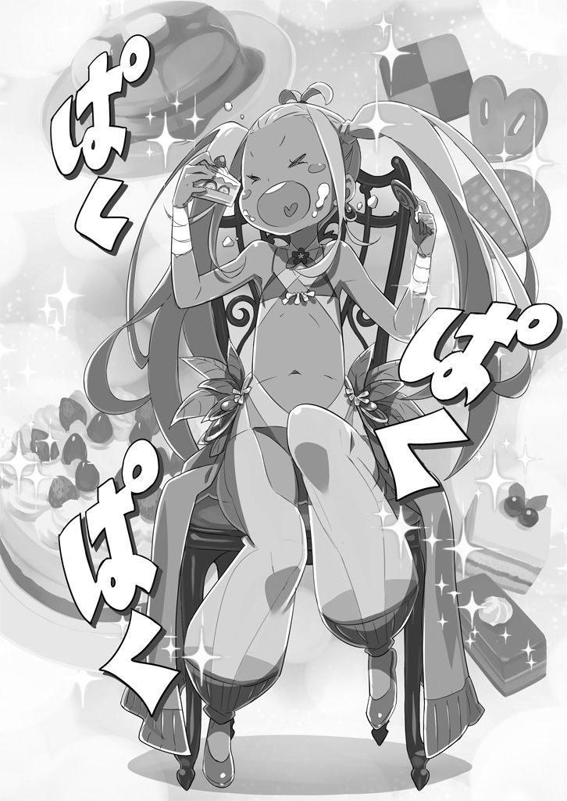

| Re:ゼロから始める異世界生活 短編集１<Re:ゼロから始める異世界生活 短編集> (MF文庫J) | |
| I ofRe:ゼロから始める異世界生活 短編集 | |
| 長月 達平 | |
| (2015) | |
B00RKU2VRI EBOK

ＭＦ文庫Ｊ
Ｒｅ：ゼロから始める異世界生活 短編集１
長月達平
口絵・本文イラスト●大塚真一郎
CONTENTS
初出：月刊コミックアライブ第96・97・98号
初出：月刊コミックアライブ第１００号
『ゼロから始まる英雄譚』
１
「吟遊詩人が村にきてるって？」
突拍子もない単語を聞かされて、ナツキ・スバルは驚き顔で聞き返した。
雑巾片手に振り返るスバルは、今日も今日とてなかなか似合わない執事服スタイルだ。窓を拭く動きがぎこちないのは、先日の怪我がまだ尾を引いているからである。
ロズワール辺境伯の屋敷と、最寄りのアーラム村を取り巻く魔獣騒ぎ──多くの犠牲を出しかねなかった事態を未然に防ぎ、スバルは文字通り名誉の負傷を負った。
事件の慌ただしさも収束し、屋敷も村もすでに普段の装いを取り戻している。スバルの治療も大部分が終わり、今はリハビリがてら屋敷の雑用に精を出しているところだ。
「そう、吟遊詩人！ さっき、村から戻ったラムが話してたのを聞いちゃったの。スバルは吟遊詩人って見たことある？」
問い返すスバルに応じるのは、涼やかな銀鈴のような美しい調だった。
声の主は腰に届く長い銀髪を揺らし、芸術家が揃って筆を折るほどの美貌の持ち主だ。ただ、魅入られそうなほど深い紫紺の瞳を好奇心で満たし、隠しきれない興奮に頬を赤くする姿を見れば、そんな感慨も愛らしさに上書きされてしまう。
スバルもまた、彼女が時々見せる子どもっぽさに魅了された一人だ。
「Ｅ・Ｍ・Ｔ（エミリアたん・マジ・天使）」
「え？ 今、何か言った？」
戯言に小首を傾げる少女の名はエミリア。
恩人であり、想い人でもある少女の無邪気な仕草にスバルは笑い、
「いや、俺も直接この目で見たことねぇけど......エミリアたん、超楽しそうだね」
「楽しそうっていうか楽しみなの。吟遊詩人さんって、歌とか踊りとかで物語を伝える人たちなんでしょう？ きっと色んなお話を知ってるはずだし......ね、スバル」
期待を込めた目で、エミリアが手を合わせてスバルを見つめる。
甘い声で名前を呼ばれて、甘えた仕草で上目遣い。エミリアほどの美少女にそんなお願いをされて、折れない男がいるだろうか。少なくとも、スバルは即座に折れた。
「あい、わかりやした。片付けて、先輩の許可もらってくっからね」
「ん。ごめんね。私のわがままに付き合わせちゃって」
「大丈夫だよ。リハビリがてらの雑用にそこまで期待されてねぇし、デートが優先」
「あ、そっか。また二人で出かけるから、これもでーとになるのね」

自覚のなかったらしいエミリアの罪作りな微笑みを見て、スバルは雑巾を戻した水桶を持って部屋の外へ。廊下の窓から見える景色、遠くに見える集落がアーラム村だ。
「吟遊詩人、か......」
口にしてみると、これが想像以上にファンタジーな雰囲気のする単語である。
エミリアの前では落ち着いていたが、心が湧き立たないはずもない。
陽気で朗らかに、歌声が人と世界を巻き込んで、物語を紡ぎ出すのだ。
想像するだに楽しげな様子に、一人、廊下を歩くスバルの心も知らず弾んでいた。
２
「それでは歌います。聞いてください。──沈む夕日に裏切られたドラフィン」
陰気で滅入る悲しげな旋律が、村の広場に梅雨の日の雨のように流れていた。
広場の中央、木材を積み上げただけの粗末な舞台に立つのは、ギターとウクレレの中間のような形をした、木製の弦楽器を奏でる人影だ。
幾何学的な模様の入った楽器の音律は弾むようだが、歌い手の技術次第でこうまで陰鬱さを発揮できるものなのか。そう感心するほど、暗い雰囲気が村を包み込んでいる。
鬱々としたメロディと歌詞の内容に引きずられ、聴衆である村人たちも死んだ魚の目をしている。この世の終わりのように泣き崩れる老婆の姿まであり、魔獣騒ぎに不安がっていたときでも、ここまで酷い様子は見かけなかったのではないか。
「こんなに苦しいのなら、いっそ楽に死にたい。死ねない。死なせてもらえない......」
歌の中では親友と婚約者に裏切られたドラフィンが、かつて大切な約束を交わした桟橋の上で夕日に見守られながら、身投げするかしまいか迷っている佳境だ。
楽器を演奏し、歌まで歌っているにも拘わらず、身振り手振りを交えて臨場感たっぷりの物語世界を展開する歌い手。一筋の涙がその頬を伝うのを見た聴衆たちの瞳にも、堪え切れない涙が浮かび、嗚咽が漏れ始めていた。
「泡を吐き、音のない水底へ。嗚呼、ドラフィン。嗚呼、嗚呼、ドラフィン......」
どうやら思い切ってしまったらしいドラフィンが川底に沈み、ただ彼の悲しみを見ていることしかできなかった風や花が、哀れな彼の死を惜しみ、終幕が訪れる──。
「興行のリサイタルに選ぶ曲か、これが!!」
「うひゃいっ！」
音の余韻も消えないタイミングで、いよいよ耐えかねたスバルが突っ込みを入れる。
バッドエンドを吟じていた詩人が飛び跳ねて驚き、途端に広場を包み込んでいた物語世界が瓦解。歌の世界に囚われていた村人たちが我に返り、顔を見合わせる。
「あ、え......」「うわ、なんだ、俺、すごい泣いてる」「やだね、年取ると涙腺が弱くて......」「ドラフィン、お前はもう一人のオレだ！」「詩人の姉ちゃん可愛いわー」
と、涙を浮かべながら口々に感想を交わし合う。そうしてひとしきり最初の感想を吐き出すと、彼らは列の一番後ろでこそこそと逃げようとしていたスバルを振り返り、
「──雰囲気ぶち壊しじゃないですか、スバル様!!」
そう、スバルが驚いて飛び跳ねるほどに怒鳴りつけたのだった。
３
「改めまして、自己紹介を。流れの吟遊詩人をしております。リリアナと申しますっ」
そう言って、ぺこりと頭を下げたのは、まだ幼さを残した可憐な少女だった。
快活さと好奇心に満ちた大きく丸い瞳に、行動的な性格を反映したような黄色の髪。二つ括りにされた髪と、薄手のマントの下の踊り子のような衣装は木の実や動物の骨を使った装飾品で飾られている。背丈は低いが、手足はすらりと長く、露出した肌は健康的な褐色をしていて、いかにも流浪の旅人といった雰囲気が漂う少女だった。
「そりゃご丁寧にどーも。俺の名前はナツキ・スバル。喧々諤々、豪華絢爛の雑用係。道向こうに見えるお屋敷で、使用人として八面六臂の大活躍中」
「けんけんにろっぴ......？ あ、いえ、どもです。よろしくお願いしますです、はい」
初対面でもスバルの挨拶はマイペースに不親切だ。リリアナは怪訝な顔を愛想笑いの下に押し込み、領主の関係者と説明されたスバルたちの機嫌を損ねないよう必死である。
しかし、リリアナのそんな警戒も、次なるエミリアの行動で一気に砕け散った。
「今の歌、すごーくよかった。私、もう今にも泣き出しちゃいそうで......」
感極まったエミリアが、とっさにリリアナの手を取って感動を伝える。興奮気味のエミリアにリリアナは一瞬驚いたが、すぐに褒められたことに気付いて微笑んだ。
「いぃえぇ！ こちらこそ、ご清聴いただいて何よりです！ まだまだ未熟な身ではありますが、そう言っていただけるだけで......ほぁ!?」
好意的なエミリアにリリアナも笑顔で応じたが、すぐにその表情がエミリアを見つめて唖然となる。ぽかん、と口を開けて固まってしまうリリアナ。
その反応にスバルたちも目を丸くするが、リリアナはなおも驚いた顔のまま、
「め、女神様ですか......？」
「──え？」
「だ、だって、うち、こんなめんこい人、見だごどなぐで！ うわぁ、うわぁ！ 髪の毛も肌も、なしたらこうなるの!? 本当に同じ人類!?」
その場でピョンピョンと跳ねて、リリアナはエミリアの美貌に感激している。
大袈裟なリアクションにエミリアは絶句しているが、スバルはリリアナの意見に完全に同意だ。エミリアは少し、自分の尋常じゃない容姿に無頓着すぎる。そこが可愛い。
と、リリアナは急に跳ねるのをやめると、ふいに楽器を掲げて一礼した。
「閃きました。聞いてください。──嗚呼、女神様」
小さく息を吸い、リリアナはその場で軽く足踏みしながらリズムを取り、滑らかな指使いで絃を弾きながらムーディーな曲を奏で始める。
「魅入られるほど深く、宝石のように淡く、紫紺の輝石を嵌め込んだ眼差し。流れる銀髪は月の涙。人形師の指先に加護の舞い降りし精緻な面貌。降り積もる白雪のような肌は踏み荒らされることを知らず。微かに長い耳が......耳が......ミミガー？」
「────っ」
流暢に歌い上げていたリリアナの美声がふいに途切れ、少女の金色の瞳が疑念、理解、驚愕の三段階の変化を遂げるのをスバルは見届けた。
彼女の視線はエミリアの耳に向き、自らが口にした歌と一つの単語を結び付ける。
「銀髪の耳長......まさか、嫉妬の魔じょりかっ！」
「よし、ストップだ！ いい歌だけど著作権法に引っかかった疑いがある！ 厳正な審査をした上で追って沙汰を出すから御社とは御縁がなかったということで......」
「──スバル」
とっさにリリアナの口を塞ぎ、不用意な発言が出ないように誤魔化しにかかるスバル。だが、そんなスバルの行動を咎めたのは他でもないエミリアだ。
エミリアはリリアナに関節技をかけ、肩を極めるスバルに唇を尖らせる。
「スバルが心配してくれるのは嬉しいけど、女の子に乱暴したらダメでしょ。めっ」
「めってきょうび聞かねぇな......ってか、そうじゃなしにしても、エミリアたん」
「いいの。気付かれてから誤魔化したって、何の解決にもならないんだから」
潔く割り切っているエミリアは堂々としたものだが、スバルの方はそういうわけにもいかない。彼女が謂れのない非難にさらされるのは、胸が悪くなるのだ。
──エミリアは人間とエルフの間に生まれた子、つまりハーフエルフである。
様々な亜人種が混在するこの世界だが、亜人族に対する差別──中でもハーフエルフには根深い偏見があるらしく、エミリアも辛い日々を経験してきた一人だ。
とはいえ、エミリアが許した以上、スバルがリリアナを拘束し続ける大義名分はない。しぶしぶ、手首、肘、肩と腕を極めていた少女の体を解放してやる。
「ぷはっ！ 腕が！ 腕がぁ！ しょ、商売道具に集中攻撃はやめてくだされっ。うら若い乙女の肌に、なんばしよっとですか、小間使いさん！」
「俺は俺の持てる力を尽くして、大切なものを守れる男でありたい。そして、残念ながら乙女の柔肌っぷりは俺の経験値でも下から数えた方が早いですよ、お嬢さん」
美少女率がいやに高い異世界だが、リリアナの女性らしさ（スバル調べ）ではワースト入りだ。下から一番はベアトリス、二番はフェルト。リリアナが三位入賞だろうか。
「ふんすっ！ 関節を極められた上に乙女心が傷付けられた！ でもでもっ」
スバルの評価に憤慨しつつも、リリアナは独楽鼠のようなはしっこさでエミリアの前に躍り出る。小柄なリリアナに見つめられ、エミリアはわずかに表情を硬くする。が、
「お美しいだけでなく、その心根も気高いのですね。私、バキュンと感動しましたっ」
「え、あ、うん、そう？」
「はぁい！ 先ほどは不躾で不用意な態度、誠に申し訳ありません。小間使いさんが引き止めてくださらなかったら、一族郎党根絶やしにされる無礼をするところでした！」
「お前は勢いで身を亡ぼす典型的なタイプだな！」
勢い全開の自白にスバルが驚くが、リリアナは元気よく楽器を掻き鳴らし始める。
「私、こう見えて感受性が爆発的に豊かですので、目の前に閃きを激発させるものがあると辛抱たまらんくなってしまうのです！ なので、エミリア様の美しさと潔さと大っぴらには口に出せない種族的理由あれこれとか複合しててんやわんやにっ！」
「お前、こっちで見かけたことないタイプで新鮮だなぁ」
不必要な溌剌さを発揮するリリアナは、騒がしいが不思議と不愉快ではない。
素直な性格と、声が原因だ。人の心をくすぐり、するりと内側に忍び込んでくる美声は天性のものだろう。吟遊詩人はなるほど、まさに彼女の天職といえる。
「もしくは孤独な老人に、羽毛布団とか浄水器とかを売りつけるのが天職」
「あれあれあれ？ 今、なんだか雰囲気的にひどいこと言われた気がしましたがっ」
感嘆するスバルにリリアナが過剰反応するが、それは爽やかにスルー。
毒気を抜かれて警戒心も薄れたスバルの隣で、エミリアも奔放な少女に頬を緩めた。
「でも、褒めてくれたのは嬉しいけど、私は別に美人じゃないと思うの」
「あ！ あー！ 今、私の中で女として許せない気持ちが激発しました！ 閃きました。聞いてください。──嗚呼、女神様め」
「黙れ！ でも、エミリアたんのその認識は矯正する必要があると思う！」
スバルとリリアナにダブルで否定を入れられて、エミリアはまるで信じられないと言いたげな顔で、困ったように小首を傾げたのだった。
４
──思えば最初に食堂に招かれた朝は、スバルも不安と緊張に苛まれていたものだ。
ロズワール邸の応接間で、スバルは紅茶のカップを傾けながらそう思う。
舌の上で転がす茶の味は、何度味わっても煮詰めた葉っぱの味で口に合わない。
「どうしたの、スバル。すごーく変な顔してるけど」
と、思い出と濃い茶の味に苦い顔をしていたスバルを、隣に座るエミリアが呼んだ。
「ちょっと過去回想してた。ほら、俺も屋敷じゃ最初は縮こまってたよなぁって」
「そうだった？ スバル、あのときも今と同じで堂々とニマニマしてなかった？」
「ニマニマって表現されると不審者臭さが増して傷付くね！」
主観と客観でかなり異なる評価にスバルは愕然とする。
エミリアは不満げに自分の頬をこねているスバルを見て、唇に指を当てた。
「ん、冗談。なんだか考え込んでるみたいだったから、ちょっとからかってみたの」
「マジか。そりゃＥ・Ｍ・Ａ（エミリアたん・マジ・悪女）だったな！」
「はいはい。それに、リリアナもそんなに緊張してなくていいのよ？」
スバルの戯言を聞き流すエミリアは、正面で小さくなるリリアナに声をかける。村での快活さを忘れたように、青い顔で縮こまるリリアナは「ひゃい」と顔を上げた。
「なんだなんだ。やけにビビってるな。さっきまでの威勢の良さはどうしたんだよ」
「そ、そげなこど言われでも、緊張すます。わ、私みたいな田舎者が、こんないぎなり領主様のお屋敷......それも、辺境伯様のお屋敷だなんで......そ、粗相したら......」
「一族郎党、根っこどころか周りの野原まで焼き尽くされるぜ。犬のようにな」
緊張して訛りが出ているリリアナに、スバルが首に手刀を当てるジェスチャー。
それを見たリリアナの顔が真っ青になり、エミリアがスバルの膝を怒って叩く。
「もうっ、スバル！」
「ごめんごめんって。まさかここまで効果覿面とは思わなくてさ」
頬を膨らませるエミリアに、スバルは苦笑しながら謝罪する。とはいえ、借りてきた猫のようなリリアナの様子に、村で振り回されたスバルは溜飲の下がる思いだった。
現在、スバルたちはアーラム村からロズワールの屋敷に戻り、応接間で談笑──というには少し、空気の重い時間を過ごしているところだった。
来客としてリリアナを迎えるために、屋敷の主人の時間が空くのを待っている。三人がソファで向かい合っている理由は、つまりそういうことだった。
「それにしても、取り次いだラムの嫌そうな顔、見たか？ まるで余計な面倒事を持ち込んだ俺たちを、厄介者として軽蔑してるような目だったぞ」
「ひっ！ やっぱり歓迎されてないんじゃ......い、今のうちに逃げないと......っ」
「大丈夫だってば。さっきからスバルも脅さないの。リリアナが可哀想じゃない」
「今のはビビらせ目的じゃなく、客観的な事実を伝えただけだよ。実際、ラムの奴はロズっちの仕事増やされるの気に入らないだろうしさ」
ラムはロズワールに心酔した屋敷のメイドだ。給仕にあるまじき傲慢な態度の少女なので、リリアナの件でロズワールに取り次ぎを頼んだときは露骨にため息をついていた。
さぞや忌々しく思いながら、主に話をしていることだろう。
「今頃、どんな悪評がロズワールの耳に入ってるかわかりゃしないな。身の丈二メートルを超す、巨漢でだみ声の吟遊詩人がお目通りを願ってるぐらいに話してるかも」
いかに傾奇者と有名なロズワールでも、会う価値があるか疑問な相手となれば顔を出すはずもない。それで望みが絶たれるのはリリアナが不憫だが──、
「そんな心配しなくても、姉様は不公平はしませんよ。ロズワール様のご意思の確認に、姉様が恣意的な感情を差し挟んだりしませんから」
そんなスバルの懸念を否定したのは、湯気立つお盆を抱える青髪の少女だった。
肩や背中の露出した、艶っぽさの強い改造メイド服を身にまとう美少女──レムだ。
部屋に入った彼女は楚々とした仕草で茶菓子を足し、お茶のお代りを空のカップに注いで回る。ティーポットを持つレムが目の前にきて、スバルはカップを差し出した。
「お菓子はともかく、お茶汲みはラムの仕事だとばっかり思ってたけどな」
「常日頃、姉様はお忙しいですから。......それに、スバルくんが飲むお茶の用意は常にレムがしたいんです。レムの想いと、それ以外のものもたくさん入れます」
「お願いだからお茶っ葉とお湯だけにしてもらっていい!?」
過激な発言にスバルの頬がひきつると、レムは「残念です」と唇を尖らせた。
魔獣騒ぎの解決以来、レムのスバルに対する態度は常にこんな塩梅だ。その親愛表現は素直に嬉しいが、微妙に戸惑っているのもスバルの男心。
これがモテ期を知らない男子の、悲しい性だとは周りも本人も気付いていない。
「ともあれ、うまいお茶とお菓子を口実に誘い込んだからな。契約は満了だ」
「そんな......おいしいお茶とお菓子と可愛いメイドなんて、照れます」
「事実だけど、一つ自然に付け足したよな？」
赤らめた頬に手を当てて照れているレムに、スバルは静かな突っ込み。それを受けてレムは照れ笑いを浮かべたまま、そっとスバルに小声で、
「それにしても......ただの吟遊詩人と聞いてますけど、どうしてお屋敷に？」
「あー、エミリアたんがいたくお気に入りで......ってのもあんだけど、もうちょい話は複雑でな。あいつ、どういうわけかエミリアたんの認識阻害を突破した」
小声でスバルが応じた内容に、レムの瞳がわずかに細められた。
認識阻害というのは、ハーフエルフであるエミリアの素性を周囲に気付かせないため、彼女の着たローブに編み込まれた術式の効果のことだ。エミリア自身の許可か、その効果を突破できる力の持ち主でない限り、エミリアをエミリアと認識できないはずなのだ。
「その効果を突破した......ロズワール様の編んだ術式ですから、それが解けるようなことは考え難いはずです」
「だろ？ なんで、さすがに放置できなくて連れてきたってとこ」
そうして連れ込む口実に使ったのが、ラムのお茶とレムの茶菓子だ。最初は渋っていたリリアナも、その口実であっさりと転んだ。彼女の将来がひどく心配だ。
いずれにせよ、放置できない問題と考えて、スバルは彼女を屋敷へ連れ帰ったのだ。
「わかりました。つまり、余計なことを口外される前に口を封じればいいんですね？」
「わかってねぇし、お前が言うとシャレにならねぇな！」
「もう、嫌ですよ、スバルくん。さすがにレムもそこまでしたりしませんよ」
冗談です、と舌を出して可愛らしく笑うレムだが、諸事情により説得力がない。
その諸事情はもはや、スバルの記憶の片隅にしか残っていないものなのだが。
「にしても、さすがレムの茶菓子の効果は抜群だな」
見れば、先ほどまで緊張でカチコチだったリリアナも、香ばしい焼き菓子を口にした途端に夢中になっている。家事万能のレムだが、菓子作りの才覚は突出していた。
「どれ、俺も一つ......うん、やっぱり超うめぇ。レムの菓子は絶品だわ」
「ありがとうございます！ スバルくんのために全身全霊を込めて......二度とお菓子を作れなくなってもいいから、ありったけを......という気持ちで作りました」
「こんな何気ないひと時にそんな魂燃やし尽くしそうな覚悟で!?」
レムの一球入魂の味を確かめながら、スバルは菓子作りも命懸けなんだと軽く引く。
一方、リリアナもリラックスできたらしく、ソファに体重を預けて腹を撫でていた。
「うとうと......うとうと......」
「だからって、居眠りを見逃してやるほど大きな心は持ち合わせてねぇよ！」
「はっ！ 寝てません！ 寝てませんよ！ 寝たように見せかけて、私を監視していた刺客をおびき出し、一網打尽にする算段だったのですっ」
「......っ！ 大変、誰に狙われてるの......？」
「ほら見ろ！ うちの箱入り天使が騙された！」
口の減らないリリアナに、人を疑うことを知らないエミリアがまんまと騙される。
涎の垂れかけた口の端を拭うリリアナは、百かゼロかの極端な対応しかできない子なのかもしれない。安心して見守ることも許さない少女に、スバルは吐息をこぼす。と、
「ときに、お客様は吟遊詩人様と伺いました」
そう言って話題を広げたのは、意外なことにレムだった。
ソファに立てかけられた楽器──リュリーレを眺めるレムに、リリアナは慌てて楽器を抱えると緊張に震えた声を上げる。
「は、はい！ リュリーレ一本で世界に挑みかかる無謀な夢追い人ですみません！」
「お前はホントに権威に弱い奴だな！」
いっそ清々しいほど卑屈なリリアナの態度だが、レムはそれを気にせずに手を叩く。その薄青の瞳に浮かぶ輝きは、リリアナの歌を初めて聞いたエミリアと同質のものだ。
「では、お客様は有名な物語をいくつもご存知でいらっしゃるんですよね？」
「──！ ええ、はい！ それはもう、お任せくださいっ」
レムの質問に目を輝かせ、リリアナはリュリーレをロックに弾き鳴らす。
「私も独り立ちして十年以上、こうしてリュリーレで身を立てている女です。多くの人たちを熱狂させ、狂乱の渦に巻き込み、涙させる歌には自信がありますっ」
「ちょっと待て！ 独り立ちして十年って、お前、いったいいくつだよ！」
「今年で二十一になりますが、何か？」
「その見た目と落ち着きのなさで二十一!?」
幼い顔つきに未成熟な胸、尻、腰。貧相な体で肌を露出するのが痛々しいと思っていたが、彼女の実年齢を知って痛々しさがさらに増す。
「合法ロリがどうとか言ってる場合じゃねぇ......もっとおぞましい何かを見たぜ......」
「ええい、うるさいですねっ。好きな人には需要があるんです。それよりっ」
憐れみつつ感動する忙しいスバルを押しのけ、リリアナはレムの期待のこもった視線を見つめ返す。リュリーレを抱えて、片足をソファに乗っけてポーズを取った。
「さあ、どんなご要望にもお応えしましょう。どうしますか？ 名作の中から何か......たとえば不朽の名歌といえば『剣鬼恋歌』なんかよさげでしょうか！」
「物騒なタイトルだな、おい」
「何をおっしゃいますか！ 『剣鬼恋歌』といえば、ルグニカならず諸国でも歌い継がれる近代の名歌ですよぅ！ 不器用で、でも真っ直ぐな武人の恋路に、多くの乙女たちは同じだけ想われたいと焦がれて、腰砕けになるものなんですっ」
「そ、そうなのか......」
「はぁい、それはもう！ 特に最後の最後、剣鬼が想い人と剣を交えて、見るもの全てを魅了する剣戟を繰り広げる場面なんて、涙なしには歌い切れません！」
「想い人と斬り合ってるじゃねぇか！」
概要だけだと殺伐しすぎているようにしか思えない。
元の世界なら『殺し愛』なる文化もあったが、それはスバルのフォロー範囲外だ。
ただ、スバルにとってはそんな感想しか浮かばないタイトルなのだが、
「何を言うんですか、スバルくん。『剣鬼恋歌』はルグニカを代表する名歌です。レムだって何度も何度も聞いているんですよ」
「マジで!? そうなの!? エミリアたんも腰砕けなの？」
「え、ごめんなさい。私はあんまり詳しくないから、期待に応えてあげられないかも」
「いや、その反応でいいよ！ エミリアたんは俺の思い描いた通りの反応だよ！」
むしろ、レムの意外な趣味趣向が判明して驚いているぐらいだ。
騒ぐ三人を余所に、リリアナは頭の中の歌本を検索しているようで、
「他といえば『ヴォラキアの青い雷光』や『剣の丘の英傑像』。それにそれに、カララギ建国の雄である、立身出世の代名詞『荒れ地のホーシン』も欠かせませんよぅ」
「色々あるもんだ。それにしても、やっぱり歌って偉人系のが多いのか？ それともお前の好みでそういうのばっかり集めてるだけか？」
「私の好みもありますけど、やっぱり大衆が好むのは英雄譚や偉人伝なんですよ。誰でも華々しい物語に憧れを抱くものです。私はそこから一歩進んで、それを歌い継ぐものになりたいと欲を掻いているわけですね」
照れたように頬を赤らめ、リリアナは自分の旅の目的の一端をスバルたちに明かす。
彼女のその態度に、スバルは茶化すつもりはないと首を横に振った。
「立派なもんだよ。その歳でやりたいことが決まって......って、二十一だったな」
「ちくちく言いますけど、私が二十一歳だと小間使いさんに何か問題でも？ あんまりしつこいようだと、出るとこ出ますよ、私も」
「この世界で出るとこってどこだよ......」
裁判めいたものが行われているものなのか、世界事情に疎いスバルにはわからない。
「それでは、お客様はそういった歌を広めるのが目的で旅を？」
「いぃえぇ、それだけでは。もちろん、歌を広めるのも私の使命であると思ってはいますが、もっと根本には私自身の目的がありまして。それは......」
レムの問いかけに、リリアナは気を取り直した顔で応じようとする。しかし、満を持しての答えは言い切られる前に遮られた。それは、
「──ご歓談中に失礼いたします」
ノックする音が響き、押し開かれる扉の向こうでメイドが一人、丁寧に頭を下げる。
レムに瓜二つの容姿、桃色の髪の下で薄赤の瞳を細める少女──ラムは顔を上げ、
「大変お待たせいたしました。主、ロズワール様がお客様にお会いになられます」
そう、『御客人』をもてなす態度で口上を述べたのだった。
５
「私がこの屋敷の主、ルグニカ王国辺境伯ロズワール・Ｌ・メイザースだーぁとも」
「............」
正面の椅子に腰掛け、自ら名乗った人物を前に、リリアナは声もなく硬直していた。
無理もない、とそれを横目にスバルは同情する。
辺境伯などと、貴族の中でも爵位の高い相手に心の準備もなしに引き合わされたのだ。ただでさえ生きた心地がしないだろうに、よりにもよって相手が──、
「白塗りにピエロメイクの変態に会わされるとは思ってもみなかっただろうしな」
「バルス。ロズワール様への不敬は許されないわ。ねじ切るわよ」
「今のでロズっちのことって気付いたお前も同罪だし、ねじ切るって俺の何をだよ」
「ナニを、かしらね......」
ゾッとする流し目でスバルを見るのは、先の丁寧さを完全に喪失したラムだ。
そのラムを隣に控えさせ、悠然と革張りのソファの上で足を組むロズワール。
恵まれた容姿や肩書きを、その奇癖と仮装で粉々にミキサーしてドブに捨てている。
こんな風体でも領主としては高く評価されているのだから、領地で前評判を聞いていた人間ほど、実物を目にしたときのギャップに苦しむことだろう。
「やーぁっぱり、この初対面の相手の驚く顔を見るのが最高の喜びだーぁね。スバルくんみたいな反応も悪くないけど、やっぱりこの手の反応が最高だ。ねーぇ、スバルくん」
「俺を人の心を弄んで楽しむご同類みたいに言うのやめてくれる？ 俺はそういう性格の悪い性癖、ちょこっとしか持ってねぇよ」
しいて言うと、他人の神経を逆撫でするとき、言葉にできない快感を覚える。
傍目にすればどっちもどっちなスバルとロズワールであるが、互いに互いが相手よりマシと思っているあたり、実はどっちも救えなかったりする。ともあれ、
「お、お目通り叶いまして恐悦至極にございます。わ、私は吟遊詩人などしております、リリアナと申します。辺境伯様におかれましては、ご機嫌うるわっしゅ」
「ほっほーぅ、立派立派。この場でそれだけ動揺しながら言葉が作れるんなら、顔を合わせた意味もあったとーぉも。私は寛大なことで有名だーぁから、安心したまえ」
自画自賛の姿勢だが、ロズワールのそれは嘘偽りない言葉だ。実際、ロズワールが創作物でありがちな悪役貴族程度の癇癪持ちなら、スバルなど初日で首が飛んでいる。
「吟遊詩人がきてるって聞いて、村でリリアナに会ったの。この子、珍しいお話をたくさん探してるっていうから、ロズワールだったら力になってあげられるかなって」
「なーぁるほど。エミリア様にそうまでご期待されているとあらば、わーぁたしも普段は出さない隠された力をお見せするしかありませんねーぇ」
薄く笑い、ロズワールがソファの背もたれを軋ませて両手を組む。考え込むように瞑目する彼は、数秒してからオッドアイの片目──黄色の瞳でリリアナを見つめた。
その妖しげな視線を浴びて、エミリアの隣に座るリリアナがびくりと震える。
「そう怯えることはなーぁいとも。私は君の味方だ。エミリア様が君に味方しようと決めた以上は、私もそーぅあろうと努力するとも」
「は、はひ。あり、ありあり、ありがとうござりまする」
「それにしても、吟遊詩人。吟遊詩人か。まーぁったく、素晴らしいタイミングだよ」
恐縮しきったリリアナに、ロズワールが笑みを深める。
紅を引いた唇が弧を描くのを見ながら、スバルは何となく嫌な予感を覚えた。ロズワールの微笑みが、何か企んでいる顔にしか見えなかったからだ。
「リリアナ、と言ったかーぁな。エミリア様のご要望だ。君の望みに応じる構えが私にはある。けーぇれど、もうちょっと詳しい話を聞かせてもらいたいところだーぁね」
「く、詳しいお話と言いますと、どげなことをお話せば......」
「そうだね。──君の旅の目的、そのものズバリというのはどーぅだね」
わずかに低くなるロズワールの声に、それまで強張っていたリリアナの表情が変わる。そしてその変化は、リリアナがこれまで見せたことのない表情へと繋がった。
リリアナは一度だけ瞑目し、再び目を開いたときには真っ直ぐロズワールを見た。
「──私は、世界でもっとも新しい『伝説』を求めて旅をしています」
国内有数の権力者の視線の前で、リリアナは揺るがない決意を瞳に宿していた。
彼女の口にした言葉──もっとも新しい『伝説』という響きにスバルの心が震える。
スバルとて男だ。その言葉が持つ力に、胸が熱くならないはずがない。
「もっとも新しい、伝説......」
「はい、そうです。私はそれを求めて、それを歌うために旅をしています」
リリアナの声には魔性が宿っている。
聞くものの心に、感情を直接届ける魔性だ。それに中てられたように、小さく呟いたエミリアにリリアナは頷いた。そして彼女は傍らにあった楽器を手にし、音を鳴らす。
「私たち、吟遊詩人という生き物は物語を歌にして生きています。歌は聴衆の心に浸透し、確かにあった過去を、歴史を聞いたものの魂に刻み込みます。長く長く、伝わってきた歌には力があり、それは歌を作った詩人が死しても変わらず世界に残り続けます」
朗とした声でリリアナが続ける。誰も、口を挟むことができない。
「私たちは、形あるものを残すことができません。物を作れず、文字も知らず、定住することすら本能が許さない。世界をこの足で渡り歩き、辿り着いた先で歌を歌い、誰かの心に歌を伝えることができたら、また別の土地を求めて歩き続ける。そして、いずれは誰もいない荒野で、楽器を枕に朽ち果てる──そういう生き物なんです」
声に、言葉に、瞳に、仕草に、力がある。それは彼女が、歌うときと同じ。
「形に残るものを残せず、心にしか何かを残せない生き物だからこそ、私たちは誰の心にも残り続けるものを生み出したい。自分が確かに生きて、歴史に魂を刻んだのだという証が欲しい。求めるものがあるとすれば、その栄誉だけなのです」
音楽はないが、志を語る彼女の言葉は歌に匹敵するものをスバルに刻み込んだ。
リリアナの語った悲壮なまでに確立された人生観。それを聞いてスバルも、部屋の誰も言葉を発することができずにいる。
頑なで、あまりに独りよがりな結論と断ずることもできただろう。だが、それをするということは、彼女と彼女に比類する吟遊詩人たちの生き方を否定するということだ。
そうするだけの確かな『何か』は、スバルの中にはいまだない。
故に、スバルにはリリアナの覚悟を評する資格の持ち合わせがなかった。
「なーぁるほどね。......だから、新しい伝説ってことなわーぁけだ」
言葉の途切れた室内で、リリアナの覚悟に納得した声はロズワールのものだ。
この中でもっとも多くの決意と触れてきただろう男は、彼女の覚悟に頷いていた。
リリアナもまた、そのロズワールの頷きに敬服するように姿勢を正す。
「長く強く、人々の心に残り続けるのは色鮮やかな伝承──歴史です。元々存在する歌を継ぐのも、吟遊詩人として誇りある生き方です。ですけど......私はできるなら、誰の心にも残る歌を、最初に歌った歌い手でありたい。この世でもっとも新しく、もっとも瑞々しい歴史を、この喉で、舌で、歌い伝えたい。──それが、私の望みです」
「......ぁ」
だからこそ、もっとも新しい『伝説』とリリアナは言ったのだ。
まだ誰も歌にしていない、誰も知らない、しかし世界に刻まれる歴史の一ページ。
それを歌にすることが、彼女がこうして道なき道を行き、荒野で朽ち果てる最期が待つとわかっていながら、それでも成し遂げたいと願うことなのだ。
「その意気込みは立派だーぁとも。でも、どんな伝承と求めるというのかね？ 形のないものを追いかけるそれは、雲を掴むような話だからねーぇ。せめて、自分の中だけでも確かな形がないことには、欲しているものすら見失いかねない」
「......できるなら、英雄譚を望みます」
「英雄譚......」
ロズワールの問い。リリアナの答え。エミリアの感嘆。
三者の反応が意味するものと、『英雄譚』という響きの持つ力にスバルも魅了される。
英雄譚──それは確かに心が躍り、誰もが熱狂する力ある言葉だ。
元の世界でも、歴史に名を遺したものたちの多くは有名な武功を立てた英傑たち。英雄譚というものは、いつの時代どこの世界でも、人々の心を虜にする力を持っている。
「それなら、リリアナが知りたいのは新しい英雄のお話？」
「......簡単なことではありませんけどね。今の時代、新しい英雄だなんて。それこそ魔女が跋扈し、脅威が世界に溢れ返っていた数百年前なら、英雄が生まれるための土壌もあったでしょうが......上辺だけでも平和にある今の世では、新しい英雄なんてとても」
平穏な時代であればこそ、そこに英雄が生まれる余地はない。
英雄のいない世は、英雄を必要としない世でもあるのだ。リリアナもそれがわかっているらしく、どうにもならない問題に感情を噛み殺している様子だ。だが、
「──面白い」
呟きは小さかったが、この場にいた全員の鼓膜に届いていた。
ただ、その呟きの意味するところがわからず、スバルの表情に当惑が浮かぶ。その視線を浴びながら、ロズワールは左右色違いの瞳を大きく見開いて笑っていた。
「未知の英雄譚を望む吟遊詩人が、こうしてこの土地を訪れた。こーぉの運命的な流れを面白いと言わず、なーぁんとするのかね。いやいやいーぃや、面白い！」
「ちょっと、ロズワール。何を言ってるの？ みんなも......私もだけど、リリアナも困ってるじゃない。一人でわかってないで、ちゃんと説明して」
楽しげなロズワールにエミリアが詰め寄ると、彼はその美貌を見つめ返して、
「簡単なことですよ、エミリア様。リリアナ嬢の望みは、成就しますとーぉも」
「えっ！ それじゃ、ロズワールは新しい英雄譚に心当たりがあるの？」
「もちろんありますとも。──そしてそれは、エミリア様も無関係じゃーぁない」
「私も......？」
見当もつかない、という顔つきのエミリアにロズワールは意味深に笑う。その表情をエミリア越しに見ていたスバルは、ふとロズワールの意図に気付いた。
──その想像が正しいとしたら、なるほどそれは確かに新しい『伝説』だ。
「新しい英雄に心当たりが？ でしたら、どうかそのお話を......！」
「あ、それはまーぁダーぁメ」
「むひん！」
旅の目的が叶うと聞いて、逸るリリアナをロズワールが無慈悲に撃ち落とす。潰れた蛙のような悲鳴を上げるリリアナに代わり、エミリアがロズワールを睨み付けた。
「ロズワールっ」
「そーぉんな恐い顔をなさらずに。お美しい顔が台無しです。そーぉれに、何もこれは私が意地悪してるわけじゃーぁありません。私がそんな悪人だとお思いですか？」
「私、スバルとロズワールはそういうことしてもおかしくないって疑ってるの」
「熱い風評被害！」
流れ弾を食らったスバルに、エミリアが「あ、そんな意味じゃないの」と慌ててフォローを入れる。その雑なフォローを前に、潰れたリリアナが再度ロズワールを見上げ、
「そ、それでは......どうしたら、そのお話をしていただけるんですか？」
「新しい『伝説』......それはね、私たちにとっても軽はずみに口にできる内容じゃーぁないわけ。だーぁから、まずは君が信用できる人物か見極めなきゃなんだよねーぇ」
「な、何をすれば!? 手、手はダメですが、足の指ぐらいなら誓いに差し出しても！」
「落ち着け。そしてお前はもっと自分の体を大事にしろ、女の子」
筋もののケジメみたいなことを言い出すリリアナを宥めて、スバルはため息。
確かに流れの吟遊詩人という肩書きは、住所不定無職との差別化が難しい。異世界から召喚されて戸籍もないスバルと、素性の怪しさではいい勝負といったところだ。
ともあれ、ロズワールの言い分は正論だ。ロズワールの目論見がスバルの想像した通りだとすれば、軽はずみにリリアナを巻き込むことなどできるはずもない。
肩を落とすリリアナ。流れの吟遊詩人であることが、流れの吟遊詩人をしている理由を阻むとは皮肉もいいところだった。
「と、そーぅいうわけだから、まずは見極めの時間が必要だ。そこでどうだろうか。君に数日、屋敷に滞在する許可を出そうじゃーぁないの。その間に君が信用できる人物だと認めることができれば、英雄譚の心当たりを明かしてあげちゃおう」
「──っ！」
地獄に仏とはこのことか。
リリアナの今の心境を言葉にするなら、まさにそんなところだろう。瞳に希望を宿すリリアナを見ながら、奈落に突き落としたのもロズワールなのにとスバルは思う。
「わ、わかりました！ 私も女ですっ！ そこまで譲歩していただいたのなら、乗らずして何が吟遊詩人か！ どんとこいですよ！ どんとこいっ！」
これほどわかりやすい飴と鞭に掌で踊らされる少女を見て、スバルはリリアナには踊り子としての才能もあるのではないか、とぼんやり考えたのだった。
６
「......あれれ？ ひょっとして私、いいように遊ばれてませんでした？ 気のせい？」
「気のせいっていうかお前のせいだよ」
アーラム村までの道のりを連れ立って歩きながら、スバルは隣のリリアナのちょろさを指摘してやる。すると、彼女はスバルの指摘にひどく傷付いた顔になり、
「な、なんてひどいこと言うんですかっ。騙されて弄ばれたことに気付いて消沈する乙女に対する態度とは思えません......ねえ、そう思いませんか！」
「いいえ、お客様。スバルくんはいつでも素敵です」
「盲目的なお答えに私は憤懣やるかたないっ」
半泣きのリリアナを突っぱねたのは、二人に同行しているレムだ。孤軍奮闘に震えるリリアナを見ながら、スバルはこの先しばらくは退屈しなさそうだと吐息をこぼした。
ロズワールの奸計にまんまと引っ掛かり、屋敷での監視が決まったリリアナ。
今はアーラム村まで、彼女が置いてきた荷物を引き取りに向かう途中だ。表向き、スバルたちはその手伝いだが、実際にはリリアナを逃がさない監督役というところだ。
事実、スバルはロズワールにリリアナから目を離さないよう釘を刺されていたし、レムは信頼に欠けるスバルのバックアップだろう。スバルもリリアナも信用されていない。
実際はスバルの深読みで、レムの同行は彼女の意思が尊重されただけだったのだが。
「けど、ロズっちも意地が悪ぃよ......狙いはわからなくもねぇけどさ」
「小間使いさんも、お館様のお考えに想像がついていらっしゃるんで？」
「おおよそは、な。けど、ロズっちと同じ理由で俺も口は割ってやらねぇ。そこんとこは俺もあいつと同意見だよ。癪に障るけどな」
「むぎゅっふ」
スバルの口を割らせるのに失敗し、リリアナは珍獣のような悲鳴を上げる。旅の目的を目の前にして、なかなか全容が見えない彼女の境遇には同情すべき点があるが、
「実際、歴史に名を刻むなんて簡単なことじゃねぇしな。英雄譚やらなんやらなんて、歴史の今から探そうなんてするとピンとこねぇよ」
「そうなのですよっ。なかなか難しいんです。世にまだ名の出ていない英傑を見つけ出して、その軌跡を歌にできるならこれ以上はないんですが......もしも、未来を見てくる方法でもあったりしたら話は別なんですけどねっ」
「そ、そそそ、そんな方法なんて、ある、あるわけねぇじゃねぇですか、馬鹿か！」
「なぜにそんな過剰反応されたんです？」
ある意味、『死に戻り』は未来予知に類するものと言っても間違いではない。
自分の特殊性に会話が掠り、動揺するスバルにリリアナが不審な目を向けてきた。しかし、そのスバルとリリアナの間に急にレムが割り込む。レムは笑顔で手を叩き、
「そんなお客様に朗報です。レムは、実はその新しい伝説に心当たりがあります」
「ええ!? ほ、本当ですか......!?」
思わぬ吉報に巡り合った、とリリアナの表情が驚きと喜びで変顔になる。ここまでのレムの好意的な態度からも、心当たりがあるという台詞には信憑性があった。
が、一方でそれを黙って見過ごせないのはスバルだ。レムの心当たりがロズワールの隠した内容なら、それをリリアナに伝えてしまうのは時期尚早だ。
そんなスバルの心配を余所に、レムは自信満々な顔で隣を手で示した。
「スバルくんです」
「──えっ」
「もっとも新しい伝説。そして、これからその名を上げていく英傑、スバルくんです」
スバルとリリアナの唖然とした声が重なり、レムが積み重ねるようにスバルを推す。
あまりに堂々とした推薦に、スバルは「え、ギャグ？」と聞き返すのを忘れた。
「スバルくんです」
畳みかけるレムの言葉は、本気なのか誤魔化そうと本気なのか判断が難しい。ただ、少なくともリリアナの中では結論が出たらしい。彼女はスバルとレムの顔を見比べて、
「閃きました。聞いてください。──新しい伝説、女たらし」
「黙れ！」
信じる素振りすら見せないリリアナを一喝し、スバルは深々とため息をこぼした。
村に降りかかる災厄を未然に察知し、魔獣による被害を体を張って食い止めて、領民たちの安全と信頼を守り通した領主の従僕──誰が信じるだろう、そんな話。
「レムは本気だったんですけど......信じてもらえなくて残念です」
しゅん、とうなだれるレムが本当に残念そうなので、スバルの方が申し訳なくなる。
その純粋な信頼に報いられるほど、大した男ではない自覚がスバルにはあるのだ。
『死に戻り』の力は、スバルがこの異世界で得た、唯一にして最後の砦──だが、その力があっても、スバルは何度も村を、そして屋敷を悲劇の渦から救えなかった。
自分以外ならもっとうまくやっただろう。そんな自分への評価が根底にはある。
「どんな死に方しても、痛ぇのに変わらないしな。......もっと、気楽にセーブ＆ロードさせてくれてもバチは当たらねぇと思うのによ」
いくつもの制約と、『死』という絶対のトリガーにより発動する能力だ。
望んで得たものではない故に、諸手を上げて歓迎することもできない。
自分に超常の力を与えた存在には、感謝よりも文句をつけたいのが本音だった。
ふいに空気が変わったのは、そのときだ。
「──スバルくん」
低く、警戒を帯びた声でレムがスバルを呼び、伸ばした上で進路を遮っていた。
レムの声に込められた真剣な響きに、考え込んでいたスバルも即座に現実に立ち返る。そして、レムが自分を呼び止めた理由をはっきり目にした。
「......なんだ、こいつら」
呟くスバルの眼前、村までの道を塞ぐように立つのは四人の人影だ。
明らかに不審者──人影は全身をすっぽりと、白い衣で包んでいる。顔を隠し、手足の長さを隠し、体格を隠し、その素性を完全に白の中に埋没させていた。
白い頭巾、白いマスク、白い装束。頭から足下まで全身白尽くめであるのだから。
「一日に、ロズワール以外の変態とこうも出くわすことになるとは......」
軽口を叩いて、スバルは周囲に目を走らせる。
奇抜な衣装でこちらの目を引き、別働隊が奇襲を仕掛けてくる動きはひとまずない。ならば単なる旅芸人ということも、黙って立ち塞がることから考え難いだろう。
「道がわからないなら足下をご確認。草のない整備された地面が、世界的な共通語で『道』に分類されるもんだ。ちなみに俺の後ろは領主の屋敷、正面は小さい村だけど......」
「────」
「あ、やっぱり、道が聞きたい迷子の集団ではないのね」
挑発的なスバルの煽りに無言で、白装束たちは長い袖の先から刃をチラつかせる。
間合いが見え難い得物を手に、滑るように接近する白装束にスバルは息を呑んだ。
警告すらせず、四人組は固まるスバルたちへその刃を振り上げ──、
「どこのどなたかは存じませんが、敵対する意思があると判断します」
先頭にいた白装束の顔面が、突き上げられるレムの拳に激しく打ち抜かれていた。
肉が固いものに潰される音がして、逆さに吹っ飛ぶ男が頭から地面に転がり落ちる。四肢をだらりとさせて仰向けの顔面、マスクが真っ赤に染まっていくのが見えた。
そのあまりに凄惨な有様に、スバルは「うわ、痛そう」と素直な感想を抱く。
「──え」
見れば、それまで無言だった白装束も呆然とした声を漏らしていた。ブッ飛ばされた仲間の方を見て、棒立ちになっている姿には急速に人間味が感じられる。
もっとも、それはこれから起きる出来事には何の影響も与えないことだが。
「レムの武装は先日、森に落としてきてしまったので、代わりのものが届くまでは無手でお相手することになってしまいます。よろしいですか？」
森に落とし物、などと可愛らしい表現だが、落としてきたのは棘付きの鉄球という凶悪な代物だ。そしてそれを好んで得物とするレムの白く細い両腕は、今しがた男を殴り飛ばしたように、美しい凶器でもある。
両手を掲げて、その凶器を見せつけるレムの姿に白装束たちは即座に結託。
「退くぞっ！」
迫ったときと同じように、男たちは滑るように後退し、意識のない仲間を担ぐと素早くこの場を離脱した。横手の森に入って逃げる男たちをレムの視線が追いかけるが、その気配が完全に遠ざかったのを見ると、彼女の肩から力が抜ける。
「少しだけ焦ってしまいました。手ぶらのときにああした輩に会うと、スバルくんを守りきれるかわかりませんから」
「焦ってたわりには、きっちり腰の入ったいい右ストレートだったな」
「スバルくんにそんな風に褒められると、照れます」
赤らめた頬に手を当てるレムに頷きかけ、スバルは白装束の逃げた森を見やる。単なる物盗り、にはとても見えない連中だったが。
「どう思う？ エミリア絡みの妨害とかかな」
「その可能性はありますけど、ロズワール様も敵の少なくない方でいらっしゃいますから。あのぐらいの牽制なら頻繁ではありませんけど、ありえることですよ」
「マジかよ、職場の安全性をちょっち疑問視するぜ。──あと、だ」
レムの答えに微妙に腰が引けつつ、スバルは最後にじろりと隣を睨む。そこには現在に至るまで沈黙を守り続け、今はこっそりと背中を向けようとしていた少女がいる。
その肩を後ろから掴み、スバルは自分にできる最大限に友好的な笑顔を浮かべて、
「なーにを逃げ出そうとしてるのかなぁ、リリアナちゃーん」
「ひぃっ！ すみませんごめんなさい謝りますからそんな怖い顔しないでくださいっ」
「怖い顔してねぇよ！ 緊張をほぐそうと笑顔オブ笑顔だよ、よく見ろ！」
「ひぃっ!!」
スマイル全開のスバルになおも怯えるリリアナ。その反応にスバルは愕然としたが、そんなスバルからレムがリリアナを引き取り、子犬をあやすように背中を撫でた。
「大丈夫、スバルくんは怖くありません。ちょっと人より目つきが素敵なだけです」
「そ、それは個人差ある感想ですけど、もう大丈夫です。落ち着きましたです、はい」
「色々微妙な気がすっけど......まぁいい。それよりどうして逃げようとしたんだよ。まさかとは思うけど、お前......」
あの白装束とグルで、エミリアの王選を妨害する輩──それが目的でスバルたちに近づいたのではないか。そう聞こうとした瞬間、リリアナはその場に土下座した。
「しゅみましぇんでした！ でもでも、私が悪いわけじゃないと思うんです！ ただ、あの人たちはずっと私を追いかけてきてまして、それをどうにかしたいなー、そうだお屋敷の人の力が借りたいなーなんて思ってたりしてみたりみなかったりっ」
土下座するリリアナの言い訳を聞いて、スバルは目を白黒とさせる。その必死さから、彼女が敵の回し者という可能性は消していいとは思うが。
「居眠りのときの、刺客に狙われてるって言い訳、嘘じゃなかったのかよ!?」
それとは別の問題が浮上した雰囲気に、スバルは頭を抱えて唸るしかなかった。
７
「と、そんなわけで、リリアナは得体の知れない連中に追われてるって話だ」
報告を締めくくり、スバルはソファに深く腰を沈めた。
場所は戻ってロズワール邸の執務室。室内にいるのはスバルを含めて四人。スバルは自分の隣に座っているレムを指差して、
「正直、レムが一緒にいてくれて助かったよ。こう言っちゃなんだが、俺とリリアナの二人だったら間違いなくやられてた」
「はい。レムも一緒でよかったです。鉄球があればもっとお役に立てたんですけど」
「その場合、あいつらは森の肥料か。......うん、お淑やかで可愛かったと思う」
虐殺の回避にスバルは胸を撫で下ろす。微笑むレムに殴り倒された男も、よもや可愛いメイドに撲殺されかかるとは思っていなかったろう。その気持ちは誰よりもわかる。
「それで、問題の吟遊詩人は今は客室？」
「エミリアたんと一緒に、な。名目は安全確保のためだけど、下手にプレッシャーかけて逃げ出されると困る。何も知らないエミリアたんなら適任だ」
「そう。ロズワール様があの詩人を留め置きたい理由はわかっているようね」
顎を引き、ラムは冷たい視線でスバルを射抜く。その視線にスバルは肩をすくめた。
「リリアナを、エミリアたんの王選用の喧伝担当みたいな立場にしたいんだろ？ リリアナの奴は自分の手で新しい英雄の歌を作りたがってる。国の新しい王様の立身伝なんて、その目的にドンピシャみたいなもんだしな」
「バルスにしては理解が早いわ。首から上が空洞のカボチという疑いは晴れたわね」
「お前、今までジャック・オ・ランタンとでも会話してるつもりだったの？」
相変わらずなラムの評価はともかく、ロズワールの思惑はそんなところだろう。
テレビや新聞といった、大衆への情報伝達手段が確立されていない世界だ。各地を巡り、歌で歴史や事件を伝える吟遊詩人の影響は、きっとスバルの想像以上に大きい。
──王選においても、リリアナの歌はエミリアの大きな力になる。
「スバルくんも、理解が早くてなーぁによりだとも。私の方針としては、今まーぁさに君が言ってくれた通り。ちょこーぉっと補足すると、きちんとお互いのメリットとデメリットの兼ね合いは取れてるつもりだーぁけどね」
「メリットとデメリット、ね」
我が意を得たり、とほくそ笑むロズワールの答えにスバルはきな臭さを感じる。
そんなスバルの反応に、ロズワールに代わってレムが目を伏せながら、
「言い難いことですけど、エミリア様はハーフエルフでいらっしゃいます。通常の詩人の方には、それを理由に提案を断られる可能性も否定できません。その点、リリアナ様はエミリア様に親しげでいらっしゃいますし、条件次第で引き受けていただけるかなと」
「自分じゃ解決できない厄介事のケツをこっちで持ってやれば、それにつけ込んで提案も断れない雰囲気にできるって寸法か。......俺、今すごい悪い顔してない？」
「いつも通りの悪人面よ」
「いつも通りに素敵です」
姉妹で食い違った評価を受けつつ、スバルはロズワールの性格の悪さに唇を曲げる。
リリアナを屋敷に引き止めた話術といい、本当に悪知恵と舌が回る人物だ。
軽く非難するように睨むと、満面の笑顔で手を振られた。スバルはため息をつく。
「ともあれ、当面はリリアナの周囲に気配りしつつ、問題解決狙いってとこか。襲ってきた連中を逃がしたのがやっぱり痛いな。一人でも捕まえておけば......」
「骨の五、六十本折って何もかも吐かせてやれたのにね」
「そんだけやったらもう血反吐も出ねぇよ、勘弁してやれよ」
冗談とも断言できないのが、ラムの忠誠心の恐ろしいところである。
「俺も気をつけるけど、仮に襲われたら裏声で助けを呼ぶぐらいしかできねぇな。さすがに警戒中の領主の屋敷に仕掛けるなんて、相手もそうそうやれねぇだろうけど」
「スバルくんの声が聞こえたら、レムはすぐに飛んでいきます。レムが掃除中でも、料理中でも、入浴中でもいつでも呼び出してください」
「不潔」
「俺が何か言う前に軽蔑した目で見るのやめろよ！」
見えない尻尾を振るわんこメイドのレムと、心底スバルを軽蔑した目で見るにゃんこメイドのラム。いつも通りのやり取りを経て、ひとまず話し合いは結論を迎える。
「とーぉりあえず、こちらのスタンスとしては現状維持だーぁね。リリアナ嬢にはもう少し事情を深く聞いてから、解決手段を探す方向でいこーぉじゃないの」
「んじゃ、そんな感じで話しとくよ。正直、今は生きた心地もしてねぇだろうから」
「ロズワール様のお心を煩わせる問題を招いたのよ。少しは苦しむがいいわ」
「客人に対して不遜もいいとこだな、姉様」
口さがないラムの毒にスバルは苦笑し、部屋を出るために扉に手をかける。と、
「当家にいる限り、安全は保障する。その点、ちゃーぁんと伝えてあげるよーぉにね」
背中にかかるロズワールの声に、含みのある発言だとスバルは呆れたのだった。
８
「......し、したらば、まんず無礼討ちの心配ばしなぐでよかですね？」
「お前、どこ出身？」
話し合いの結論を聞いて、緊張に全身を強張らせていたリリアナがぐったりと椅子に崩れ落ちる。だらしない姿だが、今は素直に見逃してやろう。
なにせ待っている間、さぞや息苦しさを味わっていたことだろうから。
「これに懲りたら、領主を自分の思惑に巻き込んでやろうとか大胆なこと考えんのはやめとけよ。実際、無礼討ちってのも大袈裟じゃないぜ、これ」
「うぐっ！ は、反省してます。風より麗らかに、水より澄み渡るように！」
「その芸風、俺の芸風と被るから今後は禁止な」
スバルの冷たい突っ込みにも、今のリリアナは軽口を返してくる余裕がない。
リリアナの行いは、自分の事情に領主の関係者を巻き込み、危険にさらしたも同然だ。考えが浅はかだったことも、認識が甘かったことも間違いない。
さすがに凹んだリリアナを見て、スバルはいい薬だと溜飲を下げる。だが、そんなスバルとリリアナを見て、怒ったように頬を膨らませるのは同席するエミリアだった。
「スバル。リリアナもすごーく反省してるみたいだし、そのぐらいにしてあげて」
「ダメだって、エミリアたん。この手の奴はきっちり言い聞かせてやんないと、いつまでたっても自覚ってやつが芽生えねぇんだよ。自分が黙って隠し事してることで、どんだけ周りが迷惑するか、ちゃんと教えてやって......エミリアたん、何その目」
「ううん、別に。ホント、自覚が芽生えてないのって大変よねって思っただけ」
じと目のエミリアに見つめられて、なぜか居心地の悪い思いをさせられるスバル。
形勢不利を悟って、スバルは会話の矛先をエミリアからリリアナの方へ戻した。
「それで、改めて詳しい話が聞きたかったりすんだが......あの、白装束の連中にはいったいいつ頃から追っかけされてんだ？」
「それがイマイチわからんちんなのですよ。はっきりと追われてるのを自覚したのはここ数日のことで......それまではこれといっては何も」
「心当たりになるような異変はなかったってことか？」
「はい。せいぜい、私の自前の羽ペンがなくなったり、湯浴みした後の着替えがなくなったり、使った食器が宿から消えたりとかそんなぐらいでして......」
「ストーカー被害みたいなの受けてるように聞こえるけど!?」
陰湿な手口にスバルが声を上げると、エミリアとリリアナが揃って首を傾げる。
『ストーカー』という概念が彼女らには理解できないらしい。
エミリアは文句なしに。リリアナは口を開かせないという条件付きで美少女なのだから、そのあたりには非常に気をつけてもらいたいところだ。
とはいえ、襲撃者たちの様子を思い出し、スバルは首を横に振った。
「私物がなくなってんのは、あの追手とはたぶん無関係だろ。熱烈で物好きなお前のファンがいるってだけだ。刃物持って追っかけ回されたことはこれまでには？」
「むむむっ。微妙に腑に落ちない言い方されてるんですが......とりま、光モノをチラつかされたのは今日が初めてですよぅ。でなきゃ、もちょっと深刻そうな顔してます」
「今も大して深刻そうな顔にゃ見えねぇけど......急に手口が変わったってことか」
リリアナの証言に考え込み、スバルは白装束たちの行動の変化の原因を探る。ただ、リリアナに直近で起きた変化といえば、心当たりになるのはまず一つだ。
「この屋敷......領主と接点を持ったことに、相手が焦ったってことか？」
ロズワールとの接触が、リリアナを狙う連中を刺激したのだとすれば辻褄は合う。その代わり襲撃者は、リリアナに権力者と関わられては困る理由があるということだ。
「お前、本当に心当たりはねぇんだろうな。かなりヤバい厄ネタの雰囲気がすげぇぞ。何かあるならここらで全部ゲロっておかねぇと、いい加減庇いきれねぇからな」
「乙女の前でゲロとかとんでもな発言を！ 私は祖霊とこのリュリーレに懸けて、決して隠し事なんてないと誓えます！ やっぱりリュリーレ懸けるのは待ってくださいっ」
「ノータイムで自信なくしてんじゃねぇよ！」
自分の商売道具をしっかり抱えるリリアナに、スバルは怒鳴ってから嘆息する。
ただ、リリアナも真剣に心当たりを探る顔で、うんうんと何度も唸ってから、
「隠し事のつもりはこれっぽっちもないんですが、出てこないんですよぅ。こう、全部の歯に小骨が引っ掛かってるみたいな違和感に苛まれてはいるんですがっ」
「そんな魚は食う前にちゃんと骨を取れ」
真剣な顔でも真剣味の足りないリリアナに冷たく応じて、そろそろ真面目な話がしたいスバルはエミリアへと向き直った。
「で、その小骨まみれの話の中で、エミリアたんは何か気付かなかった？ 待ってる間、不毛な話に付き合ってあげてたんでしょ？」
「それが全然。リリアナのお話だと、違和感は二週間ぐらい前からで......アーラム村にくる前にいた、ウォーウォーって町を出た頃かららしいの。だから理由があるとしたら」
「そこで、だろうね。ほぼ間違いなく、そこであった何かが原因だ。何か印象的なこととか、そこでやらかしたりしなかったのか、おい」
「なぜにやらかしたこと前提なのか、不名誉な扱いに物申させてもらってもっ」
ぶーたれた顔のリリアナをスバルは黙殺。リリアナは唇を尖らせたまま、二つくくりの自分の髪の毛を両手で握って頭を揺らす。
「そう言われましても、いつも通りでしたよぅ。あの町はちょこっと余所者に冷たくて、歓迎されなかった思い出があるぐらいで......ああ！ ああ！ 歌を！ 歌を聞き終わってため息をつかないで......！ そんな目で見ないで......！」
「嫌な思い出で心が壊されそうなとこ悪いけど、手がかりになりそうな発言を頼む」
「そもそも、そんなに辛く当たられた場所にどうしてちょっとでも滞在したの？ 私も経験あるけど、お互いにいい気持ちじゃないと思うの」
「エミリアたんの切ない過去が一部垣間見えた」
頭を抱えて震えるリリアナに、エミリアの悪気ない経験談が突き刺さる。
ただ、もっともな指摘だ。吟遊詩人という職業は、風の向くまま気の向くままを地でいく職種だ。根なし草の彼女が、居心地の悪い場所に居座る理由は何もないはず。
「あ、それはですね。確かに町の人たちは余所余所しくて心底ムカつくんですが、嬉しいことに町一番のお金持ちのお爺さんが私を気に入ってくれまして！」
「ほう、お金持ちのお爺さんがですか」
「いぃえぇ！ それはもう、孫娘みたいに可愛がっていただいちゃって。新しいリュリーレまで買ってもらっちゃったんですよぅ！ だからこれ、新品なわけですっ」
見せびらかすようにリュリーレを差し出されて、思わず受け取るスバル。大はしゃぎするリリアナだが、スバルには孤独な老人を騙して貢がせたようにしか聞こえない。
「おいしいもの食べて、柔らかいベッドで寝て、リュリーレや服も新しいものにしてもらっちゃったりして......夢のひと時でした、ぐふふ」
「お前、歌ってるとき以外の俗っぽいとこどうにかした方がいいぞ」
陶酔した顔つきで涎を垂らしそうなリリアナ。しかし、彼女はスバルの指摘は無視した上で、その締まりのない顔をふいに翳らせる。
「でも、残念ながらそんな時間も長くは続きませんでした。何が悪かったのか、ある日、急にお爺さんに屋敷を追い出されてしまいまして。豪遊もそれっきりです」
「壺割ったり、つまみ食いしたり、寝てる間に粗相したりしたのか？」
「し、失礼な！ 最後に粗相したのなんて、もう五年も前ですよぅ！」
五年前でも十六歳のときだ。とはいえ、そこを掘り下げるのも面倒くさい。
どうやら本当に追い出された心当たりはないらしく、リリアナは不思議そうな顔だ。
『お金持ちのお爺さん』という聞くだに怪しげなワードがあったものの、彼女が追われる理由の核心には遠い。あるいはリリアナを追う側が、リリアナとお爺さんとの間に何かがあると勘違いしている可能性も考えられる。
「どっちにしろ、ヒントはウォーウォーって町とその爺さんか。一応、ロズワールに話はしてみるけど......調べられるのかな」
「でもでも、お爺さんにしてもらったのは身の回りのお世話と、あとは『絶対に歌っちゃいけない歌』を教わったぐらいで、心当たりも本当にないんですよぅ」
「そうなの......それじゃ、手がかりにならないわよね。困っちゃう」
「いや、ちょっと待って」
聞き捨てならなすぎて聞き逃しそうになり、慌ててスバルは会話を止める。だが、女性陣二人は揃って首を傾げている。どうやらふざけているわけではないらしい。
だから天然は怖いのだ。エミリアたんマジ天使。
「あの、『絶対に歌っちゃいけない歌』ってなんでしょうか」
「......？ お爺さんが私に教えてくれた、一代で財を築いた秘密がどうとかって内容の歌ですよぅ。音楽性といい歌詞といい、私の趣味では正直ないです」
「もう。人から教わった歌をそんな風に言っちゃダメでしょ。一度、聞かせてくれる？」
「えぇ、大喜びで！ なんなら、持ち歌全部をご披露したいぐらいですともです！」
スバルからリュリーレを奪い取り、弦を掻き鳴らすリリアナはご機嫌だ。
エミリアも瞳を輝かせ、彼女の申し出に心を躍らせている様子だった。
その二人を前に、スバルは目をつむった。それから息を吸って、
「──完全に、その歌が原因だろうが!!」
と、突っ込み不在の天然二人の会話に歯止めをかけたのだった。
９
「しかし、アレだな......」
「ふぁい？ どうひまひふぁ？」
「口に物を入れたまま喋るな。レディがはしたなくございますわよ」
「むふふ。どうやら小間使いさんも、やっと私の女の色気に気付いたみたいですねっ」
スバルの発言をどう解釈したのか、何故か自慢げなリリアナ。少なくともリスみたいにお菓子で頬を膨らませる姿には、成人女性の色気要素は微塵もない。
リリアナがこれでもか、と頬張るのはレムお手製のお菓子で、今は午後のオヤツタイムだ。麗らかな午後のひと時にお茶とスイーツを楽しみながら、スバルは吐息をこぼす。
「お前がきてからもう三日になるわけだが......」
「そうですねぇ。早いですねぇ。それが何か？」
「襲撃がひっきりなしってレベルじゃねぇんだけど、お前ホントは何したの!?」
この三日間を振り返るスバルの叫びに、リリアナは丸い目をさらに丸くして驚いた。
リリアナが屋敷に滞在して三日──彼女を狙う一味の襲撃は、朝・昼・夜を選ばずに頻繁に行われており、その数はすでに十回を超えている。さすがに領主の屋敷に匿えば、相手も襲撃を躊躇うはずという推測はなんだったのか。
「今のとこは全部レムが撃墜してっけど、奴ら逃げ足だけは尋常じゃねぇ。一人もいまだに捕まらないとか、どういう連中なんだよ」
「嫌ですねぇ。それがわかれば苦労しませんって。今さら言わせないでくださいよぅ」
「お前のことなんだけど、たった三日でどんだけ真剣味なくすんだよ！」
まるで他人事のように笑うリリアナは、この三日でだいぶ調子に乗っていた。
小さくなっていたのも初日の数時間だけで、今では屋敷の中を我が物顔で堂々と歩きまわっているほどだ。あるいはスバルが舐められているだけかもしれない。
「果報は寝て待て、とは言うけど......待ってる側がこれじゃ、ラムも浮かばれねぇな」
「ご迷惑をおかけします......その焼き菓子、食べないならもらっていいです？」
「お前の感謝はホントに上辺と口先だけな！」
スバルの怒声を許可と判断したらしく、リリアナはスバルの分の焼き菓子を頬張ってご満悦だ。その態度にスバルは、リリアナのために動いているラムを不憫に思う。
ラムは現在、リリアナが以前に滞在していたウォーウォーという町まで調査に出ている。リリアナの追われる理由が、どうやら町の富豪と関係あると掴んだためだ。
ロズワールの命令とはいえ、屋敷を出る前のラムの本気で嫌そうな顔が忘れられない。戻ってきたら、スバルが八つ当たりされる未来は確実といえる。
「だってのにお前、ラム以外の面子にはすこぶる受けがいいんだもんなぁ」

「歌は国も言葉も種族も選ばず、ただ心に沁み入って頑ななものをほぐすのです。まあ、吟遊詩人の実力による処世術ですよ。純真な思いが人を動かすのです。ぐふふ」
「納得いかねぇ......」
下卑た笑みを浮かべる美少女（二十一歳）に、スバルは敗北感のような何かを覚える。自分の見た目や実力を把握しきった処世術は立派だが、純真さには程遠い。
スバル的にはやはり、女の子の魅力には心の美しさが必要不可欠だと思う。
「その点、エミリアたんこそ俺の一番星にふさわしいよな」
「今、私のこと呼んだ？」
「もひゃいっ！」
ぽつりと想いを口にした直後、エミリアが部屋に顔を見せて心臓が飛び跳ねる。
思わず直立するスバルを見て、エミリアは笑いながら部屋の扉の上を指差した。そこには色の変化で時間を伝える、この世界の時計である魔刻結晶が光っている。
「ほら、そろそろ今日も時間でしょ？ 待ちきれなくてきちゃった」
「みんなが寝静まった夜に、俺の部屋で聞きたい台詞だよね。......レムも食器とか片付けたらくるって言ってたよ」
「ふふ。レムも楽しみにしてるもんね。私も、昨日の続きが気になっちゃって」
可愛らしく、期待に微かに頬を染めるエミリア。見惚れてしまいそうな横顔と、その瞳が見つめる先が自分でないことへの嫉妬心。思わずスバルはリリアナを睨みつける。
「閃きました。聞いてください。──他人の恋心、蜜の味」
「黙れ！」
指についた菓子のクリームを舐め取り、リュリーレを担いだリリアナをスバルが一喝。ただの負け惜しみなので、リリアナの勝ち誇った顔が崩せず悔しい思いをする。
「あ、もう始まるところでしたか？」
「ううん、大丈夫。また、いつもみたいにスバルがリリアナを苛めてただけだから」
「エミリアたんの中では俺が苛めたことになってんの!?」
遅れて入ってきたレムに、エミリアがソファの隣を空けながら言葉をかける。レムが「失礼します」とエミリアの隣に座ると、残る座席はあと一つだ。そして、
「──邪魔するかしら」
三度、開かれる部屋の扉。だが、今度の光景はこれまでとは趣が異なる。
扉の向こう、通常は屋敷の廊下と繋がるはずの景色が、今は薄暗い書庫を視界に描き出している。広い部屋に所狭しと並ぶ書棚。そこから一人の幼い少女が歩み出てくる。
クリーム色に近い髪を、豪奢な縦ロールにした少女だ。人形のように整った愛らしい顔を仏頂面にして、派手なドレスの裾を揺らしながら部屋の中へ入ってくる。
少女は部屋の中を見渡し、澄まし顔で小さく鼻を鳴らした。
「まぁ、よくベティーを待っていたのよ。そこだけは感心したかしら」
「いやですねぇ。ベアトリス様を置き去りに始めるわけないじゃないですか。そんな不義理をするようじゃ、このリリアナ、女が廃るってもんですよぅっ」
「そう。いい心掛けなのよ。少しは見習わせたい奴もいるぐらいかしら」
リリアナの歓迎に、少女──ベアトリスがスバルの方を見下ろしてくる。
といっても、幼い彼女はソファに座るスバルの目線の高さはそう変わらず、ふてぶてしい態度も慣れてしまえば微笑ましいものでしかない。
「それにしても、ベア子がこうしてわざわざ禁書庫から出てきてまでリリアナの歌を聞きにくるってのが、いまだに信じらんねぇな」
「たまには本を読む以外で、世界に触れてみるのも悪くないかしら。そこの娘の歌声にはそれなりの価値があるのよ。歌声一つで、お前十人分よりは価値があるかしら」
「真剣に自分の価値に悩みそうになるから、そういう表現やめてくんない？」
自分のレートに悩むスバルを無視して、ベアトリスは残った席に腰を下ろした。
これで、ロズワール邸のリリアナファンは勢揃いだ。エミリアとレムに加えて、ベアトリスまでもリリアナの歌を気に入ったのは屋敷全員の驚きを買ったものだ。
「えー、それでは、本日もこうしてお集まりいただきありがとうございます。皆様のひと時を、歌と物語で彩ります歌い手は私、リリアナと申します」
聴衆である四人の視線を浴びながら、部屋の中央でリリアナが口上を述べる。
お決まりの文句を口にする姿は堂々としていて、なるほど吟遊詩人としての振舞いばかりはふざけるつもりはないらしい。口元にお菓子のカスがついているのはご愛嬌。
「では、これから歌われますは近代の名歌である『剣鬼恋歌』の第二幕。剣しか知らなかった若い日の剣鬼が、美しい少女と花に出会うところから」
お辞儀するリリアナに、女性陣の控えめな拍手とスバルの大きい拍手が向かう。
昨日までの歌の続きが聞けることに、こっそり期待している自分がいるのをスバルは自覚していた。なんだかんだで、スバルもまたエミリアたちと同じ気持ちだ。
悔しいことに、この小さな歌い手の歌声にスバルも心を奪われている。
「歌います。聞いてください。──剣鬼恋歌」
リュリーレの絃が弾かれて、リリアナの細い声が曲に乗って序章を歌い始める。
途端、部屋の空気が彼女の作り出す物語空間に溶けて、世界の感じ方が一変した。
「────」
リリアナの身振り手振りで世界が形を変えて、見える景色すら歌に取り巻かれるのには驚嘆しかない。鳥肌が止まらず、スバルは呻きそうになるのを必死で堪える。
この美しい世界観を、自分の無粋で崩すようなことがあってはならない。
物語は、剣鬼と呼ばれるほど剣に傾倒した一人の剣士が、王都で兵士になって初陣を飾るところから始まり、やがて彼は一人の少女と出会う。恋歌はそこから色づき、自覚のない恋心を秘めたまま、剣鬼は白刃を振るって戦場を駆け抜けた。第二幕は剣鬼が少女と言葉を交わすことに、剣を振るうことに匹敵する何かを感じるところで終わる。
「──ご清聴、ありがとうございました」
大気を震わせるリュリーレの調が終わり、余韻を残してリリアナが腰を折る。
その姿に自然と、スバルは背筋を伸ばして手を叩いていた。隣ではエミリアとレムも同じように拍手している。ベアトリスだけは拍手をしていないが、リリアナの歌に満足しているのは、その薄く微笑みを浮かべる口元が証明していた。
「やっぱり素敵......きっと、ここから物語が始まっていくのね」
「レムも、剣鬼恋歌は終わりまで知っている歌なのに、初めて聞くような気持ちです。リリアナ様の歌には感服するしかありません。素晴らしかったです」
「まあまあ、だったかしら。また続きを聞きにきてやってもいいのよ」
「素直さの足りねぇロリだな......」
エミリアとレムが純粋な感想を述べる中、何故か上から目線のベアトリス。そのベアトリスに突っ込みを入れつつ、スバルも感想を口にする機会を意図的に避けた。
「それで、小間使いさんのご感想はいかがです？」
しかし、意地悪な笑みを浮かべて小鼻を膨らませる吟遊詩人は、スバルのそんなちっぽけな自尊心を許さない。スバルは唇を噛み、すぐに諦めてため息をついた。
「......ああ、クソ。悔しいけど、すげぇよかった。歌ってないときのお前は正直、人としても女の子としてもどうかと思うけど、歌ってるときだけは完璧だ。ずっと歌ってた方が世のため人のためお前のためじゃないかって提案したい」
「あれれ!? 褒められてるはずなのに釈然としない感じに！ 不思議！」
素直に褒めるのが悔しくて、思わず悪態めいた賛辞になってしまう。それはベアトリスの失笑を買い、エミリアからは生温かい視線をもらう結果を招いてしまった。
「剣鬼恋歌は全部で五幕。レムはもちろん終幕の五幕が好きですけど、明日からの三幕も聞き逃せません。必ず、お仕事を終わらせて駆けつけますね」
「レムはすっかりお気に入りだな。俺は今のところ、リリアナの歌の方に圧倒されて話の没入度はイマイチなんだけど、最後まで聞いたらこの感想も変わるのかね」
「ええ、きっと。剣鬼様の生き様は、今も多くの男女の理想の形です。スバルくんも、いつかレムを剣鬼恋歌のように迎えにきてくださいね」
「聞いたネタバレが正しい場合、それだと俺とレムって最後に殺し合ってない？」
答えながらスバルは、興奮に微かに頬を赤らめているレムの姿に唇を緩める。
レムがこうまで感情を露わにすることは珍しい。ベアトリスが聞きにくるのもそうだが、リリアナの歌声には本当に力があるのだ。正直、それが少し羨ましい。
レムと人並みに親しくなるのに、スバルは文字通り死ぬほど頑張ったというのに。
「それを簡単に詰めやがって。面白くねぇ」
「なんです、小間使いさん。そんなぶーたれた顔されても、全然可愛くも微笑ましくもありませんよぅ。もっと客観的に自分を見た行動をされないと」
「普段のお前の行動からは説得力がねぇよ。それとも、歌ってるときのすごさを際立たせるために、あえて落差をでかくしようとしてんのか。ギャップ萌え狙いの策士か」
「何を言ってるのかわからんちんですが、まさにその通りもぐもぐ......」
「喋ってる最中に食うな！」
まさかの推測はまさかのままで終わる。
歌い終えて、リュリーレを壁に立てかけたリリアナが再び焼き菓子に手を伸ばす。荘厳華麗な歌の天使が、甘味という世俗に穢されて堕天する瞬間だ。
そのままリリアナを交えて、歓談しつつ茶会に移行するのがここ三日の日常だった。
──ただ、今日は大人しくそうはならなかった。
「失礼します」
ふと、そう言って立ち上がったレムが窓際へと向かう。
そのままレムはさっと音もなく窓を開け、薄青の瞳を細めて外を眺める。視線は屋敷の正門の方を確認し、彼女の右手が懐から何かを摘まみ出した。
「レム、何それ？」
「小さい鉄球です。今、ちょっと手元に使い慣れたものがないので」
ゴルフボールぐらいの大きさの鉄球を掌で転がし、照れたようにはにかむレムの腕が鉄球を高速で外へ投じる。一秒後、遠くで鈍い音と野太い悲鳴が上がった。
「──当たりました」
外を見て、親指を立ててみせるレムにスバルは苦笑い。
レムの隣から外を見ると、前庭の隅で昏倒する仲間を運ぶ白装束たちが見えた。
「懲りない奴らだな......レムに何回頭割られたら学習するんだ」
「割られるたびに、学習した内容が外にこぼれ出しているのかもしれません」
割っていることを否定しないレムに戦慄しつつ、スバルは逃走する集団を見送ってため息をつく。集団は三日間、この調子でレムに撃退されるパターンを繰り返している。
「今回は白服の人たちでしたね」
「そうだな......って、なんだその気になる発言。今回は白服？」
「リリアナ様狙いと見られる集団なんですが、白服の方々の場合と粗野な服装の方々の場合と入り乱れて襲撃があるんです。きっと、手が足りないと見た白服の人たちに雇われたゴロツキではないかとレムは思っているんですけど」
「マジか。二グループあるのは確実なのか？ 別件の可能性は？」
「このタイミングで、無謀な二つの勢力が別々の目的というのは考え難いと思います」
レムの指摘にスバルも頷く。さすがにこのタイミングで、リリアナ狙いの白服とは別の自殺志願グループが仕掛けてくるのは運が悪すぎるだろう。
ただし、それならそれで襲撃パターンに違和感があるのも事実なのだが。
「一回、本腰入れてちゃんと捕まえた方がいいんじゃないか？」
「それも考えたんですけど、逃げ足がすごく達者で。本気で追いかければ捕まえられると思うんですが......あまりお屋敷を離れてしまうと、それも不安で」
「レムを乗り越えても、まだまだ第二、第三のボスキャラがいるけどね、この屋敷」
戦闘力で考えれば、レムはロズワール邸の中では実力真ん中ぐらいだ。
パック付属のエミリアに、ロズワールやベアトリスという単独戦力。外から見ると、手を出すのが馬鹿馬鹿しくなるほど過剰な戦力が集まった屋敷である。
「でも、あんまり野放しにしておくのも心配なのよね。あの人たちが痺れを切らして、遮二無二になられちゃうとすごーく困るし」
「早期解決したいのが本当のとこだわな。闇雲に突っ込んでくるだけの脳筋連中だから問題になってないけど......最悪、なりふり構わなくなったら周りに手を出しかねない」
仮にアーラム村などに被害が及べば、事は最悪の結果を迎えるだろう。領民に手を出されたロズワールが、襲撃者を慈悲なく焼き尽くすという意味での最悪だが。
「そうならないように、ラムが早々に手掛かりを見つけてくれるといいんだけどな」
「ラムは頭がいいから、きっとすぐに何かに気付いてくれるわ。私たちは、あの歌を聞いても何にも思いつかないけど......」
エミリアの口にする『あの歌』とは、リリアナが追われる原因になったと目されている『絶対に歌ってはいけない歌』というやつだ。
確認のためにスバルも何度か聞いていて、すでに『絶対に歌ってはいけない』という但し書きが無意味になっているが、特別な意味のある歌にはスバルも感じなかった。
故郷について歌った素朴で牧歌的な歌であり、富豪が一代で財を成した秘密と密接に関わるという話も眉唾だ。それを確かめるために、ラムの今の行動があるのだが。
「つまらないしがらみに囚われているものかしら。あんな邪魔で無粋な連中、根こそぎ刈り尽くした方がせいせいするってものなのよ」
「人がせっかく穏便に片付ける方法を模索してるってのに、空気読めよ」
紅茶のカップを傾けるベアトリスが、無感情な声で酷薄に言い切る。
究極的にはそう終わるのもやむなしだが、敵対する相手を滅ぼし尽くして終わらせるやり方は後味が悪い。魔獣騒ぎの収束に、スバルはそんな教訓を得ていた。
ましてや今回の相手は魔獣ではなく、同じ人間なのだからなおさらだ。
「守勢に回ってる限りは不自由を強いられるもんだよな。......もっと、こっちから攻撃的に仕掛けられたら話も一気に進むのかもしれないけど」
「そうするには手も情報も足りないってわけです。これはもうお手上げですね。素直に嵐が行き過ぎるのを、頭を抱えて待つのも手です。そうしましょう」
「お前、なんでそんな他人事なの？ みんなお前のために頑張ってんだよ？」
保護下に置かれている分、これまでの日々より余裕があるのだろう。リリアナの緩み切った姿を見ると、問題解決後の彼女との関係を危ぶむ必要はおそらくないだろう。
ただし、その問題解決に至るプロセスはいまだに光明が見えずにいるのだが。
「こっちから攻撃的に、か......」
自分の言葉を再び呟いて、スバルは片目をつむって考え込む。すると、そのスバルの横顔を見たエミリアが、形のいい眉をそっと寄せた。
「あ、ひょっとしてスバル、また何か悪巧みしてるでしょう」
「またって人聞き悪いな。......悪巧みには違いねぇけどさ」
エミリアの指摘に悪い笑みを浮かべて、スバルは部屋の中の四人を振り返る。女性陣の視線を集めながら、スバルは一つ指を立てて提案した。
「ちょっと試してみたい作戦があるんだけど、協力してもらえるか？」
10
「──それにしても馬鹿な真似をしたもんだな。俺たちは助かったけどよ！」
汚い唾を飛ばして笑う男に、スバルは頬が引きつりそうになるのを堪えていた。
場所は薄暗い小屋の中で、外が見えないように窓には目張りがされている。光源は部屋に置かれたラグマイト鉱石の光だけで、それもぼんやり周りが見える程度のものだ。
大雑把な見た目通り、雑な荒事に手慣れた連中。それがスバルの彼らへの評価だ。
「あのまま屋敷にこもってりゃ、化け物メイドのせいで手が出せなかったってのに、ふらふらと表に出てきたのが運の尽きだ。調子に乗っちまったみたいだな、ええ？」
下卑た顔でスバルを足蹴にする男を筆頭に、粗野な雰囲気を漂わせる『いかにもゴロツキ』な連中が、小屋の中と外に全部で八人ばかり。
本気でスバルが抵抗しても、為す術もなくやられてしまう数の暴力だ。
「お？ かわいーねえ。震えちゃってるじゃねーか。慰めてやれよ、色男」
悔しげにするスバルの隣には、顔を伏せて震える少女の姿がある。それを見た男が嘲りの声を投げると、笑い出す男たちから庇うようにスバルは少女の手を取った。
「大丈夫だ、安心しろ。心配しなくても、きっとどうにかなるから......」
「健気だねえ。どうにかなんてなるもんかよ。あのメイドに見つからないように注意しまくったからな。まあ、女がいればお前はいらねえ。ぼこってから逃がしてやるよ」
少女を励ますスバルに、男がこれ見よがしに拳の骨を高く鳴らす。スバルが小さく息を呑むと、少女が握られた手を強く握り返してきたのがわかった。
最低限、体を覆うばかりの民族衣装だ。露出した白い肩が心細く見えて、スバルは男たちから少女を隠すようにそっとその体を抱いた。
少女が息を詰め、男たちが口笛を吹く。その直後だ。
「──彼女を取り戻したというのは本当か!?」
そんな声とともに乱暴に扉が開かれる。外の日差しが暗がりの室内を照らし、思わずスバルが目を細めると、入口に逆光を背負う人影が息を切らせて立っていた。
数度の瞬きで焦点が合うと、その人影が若い青年であることにスバルは気付く。身なりのいい服を着た、やたらと丁寧に髪を撫でつけた人物だ。
青年は部屋の中を見渡し、スバルたちに気付いて目を見開く。そして、
「おお、リリアナ！ やっと君に──いや、その男はなんだ？」
「お嬢ちゃんを匿ってた屋敷の人間で、一緒に取っ捕まえて......若旦那？」
青年のスバルを見る目が鋭くなり、見る間に顔が紅潮する。青年の機嫌を窺うような態度をゴロツキがしたところを見ると、彼こそが男たちの雇い主──黒幕なのだろうか。
そう判断するスバルに、青年は鼻息荒く詰め寄って、
「お前ぇぇ！ だ、誰の許可を得て、その子と触れ合っているぅ！」
「おあぁ!?」
激昂した少年の蹴りが、スバルを思いきり壁に叩きつけた。
突然の凶行にスバルが目を回すと、周囲のゴロツキたちが代わりに声を上げる。
「わ、若旦那、何をするんで!?」
「こ、こ、こいつが、僕のリリアナに馴れ馴れしくしているからぁ！」
引き止める男たちを振り切り、青年はスバルから引き剥がされたリリアナの前に跪く。彼はいまだ、下を向いたままのリリアナに手を差し伸べると、
「ああ、リリアナ。やっとお会いできましたね。あなたの愛の僕、キリタカです。あなたがあの悪名高い『亜人趣味』の屋敷へ連れ込まれたと聞いたときは、この胸張り裂けんばかりの憂慮が湧き水の如く溢れました。ああ、ああ、リリアナ......ッ」
キリタカと名乗った青年は、まるで自分の言葉に酔ったような態度で言葉を並べる。言いがかり、と言い切れない程度に身内の外聞が悪い自覚があるため、スバルは渋い顔をするしかない。肩をさすりながら、ゴロツキたちの方を振り返り、
「お前ら、アレに雇われてることになんか思ったりしないの？」
「金払いはいい雇い主なんだよ。あの貧相な体の嬢ちゃん一人で、俺ら全員がしばらく遊んで暮らせんだ。ちょっとぐらいアレなのは目ぇつぶるだろ」
ゴロツキのぼやきから、彼らも雇い主が『アレ』なのはわかっているらしい。世知辛い事情を知って、スバルはリリアナを取り巻く騒動の見当違いな決着を予想する。
てっきり、『歌』を理由にリリアナの身柄が狙われているものと思っていたが、黒幕のキリタカが熱を上げているのはリリアナ本人のようだ。
愛情表現こそ偏執的ではあるものの、それ以上の背景は彼には見えてこない。
「どうしたんです、リリアナ！ なぜ、君の愛らしい瞳で僕を見てくれない？」
それまで、ただひたすら情熱的に愛を訴えていたキリタカが、沈黙を守り続ける少女に対して眉根を寄せる。
「どうして黙りこくって......よもや、連れてこられるときに何か手酷いことでも！」
「よしてくださいや、若旦那！ 俺たちゃ言われた通りにしたでしょうが。こう言っちゃなんですが、誰もこんな貧相な体の娘に何かしようなんて思うわけ......」
「──ごちゃごちゃとうるさい蝿どもかしら」
キリタカたちが言い争いを始めかけたそのとき、割って入る少女の低い声。
それを聞き、顔を上げたキリタカの表情が驚愕に染まる。彼だけはその時点で気付いたのだ。──目の前の少女の声が、自分の追い求めたそれと違うことに。
「だ、誰だ、お前ぇ！ 僕のリリアナではないな!?」
「お前らに名乗る名前なんて、ベティーには欠片もありはしないのよ」
半ば名乗ってるじゃねぇか、というスバルの内心の突っ込みは余所に、二つくくりの髪を揺らして少女が立ち上がる。ただしその髪はリリアナのものと違い、ずいぶんと手の込んだ縦ロールに編まれたものだった。
「中と外、合わせて九人。──両手の指で、事足りるかしら」
次の瞬間、吹き荒れる暴風に男たちの野太い悲鳴が小屋の内外に響き渡った。
11
──リリアナを狙う連中への攻撃として、スバルが提案したのはシンプルな作戦だ。
「追い返されて所在が割れないってんなら、いっそ捕まってみて黒幕のところまで連れてってもらう囮作戦。血の気の多い連中じゃなくて助かったってとこだな」
「ベティーにこうまでさせたのよ。うまくいくのが当たり前かしら」
吐息し、ベアトリスはスバルが手渡すタオルで顔や手足を拭っている。
肌の色を変えていた塗料が拭き取られ、褐色の見た目が少しずつ普段の色白の肌を取り戻していた。丹念に体中を拭くベアトリスを眺めながら、スバルは腕を組む。
「しかし、見た目がいつものベア子に戻れば戻るほど、その格好の違和感がすげぇな」
「......誰の発案で、ベティーがこんな格好してると思っていやがるのよ」
「そりゃ俺の発案なのは間違いねぇけど......まさかここまで痛々しくなるとは」
嘆くようにスバルが肩をすくめると、ベアトリスの額に青筋が浮かぶ。
ベアトリスの現在の格好は、襲撃者たちを騙すための変装──つまり、リリアナが普段からしている踊り子風の露出ファッションだ。リリアナとベアトリス、体格的な女性らしさでは大差ない二人だが、ベアトリスの方に痛々しさを感じるのはなぜだろうか。
やはり、普段の格好を知っているのと、身内だからだろうか。
「にーちゃに頼まれたのと、あの娘のためでなきゃこんなことしなかったかしら」
「ま、それを盾にすればいけると踏んで提案したあたり、自分で自分の性格の悪さに驚くけどな。......しかしお前、なんだかんだでやっぱチョロインだなぁ」
「今、ベティーにとってメチャクチャ腹立たしい評価がされた気がするのよ」
「褒めてんだよ。時代の流れの最先端の萌え記号だぜ。十年後は知らんけど」
眉を立てるベアトリスの視線を無視して、スバルは小屋の中の惨状を見渡す。あちこち転がるのは、ベアトリスの怒りを買ってぶちのめされたゴロツキたちだ。黒幕のキリタカが大柄な男の下敷きになっているのを見つけ、スバルは手を合わせて合掌。
囮作戦の前提として、リリアナ本人を危険に晒すことはできないというものがあった。男たちに警戒されるだろうレムを護衛につけるのも却下。エミリアを矢面に立たせるなど言語道断で、実行犯はスバルとベアトリスの二人以外に選択肢がない。
故に、渋るベアトリスをパックに頼んで説き伏せ、女性陣にきゃいきゃい言われながらリリアナに仕立て上げられたベアトリスを連れ、囮作戦は実行に移された。
作戦を立案したスバルも、まさかこうまでうまくいくとは思っていなかったのだが。
「自分の参謀適性が怖いぜ。けど、黒幕まで辿り着けたってことは完全にラムは無駄足だな。ラムが戻ったら毒吐かれる可能性がますます上がった。憂鬱すぎる」
「ぼやいてる暇があったら、こいつらが逃げないように縛り上げておくかしら。じきに姉妹の妹がきて、こいつらを連れ帰らせる必要があるのよ」
「そこでロズワールと怖い話し合いってわけだ。同乗するぜ、自業自得だけど」
行き過ぎた愛情表現の結末がこれだ。ストーカーが怖いのは、いつの世もどこの世界でも同じということだろう。歌っているとき以外のリリアナのどこがいいのかは、泡を吹いて気絶しているキリタカにしかきっとわからないだろうし。
「なんにせよ、肩すかしな決着だったな。白服連中も、雇い主が捕まったってわかれば投降するなり手を引くなりするだろ。これにて一件落着、と」
イマイチ不完全燃焼感はあるものの、ひとまず安堵感にスバルは肩を落とす。それから手を伸ばして拾うのは、ケースに収まったまま投げ出されていたリュリーレだ。ベアトリスがリリアナに変装する上で、オプションとして持ち込んだものである。
「中身は大丈夫だよな？ 壊れてたら、リリアナになんてたかられるかわからねぇ」
慎重にリュリーレを取りだし、簡単に構えてスバルは絃を指で弾く。軽やかな音が奏でられるのを確かめて、そのまま適当な曲を弾き始めるスバルにベアトリスが驚いた。
「お前、その楽器、演奏できるのかしら」
「コツはアコースティックギターとそんな変わらねぇしな。この三日、ちょくちょくリリアナに借りてたし、七十年代フォークなら大抵いけるぜ」
元の世界では父親のギターを借りて、暇に飽かしてフォークソングを弾き語りしたものだ。聞かせる相手のいなかった無駄な研鑽が、世界を渡ってついに花開いている。
「著作権も追いついてこないし、今こそ俺がこの世界の音楽に革新をもたらすべきか」
「ベティーの知る限り、お前ほど役に立たない技術ばっかり鍛えてるニンゲンは初めてなのよ。そんなのばっかり上手で何の意味があるのかしら」
「何の意味もないことに情熱を燃やす。それがロマンってやつなのさ」
スバルの戯言に、ベアトリスは心底呆れた顔つきでため息をついた。それから何の気なしに、少女が目をつむって音楽に耳を傾け始める。
不思議と、穏やかな顔で。
「ったく。──しょうがねぇな」
素直に聞く姿勢になるベアトリスを前に、演奏を中断するのも気が引ける。
スバルはそんな言い訳をしながら、心配そうな顔でレムが小屋に駆けつけてくるまで、二人きりの静かな演奏会を続けたのだった。
12
「それじゃ、襲ってきた人たちと『歌』の間には何の関係もなかったってこと？」
事の次第をスバルから聞いて、エミリアが目を丸くしてそう呟いた。
無事に囮作戦も成功に終わり、屋敷に担ぎ込まれた襲撃者と黒幕連中は、今頃はロズワールとレムの二人に優しく尋問されている最中のはずだ。
その尋問の結果が出るまでの間、スバルはエミリアとリリアナの下を訪れ、作戦の間ずっとハラハラしていただろう二人に顛末を語り終えたところだった。
屋敷の中庭で話を聞き終えて、円満な解決が見えたことに二人とも胸を撫で下ろす。
「ホントによかった。スバル、怪我とかないのよね？ ベアトリスもちゃんと無事？」
「ちょっと乱暴されて泣きそうになったけど、エミリアたんの前だから強がる俺。ベア子も普通に戻って、さらっと着替えて部屋に引きこもってるよ」
「そうなんだ。......ベアトリス、可愛かったのに。ちょっと残念」
しゅんとなるエミリアにスバルは苦笑する。
ベアトリスとしては、着せ替え人形にされたのがさぞ苦痛だったのだろう。戻るなりすぐ着替えて、脱いだ服をスバルに叩きつけるととっとと禁書庫へ消えてしまった。
「そですか。......私もちゃんとベアトリス様にお礼が言いたかったのに残念ですよぅ」
と、それまで黙っていたリリアナが神妙にこぼす。
さすがに、自分を中心とした騒ぎが収束するのを前に、リリアナにも色々と思うところがあるらしい。特に彼女は、かなり陰湿なストーカーの被害者だったわけで。
「あの黒幕のキリタカって奴なんだけど、知ってる男なのか？ 俺の見たとこ、ずいぶんとお前に熱を上げてるようだったんだけど、目が悪いのかな」
「最後無視しますが、ええと、知ってます。こちらにお邪魔する前の前、ウォーウォーの前に通った商都がありまして、確かそこでは有名な商家の跡取りさんのはずです」
「鼻につく金持ちっぽいとは思ったが、そのものズバリときたか。......付きまとわれてることに心当たりっつーか、自覚とかなかったのかよ」
「歌をたいそう気に入っていただいて、おいしいものとかご馳走になったりはしたんですが......私としては、それだけで良いお別れをしたつもりでいたんですよぅ」
「お前、行き着く先々で誰か籠絡してたかってんの？」
ウォーウォーの富豪といい、リリアナの容姿はこの世界では需要が高いのだろうか。エミリアのビジュアルが最高と思っているスバルとは、相容れない価値観である。
じろじろと無遠慮に自分を見るスバルに、リリアナは貧相な体を腕で抱いて、
「きゅ、急になんですか、いやらしい目でじろじろと。他の人たちが私に興味津々なのを知って、私の魅力についにくらくらですか。イチコロですかっ」
「よしよし。調子が戻ってきたみたいで何よりだよ。ストーカーされるのなんて当人の不手際じゃねぇんだし、堂々としてろ。ほれ、リュリーレも返す」
「むぅ。なんとも釈然としません！ リュリーレは返してもらいますが」
リュリーレのケースを押しつけられて、受け取るリリアナは不満げな顔だ。
ともあれ、空元気でも元気は元気。絞り出せる分だけ十分マシだろう。
「なに、エミリアたん。なんでそんな優しくて可愛い目で俺を見てんの？」
「んーん、別に。スバルも、ベアトリスと同じぐらい素直じゃないなーって思って」
くすくすと小さく笑うエミリアに、スバルは何のことやらと首をひねる。
「でもでも、今回のことで皆さんにはとても大きな借りができてしまいました。もう新しい英雄のお話のことなんて、お館様に切り出せる状態じゃないですよぅ。私、痛恨の状態です。望みが断たれたっ」
一方、目先の問題が片付いたことで、自分の置かれた状況を客観視したリリアナが顎が外れたような顔で落ち込む。彼女視点では、屋敷に迷惑に迷惑を重ねた形だ。
図々しさに光るもののあるリリアナも、さすがにこれ以上の図太さは発揮しかねる。
ただし、ロズワールの真意を知る側からすれば、リリアナの懸念はまさに杞憂だ。むしろ、確実にリリアナという吟遊詩人を王選に巻き込める貸しを作ったことで、今回の騒動はかえって実りある結果を招いたといえるだろう。
「まぁ、そのあたりのことはロズワールの方から話してくれるだろうよ。お前はむしろ、借りを作った自分を褒め倒していいぐらいかもしれないな」
「......？ それって、どういう意味ですです？」
「ちょっとしたらわかるよ」
スバルの物言いに、エミリアとリリアナが揃って首を傾げる。リリアナはまだしも、エミリアも裏事情に頭が回っていないあたり、純粋な善意で手伝っていて可愛い。
それから「さて」とスバルは芝生から腰を上げ、屋敷の方を見上げる。尋問が始まって小一時間──そろそろ、何かしら事情が聞き出せた頃ではないだろうか。
「ストーカーの被害者と加害者を直接対決させるってわけにもいかねぇだろうけど、ロズワールの見解が聞きたいとこだな。ちょっと行ってみるか」
「あ、でしたらその前に、楽器と着替えを部屋に置かせていただきたいんですが」
黒幕の場所へ、と聞いたリリアナが真剣な顔で準備を申し出てくる。ベアトリスに着せた服とリュリーレは、確かに対決の場にはそぐわない。
「なら、先に荷物を置いてくっか。エミリアたん、執務室に行ってていいよ」
「うん、わかった。悪い人たち、ちゃんと懲らしめてあげなきゃだもんね」
温厚で可愛いエミリアが、華奢な手を握りしめてぷりぷり怒っている。
微笑ましさを感じながらも、スバルはリリアナを伴ってエミリアとは反対方向へ。中庭から執務室へ向かうエミリアとは逆に、正面から客室のある東棟を目指す形だ。
そして──。
13
中庭から屋敷に上がり、本棟の階段を上っていたエミリアはふいの気配に顔を上げた。正面、三階へ続く階段の踊り場に、スカートの裾を翻してレムが着地する。
ふわりとたなびく短い裾を目にして、エミリアは目をぱちくりとさせた。
「レム、そんな風に廊下を走っちゃ危ないじゃない」
「──っ。エミリア様、申し訳ありません。ですが、火急の用件です」
「火急の？」
普段は冷静なレムの、珍しく慌てた様子にエミリアは眉を上げた。それからレムはエミリアの傍に小走りに駆け寄り、階段の下の方を見回して、
「スバルくんとリリアナ様はご一緒では？」
「えっと、二人は一度、部屋に荷物を置いてくるって。......何かわかったの？」
「ロズワール様が聞き出されて、大体のことは。首謀者はミューズ商会の跡取り、キリタカ・ミューズという人で、リリアナ様にいたくご執心で追ってこられたとか」
「うん。私もそこまではスバルに聞いたけど......」
リリアナ本人としては、そうまで執着される心当たりはないと不思議がっていた話だ。しかし、レムはエミリアの答えに首を横に振った。
「申し訳ありません。ですが、本題はそこではありません。そのキリタカですが、今回は金で雇ったゴロツキに、リリアナ様を連れてこさせるつもりでいました。スバルくんの囮作戦のおかげで、それは水泡に帰したんですが......」
「それだけじゃないの？」
「キリタカの話では、白服の集団を雇った覚えも、関係もないの一点張りなのです」
それを聞いた瞬間、エミリアはレムが急いでいた理由を悟り、階下へ飛び下りる。並ぶレムを伴い、エミリアは全力でスバルたちが向かった東棟──リリアナの部屋へ。
「──戻って、ない」
開け放った部屋に求める光景が見つからず、エミリアは自分の失態に声を震わせた。
14
ガラガラと音を立てて引かれる荷車の上で、簀巻きのスバルは空を睨みつけていた。
「────」
リリアナと二人、屋敷の中に戻ろうとしていた途中、ふいに衝撃を受けたと思えばこの状態だ。仰向けに寝かされて、視界には青空しか入ってこない。
ぎっちり被せられた布の上から縄で縛られて、身動きも取れない最悪の状態だった。
微かに頭に残る殴られた痛みと、この簀巻きの現状から察するに、
「おう、こっちの兄ちゃんも目ぇ覚めたみたいだな。手荒に扱って悪かったよ」
聞こえた声は、スバルが目覚めたことに気付いた誰かが投げかけてきたものだ。
首だけ動かして声の方を見ると、そこには白装束の人物が座っている。頭から足下まで真っ白な悪趣味を確認して、スバルは状況をほぼ正確に把握した。
雇い主が捕まったはずなのに、行動をやめていない白装束──つまり、無関係。
「ってことは、リリアナファンと『歌』狙いは別枠か！ ややこしすぎるだろ！」
「閃きました。聞いてください。──リリアナ、それは罪な花の名」
「黙れ！ 言ってる場合か!!」
スバルと同じように簀巻きにされているらしい少女の声に、スバルの怒号が上がる。
見える位置にリリアナはいないが、少なくとも普段の小ボケができる程度には余裕があるらしい。内心そのことに安堵しつつ、スバルは首だけで白装束の男を見た。
「とりあえず、殴ったり蹴ったり抜きで話ができるもんだと期待してもいい感じ？」
「......ああ、俺らもその方が助かる。今さらだが、穏便に運べりゃそれが一番だ」
「ホントに今さらだな。説得力がねぇよ」
スバルがそう応じると、男は「違いねえ」と低く笑った。それから男は白装束の頭部分を外し、その下に隠していたヒゲ面を大気に晒す。四十代前後の中年だ。
「俺たちは傭兵『白竜の鱗』だ」
顔を晒し、所属を名乗る男の姿勢は交渉を求めている。荒っぽくこちらをさらったわりには理性的な態度に、スバルはちぐはぐなものを荷台の揺れと一緒に感じる。
「おえ、気持ち悪くなりそう。せめて、体起こして話させてくんない？」
「そうして立てかけてやりたいのは山々なんだがな。調子乗ってしっかり縛りすぎて、一本の棒みたいに仕上がってるから立たせるのも一苦労だ。悪いが寝ててくれや」
「限界きたらリバースするぞ。マヨネーズしか入れてない、俺の白い嘔吐に戦慄しろ」
囮作戦の都合上、午前中に腹に入れたのは最低限の食べ物──異世界で再現したマヨネーズを啜っただけなので、仮に吐く場合はそれしか出てこない。
と、スバルの答えに男がお手上げとジェスチャーすると、別の声が会話に割り込む。
「竜車じゃなく、勇牛のファロー車ですか、これ？ ずいぶん時代に取り残された感がある動物を使ってらっしゃいますねっ。もはや骨董品ですよぅ」
「お前のそれ、驚いてんのか皮肉言ってんのか煽ってんのか感心してんのかどれでもいいけど、どれでも碌なことにならねぇからちょっと黙ってろ」
限界まで首を傾けて、スバルは視界の端に縛られた誰かの足を捉える。どうやらリリアナはスバルと逆向きに寝かされているらしく、爪先がぴょこぴょこと動いていた。
「一難去ってまた一難ってより、二難きてたのに気付いてなかったってことか」
「なまじ囮作戦がうまくいったのが完全に裏目りましたね！ この状況について、発案者の小間使いさんがどうお考えなのか、私、気になりますっ」
「他人事のお前を平手打ちできたら、今はもう何もかもどうでもいい」
普段の調子が崩れないリリアナのおかげで、どうにかスバルも平静を保てている。
実際、状況は完全に白装束たちの掌の上だ。
リリアナの言う通り、囮作戦の成功で警戒網が緩んでいたところへの襲撃だ。狙ったわけではないだろうが、状況が二つのグループを連携させ、手玉に取られた形だ。
「屋敷の方でも、今頃は俺らがいないことに気付いちゃいるだろうけど......」
追跡に割ける手勢の少なさが、即時の対応に支障をきたすのは間違いない。
ただでさえ少ない手駒の内、ラムは調査のために屋敷を出ている。エミリアとロズワールが直接動けるはずもなく、ベアトリスが協力してくれるかは未知数だ。
そうなると、確実に動かせるのはレム単独ということになるが。
「もう片方の方々を見張る必要もありますし、期待薄ですかね？」
「......そうだろうな」
スバルの考えを先読みしたような、リリアナのその言葉が急所に突き刺さる。
手勢も事情も厳しいとなれば、スバルたちの身柄の安全はどう確保するか──、
「外部に頼らず、俺たち自身のネゴシエーション次第ってことだな」
口八丁手八丁で、相手の逆鱗に触れないように解放される道を整える。
幸い、相手にはこちらと言葉を交わす意思がある。互いの妥協点を模索して、無事に解放されるためにもスバルが奮闘する他にない。
「ガンバですよぅ、小間使いさん」
「お前が黙ってくれてる方が確率が高い。復唱しなくていいから記憶しといて」
「お二人さんの話はそろそろまとまったか？」
黙ってスバルたちの話し合いの決着を待っていた男が、頃合いと見たのか再びスバルの視界へ戻ってくる。どかっと荷台に腰を下ろし、男は胡坐をかいた。
「それじゃ改めて名乗るが......俺たちは傭兵『白竜の鱗』ってもんだ」
「悪いけど、俺は地元出てきたばっかでこっちの噂に疎いんだ。あっちの女も流れの吟遊詩人って根なし草だし、そもそも頭もちょっと残念だからわからないと思う」
「ちょっ、小間使いさん!? あんた、人のこと残念とか、なんば言いよりますかっ」
話が進まなくなるので、スバルはリリアナの抗議をスルー。ヒゲ面もスバルの姿勢に従い、リリアナの声は耳に入れない様子で己の顎に触れた。
「聞き覚えなくてもしょうがあんめえ。この名前が通じるのはルグニカでも一部だし、もう十年近く前の話だ。今じゃ俺たちも、昔ほど無理は利かねえしな」
「昔......再結成でもしたの？ やんちゃするなら歳考えてしようぜ」
「解散も引退もしてねえ。活動は縮小してたがな。それというのも、決着をつけなきゃなんねえ最後の仕事があってよ。それが片付くまで看板は畳めねえんだ」
声を低くして、ヒゲ面の男は決意を宿した瞳でそう告げる。
物々しい雰囲気と、どこか悲壮な男の気配。並々ならぬ事情があるのを察して、スバルは寝転んだ姿勢のままでため息をついた。
「その看板を畳むための、最後の大仕事ってのは？」
「俺たち傭兵団の金庫番が、財産の一切合財を根こそぎ持ち出して裏切りやがった。そいつが奪っていったものを取り返す。そうしなきゃ俺たちは終われねえんだ」
「......？ そのことと、リリアナと何の関係があるんだ？」
まさかその裏切り者がリリアナ、というのはさすがに年齢的にないだろう。
「その裏切り野郎はな、財産である町にでかい屋敷を建てた。そこで豪遊して、いい暮らしをしてたんだろうよ。......その足取りを俺たちは掴んだ。すぐに金を取り戻して、ケジメをつけさせてやるつもりだったさ。だが、あの野郎！」
「────」
「自分の居場所がばれたと気付いた野郎は、あろうことか金を洞窟に隠して、上から『ミーティア』で封印しちまいやがった。その封印を解く鍵が、『歌』って話なんだよ」
「歌......！ そうか、ここで繋がるのか」
ヒゲ面の怒りの声を聞きながら、スバルの脳裏を『歌』が雷鳴のように駆け抜けた。
リリアナを歓待し、彼女に『歌ってはいけない歌』を教えた老人──その人物こそが、『白竜の鱗』を裏切った金庫番だったのだ。歌は老人が財を成した理由を隠していたのではない。歌そのものが、『老人が財宝を隠した封印の鍵』の役割を持っていたのだ。
老人は行きずりのリリアナに鍵の役目を押し付け、彼女を町から追い出して封印から遠ざけた。『白竜の鱗』はリリアナが歌を知っていると気付き、彼女の身柄を確保しようとしていたのだ。キリタカはただの馬鹿だ。状況をややこしくしたノイズである。
「あんたらを裏切ったのは、ウォーウォーの富豪か。復讐ってことかよ？」
「俺たちを裏切ったあいつのことは、恨んじゃいるが今さらどうでもいいさ。俺たちは財宝が......まとまった金が戻ればそれでいい。それがなきゃ、駄目なんだ」
声の調子を落として、下を向く男の表情は真剣だ。
何か、大金が必要な理由が彼らにはある。それも、時間に余裕がない形で。
「財宝が隠された洞窟の場所は、もうわかってるのか？」
「わかってる。だからあとは、封印を解く歌さえあればそれでいい。つまり......」
「リリアナが、その封印を歌で解いてくれれば万々歳」
問題は解決し、スバルたちも無事に解放される。
互いの妥協点が見つかり、穏便に解放される道が見えてスバルは顔を明るくする。そのままリリアナの了解を得ようとして、爪先を震わせる少女に声をかけた。
「おい、リリアナ。聞いてただろ。お前が洞窟で、あの『絶対に歌ってはいけない歌』を歌ってやればそれで解決だ。だから......」
「──りします」
「あ？」
スバルとヒゲ面の男の、間抜けな声が重なった。
思わずユニゾンしてしまうほど、リリアナの返答が予想外のものだったからだ。
リリアナの爪先がきゅっと伸びる。それはまるで、彼女が自分の意思を曲げないことを態度で示しているかのように見えて──、
「私は、洞窟の封印を開けるとかなんとか、そんなことのためには歌いません」
「────」
「歌は......歌は、財宝やお金なんていずれなくなるものの代わりになるものじゃないっ。お断りしますっ！ 歌を、物語を......吟遊詩人を、馬鹿にするなぁっ！」
15
冷たく固い地面の上で、スバルは尻の角度を調整して痛みを和らげていた。
冷え切った洞窟の中で膝をすり合わせ、今は何時なのかとスバルは思う。洞窟に入る前に夕暮れの気配があったことから、外はとっくに夜になっていることだろう。
時折、洞窟を吹き抜ける風の音が反響し、魍魎の呻き声のような音が鼓膜を掠める。
薄ぼんやりと発光する壁の苔と、うごめく人の気配がなければ、この場所が常世と切り離された異界であると恐れられる理由もわかるというものだ。
「風の音と、真昼間でも震えるぐらい寒い場所だ。地元の連中も、良からぬものがどーのなんて言って近づかねえ。財宝の隠し場所としちゃもってこいだろ」
スバルの納得を補強するように、壁際に佇むヒゲ面の男が野蛮な笑みを浮かべる。
粗野な風貌と言動だが、対話を試みようとしてくれるあたり理性的な男だ。移動中に外したマスクもそのままに、素顔を晒したままスバルたちと接している。
「けど、誘拐犯が人質に顔見せてるのって、良くない兆候って聞いたことあんなぁ」
「巻き添えの兄ちゃんには悪いけどな。下手に騒がれても面倒でよ。恨むんなら、あの場で嬢ちゃんと一緒にいた自分を恨んでくれや」
「いや、普通にお前らを恨むに決まってんだろ。責任転嫁すんな」
「そりゃそうだ」
口の減らない人質に、ヒゲ面はどこか愉快そうに腹を撫でて笑う。
よくもまあ、この状況で笑みなど見せられるものだと思う。なにせ、
「てめえ、いい加減に強情張るのはやめろ！ あまり俺たちを怒らせるんじゃねえ！」
遠く、風の音を塗り潰すような怒声が洞窟の奥から響き渡ってくる。
恫喝、脅迫、威圧の類の怒声だ。声に込められた怒気は本物で、声の主の憤激が今にも暴力を伴って炸裂しかねないのは誰の耳にも明らかだった。それなのに、
「いぃえぇ、お断りします！ 私は私の歌を、歌としてあるべき楽しまれ方をしていただく以外のために歌いません！ 吟遊詩人、舐めたらいかんのですよぅ！」
それに対する反論にも、懸命なまでの怒りが込められているから話がこじれる。
高い少女の声は男の要求を拒絶し、自らの職業意識の高さを主張していた。
「話、進みそうにねえな」
ヒゲ面の男が短髪の頭をガシガシと掻く。その呟きにスバルもまったく同感だ。
互いの譲れない結論は出ていて、歩み寄りの妥協は見られそうにない。
リリアナの涙声の啖呵から数時間、件の洞窟に着いても押し問答は続いている。
『白竜の鱗』はヒゲ面の男を含めて、全員で十名ほどの小規模な集団だった。
スバルを見張るヒゲ面は集団の代表格らしく、彼が穏当な方針を示しているおかげで、今のところスバルやリリアナに暴力が振るわれる事態は避けられている。
ただ、やはり数名は過激な集団を用いることを提案する輩もいて、今もリリアナと唾を飛ばし合っているのは、声に青さのある短い茶髪の若者だった。
若者は鼻を覆うように包帯を巻いており、その怪我の原因も強情の理由の一つだ。
「ありゃ、最初にお前んとこの屋敷にちょっかいかけたとき、青い髪のお嬢ちゃんにぶん殴られた傷だよ。気持ちよく鼻が潰れてやがった。怒ってんのはその恨みもあるな」
その答えにスバルは「あー」と納得する他にない。鼻を潰された若者の他にも、声に怒りの色が強い面子が三人ほどいるが、彼らもレムの小型鉄球の餌食になった被害者だ。
「しかし、リリアナも強情......強情だよな。職業意識なんてもん、命とかそういうものと引き換えにするほど大切なもんなのかよ」
男たちに立て続けに恫喝されても、決して意思を曲げようとしないリリアナ。
ふわふわと芯の揺れ続ける、頭の空っぽな女性なのかと思えば、こうも頑固に己の信念を主張する姿も見せる。面倒で、扱いづらいこのこの上ない人物だ。
「......大事さ。命と引き換えにするほどの何かは、きっと存在する」
スバルの呟きを聞きつけ、リリアナの意思に同意したのは他でもない白装束だった。
胡乱げな目をスバルが向けると、ヒゲ面の男はやりきれない顔で洞窟の奥を睨み、
「ただ生きるだけなら、飯食って寝て空気吸ってりゃ誰にでもできる。けどな、生きてる間にそれ以外のことをしようと思ったら、譲れねえことだって出てくるもんさ」
「あんたはあんたで悠長なこと言ってるよな。急ぐ理由があるんじゃねぇのか？」
「他の奴らにはな。俺には......もう、急ぐ理由はなくなっちまった。それでもまだ俺がこうしてるのは、俺がただ飯食って寝て空気吸ってただけじゃねえって思いたいからだ」
「────」
目を伏せ、ヒゲ面は手近にあった酒瓶を傾けて一気に呷る。頬を伝う酒の雫を袖で乱暴に拭い、暗がりへ向ける彼の瞳はどこか空虚なものだった。
詳しい事情は知らないし、聞くつもりもない。男もそこまで話すつもりはないだろう。それでも、このまま時間だけが経過しても互いに苦しい思いを重ねるだけだ。
「ヒゲの旦那よ。悪いけど、もうちょっと縄緩めて動きやすくしてほしいんだが」
「おいおい。穏便に済ませたいから暴力は振るわせねえが、そこまで自由にさせてはやれねえよ。逃げる素振りとか見せられたら面倒なことになる」
「わーぁってるよ。逃げたりしねぇし、緩めるっても両手は塞がったままでいい。ただ、立って歩いて奥まで行かせてくれ。リリアナと、色々話してぇんだ」
座ったままのスバルの要求に、ヒゲ面は考え込んでからため息をついた。
「このままじゃ埒が明かないか......いいさ。説得するにしても、身内にやらせる方が可能性はあるだろうよ。うまく説得してくれ。お互いのためにな」
ヒゲ面がスバルの拘束を緩め、両足が自由になる。
数時間ですっかり固くなった足を伸ばし、血行をまともにしてからスバルは立った。
「あんたもこいよ。ここで酒飲んでても何もないだろ」
顎でしゃくり、スバルは後ろ手に腕だけ縛られたまま洞窟の奥へ。ひやりとした風に前髪を撫でられながら進むと、ラグマイト鉱石の光源に一瞬だけスバルは目をつむった。
そして、光に恐々と目を開けて、それを目にする。
「......これが、歌に封じられた扉。厄介な『ミーティア』ってわけだ」
スバルの眼前、そこに洞窟最奥への道を封じるように黒い壁が存在していた。
半ば無理やりに岩の通路に嵌め込まれた壁は、壁面に幾何学的な模様を刻み、中央に青い水晶が埋められている。壁の材質そのものはパッと見で鉄に似ているが、それにしては黒々として不可解な威圧感を不気味に漂わせていた。
「特定の条件を設定して、それが満たされない限りは動かない仕掛けだ。別に歌に限ったわけじゃないんだが、この扉には嬢ちゃんの『歌』が鍵として指定されてる」
「リリアナの歌に限定されてるのか？」
「同じ歌を他人が歌っても開かない。屋敷で『ミーティア』に歌を聞かせて、そのままこの洞窟を封印したんだ。だから、開けるのは嬢ちゃんの歌だけってな」
ヒゲ面の説明を聞いて、スバルは改めて『ミーティア』の前へと進み出る。と、その黒い壁の前には、完全に聞く耳持たない姿勢になったリリアナと、そのリリアナにどうにか歌わせようと苦心する白装束たちがいた。
「あと一歩だってのに、ふざけるな！ ちょちょっと歌えばそれで済むだろうが！」
「お断りします。ちょちょっとなんて歌を馬鹿にするにも程があります。閃きました。聞いてください。──あなたの心、衣装と違って真っ黒ね」
「黙れ！ お前はどこでも変わらねぇな！ 挑発すんな！」
顔を背けて、男たちを煽り続けるリリアナにスバルが一喝する。
第三者の乱入に男たちは驚き、リリアナも片目を開けてスバルを見上げた。
「ありゃ、小間使いさん、どしたんです？ ひょっとして、私に言うことを聞かせるために、小間使いさんが見るも無残に痛めつけられる展開がきましたか。言っておきますが、小間使いさんが肉塊になったとしても、私は意思を曲げませんよぅ」
「やめろ、俺が浮かばれねぇ。それにこいつらが手段選ばない雰囲気になったら、もっと酷い目に遭うのは女のお前だ。わかってるな？ そうだよな？」
「な、何を想像ばしちょりますか。や、やめんしゃい、おしょすごと......っ」
顔を真っ赤にして、リリアナは自分の招いた会話の展開に羞恥を示す。スバルは彼女の考えなしな振舞いにため息をついて、それから男たちを見やる。
「あんたらの苦労もしのばれるけど、言うこと聞きゃしねぇだろ？ あんまり言いたくないけど、たぶん痛めつけても主張は曲げねぇよ、こいつ」
スバルの嘆息混じりの言葉に、男たちは顔を合わせて気まずい雰囲気。
「で、お前はお前で絶対に歌うつもりはないわけだな。こんだけ熱心にお前の歌が求められてるってのに、それでも歌わないわけだ」
「小間使いさん」
スバルの質問に、リリアナは表情に真剣味を宿して真っ直ぐこちらを見る。
「私は、私の『歌』が必要とされれば歌います。ですが、この方たちが求めているのは私の『歌』ではなく、歌のもたらす『結果』です。そんなもののために、歌うことはしません。喉を裂かれ、舌を引き抜かれたとしても、しません」
「最悪、命が懸かってもそうすんのかよ」
「命が懸かっても、です。一度、命惜しさに誇りを曲げれば、折り目のついた誇りは何度でも簡単に折れるでしょう。やがて無数についた折り目によって、私の誇りは誰の目にも映らなくなる。私は鏡の中に、誇りをなくした自分を見るのは絶対に嫌です」
言い切り、リリアナは唇を噛みしめた。
自分の今の発言が男たちの不興を買い、傷付けられる可能性を覚悟しての表情だ。
曲がらない職業意識。否、それはもはやリリアナの生き方そのものだ。
スバルはその強情な態度に、もう何度目になるかわからないため息をついた。
「お前が歌わなきゃ、俺の命も危ない。そんな状況でもか？」
「──っ」
視線に力を込めたまま、しかしリリアナは頷かずに掠れた声を漏らした。
リリアナの瞳に揺らぐものが一瞬だけ生じて、スバルは仕方ないと相好を崩した。
これで、他人の命まで堂々と自分の誇りの下敷きにする少女なら、スバルも喜んで見限ってやることだってできたのに。
──躊躇われて、誇りに折り目をつけることを一瞬でも考慮されたなら仕方ない。
「聞いての通りだ。こいつは歌わない。そんで、俺もこいつに歌わせない」
「おい、そりゃ......」
話が違う、とスバルの言葉にヒゲ面が驚きを露わにする。周囲の男たちの間にも、さらに剣呑な気配が広がっていくのがわかった。
「小間使いさん、どうして......？」
「お前が歌いたくないんなら歌わなきゃいい。俺もそう思っただけだよ」
男たちの視線からリリアナを庇う。背後で、スバルの背中を見るリリアナの声が震えていた。その声を聞きながら、スバルは自分は間違っていないと前を向く。
「こいつの歌は道具じゃない。一度聞けば、あんたらにもそれがわかるさ」
「お前、ふざけるのもいい加減に......」
「こいつが歌いたくない場面なら、俺だって歌わせたくなんかねぇ！ 悔しいけどな、こいつの歌はすげぇんだよ！ 聞けば誰だってそれがわかる。俺はそれを無駄撃ちさせるような真似はしたくねぇし、させねぇ！」
視線を厳しくする男たちの前で、スバルはリリアナを庇って啖呵を切った。
スバルの啖呵にヒゲ面が慌てて周りを見るが、彼以外の白装束はスバルの主張を最後に一線を越える覚悟を決めた様子だ。次々と前に出る男たちに、緊迫感が張り詰める。
「小間使いさん......っ」
リリアナが男たちの凶相に声を震わせ、スバルを呼んだ。
その声に込められたものは、どこか謝罪にも近い響きを含むもので──、
「野郎ども、こいつに思い知らせて、無理やりにでも小娘を歌わせて......」
「だから、こうしよう！」
「あぁ？」
臨戦態勢のまま、前のめりになる白装束がスバルの大声に切っ掛けを崩される。
つんのめる男が顔を上げる正面、スバルは彼に顔を近づけて言った。
「──財宝は、『ミーティア』の封印は無視して根こそぎいただこう」
16
ようは簡単な発想の転換だ。
財宝が隠されているのは岩山の中の洞窟。鉄の壁に仕切られた要塞でも、巨大な石を積んで作られたピラミッドでもない。邪魔なのは道を塞ぐ、魔法力の扉のみ。
「それなら、横穴を掘って道を迂回すればいい。岩盤が緩いとかで、ちょっとツルハシ入れたら崩壊するってんならともかく」
「そんな脆い洞窟に、後生大事に財宝を隠すような馬鹿はいないってか」
腕を組んで掘削作業を監督するスバルに、隣でヒゲ面が呆れた顔で呟いた。
額に汗を浮かべ、土埃で顔を黒くしたヒゲ面は「それにしても」と正面を見据え、
「なんで、こんな簡単なことに頭が回らねえんだかな」
「何事も真っ直ぐ見すぎると選択肢を見失うからな。俺はほら、他人の揚げ足取りをすることばっか考えながら生きてるから、その差だよ」
「それも褒められた話じゃねえな」
スバルの自慢にならない自慢に苦笑し、ヒゲ面は背筋を伸ばすと作業に戻る。白装束たちは代わる代わる、持ち寄った道具を使って横穴を掘り進めているところだ。
目指す財宝が目の前とあって、彼らのモチベーションは非常に高い。それほど遠くないうちに、『ミーティア』を迂回する横穴は完成するだろう。
「そうなりゃ晴れてお役御免。完全に巻き添え食らっただけってことになるな」
「......あの、小間使いさん」
岩肌に座って後日談モードのスバルに、おずおずとリリアナが声をかけてくる。
すでにスバルもリリアナも、両手両足の拘束を外されて自由の身だ。この場を離れようと思えば離れられるのだが、財宝を見届けずに出るのもなんなので付き合っている。
それに彼らの所業は、無事に解放されたとて無罪放免とは言えない。
「どしたよ。しおらしいなんてそれこそらしくねぇ。ちょうど尖った岩があるから、気にせず座ったら？」
「はい......それじゃ、失礼して......ひゃぐっ!? 痛っ！ 痛い！ 石！ 石尖って！ せ、先端がお尻に！ お尻にぃ......っ」
「俺ちゃんと前もって言ってたからな!? 俺のせいじゃないからな!?」
お尻を押さえてのたうち回るリリアナに、スバルは必死に自分を弁護。しばらくして涙目のリリアナは尖っていない岩に座ると、じろりと涙目でスバルを睨む。
「痛いですよぅ。責任とって、お金たくさんください」
「何の責任だよ。それに、いずれなくなる形あるものに本物は宿らないんじゃねぇの？」
「今を生きるのにもお金は大事です。夢だけ見てて、お腹が膨れるもんですかっ」
「お前、さっきまでの高潔なイメージどこに捨てたの？ 拾ってきた方がいいよ？」
俗物まっしぐらな発言でスバルを呆れさせ、それからリリアナは目を伏せた。
「小間使いさん。あの、さっきはなんで......私を庇ってくれたんです？」
「俺が男の子で、お前が女の子だからだろ？ あの場でお前を盾にして、その後ろで小さくなってピーピー喚いてる姿とか、想像できるけどやりたくねぇなぁ」
「そ、そじゃなくてですよぅ。前に出てくれたことも、もちろんそうですけど......歌わなかったこと、どうして許してくれたのかって」
ぼそぼそと、掻き消えてしまいそうな小さな声。
リリアナの不安の表れか、かろうじて聞こえた声にスバルは「んー」と唸る。
「どうしても何も、啖呵切った内容通りだよ。お前が歌いたくなさそうだから、歌わせたくなかった。代替手段も思いついてたしな」
「............」
「代替手段がなけりゃ、やっぱりお前に歌わせてたかもしんない。何がどうあってもお前の味方してやる、ってほど俺は強くねぇし、そこまでお前と絆深め合ってもねぇし。どっちも取れる道があったからどっちも取った。ただそんだけの話だ」
ぶっきらぼうに答えて、スバルはツルハシを振るう男たちの方を見る。スバルの視線につられたリリアナが、「どっちも」と口の中だけで呟いた。
「あの連中、色々と強引だし、もちろん悪党ではあるんだけど......切羽詰まってる風だったんだ。何か目的があって、それに金が必要なんだろ。私利私欲には見えなかったな」
ヒゲ面の男の語り口と、焦燥感に焼かれていた若者たち。
彼らの心を追い詰めるような何かがあり、それを打倒するために財宝が必要なのだ。
ツルハシが岩を叩く甲高い音が響き、スバルは横穴が開通するのを待ち焦がれる。その自分の横顔を、リリアナが複雑な感情の渦巻く瞳で見つめているのに気付かず。
そのまま、あとは男たちの歓声が上がるのを待つだけ──そんなときだ。
「黙って聞いていれば、ずいぶんと余裕があることで羨ましいわ、バルス」
聞き慣れた声と呼び名が聞こえて、スバルは肩を跳ねさせて振り返った。
視線の先、洞窟の入口から姿を見せたのは、片手にラグマイト鉱石の灯りを隠す給仕服の少女──ラムだ。
彼女は驚きに目を丸くするスバルたちを見て、吐息をつきながら肩をすくめる。
「ドジを踏んだわね、バルス。レムが必死でそれを知らせてきたから、ラムがわざわざこうして足を運ぶ羽目になったわ。ロズワール様のご指示を中断してまでね」
「そりゃ本当にごめんだけど......どうしてお前がここに？」
「そこの歌い手が世話になっていた富豪を調べていたのよ。途中、レムから急報が入ったから調査を切り上げたけど、白装束が『白竜の鱗』なのは予想していたから」
スバルたちの傍まで歩み寄り、ラムは作業する男たちの背中を眺めて鼻を鳴らした。
「例の富豪、数日前に病気で死んだわ。生前は方々で恨みを買っていたようで、屋敷や財産はあちこちに没収された後。『白竜の鱗』との関係もそこで。この洞窟は故人が死の前後に何度も足を運んでいた隠れ家、といったところね」
「それで死ぬ前に奪われまいと隠した財宝も、今まさに昔に裏切った仲間に回収されるのが目前ってわけだ。因果応報って感じだな」
ラムの報告と現状を繋ぎ合わせて、スバルは今回の一件の大部分を解き明かした。
それを聞いたラムも同じ結論に達したらしく、作業する男たちを見ながら、
「情状酌量の余地はあるでしょうけど、『白竜の鱗』の行いは領主であるロズワール様への反抗だわ。全員、厳罰に処される必要がある」
「まぁ、待てって。それは当然なんだけど、その前に言い分を聞いてから......」
「それに、ラムが確認しなきゃならないのはバルスたちの無事だけではないから」
容赦のない判決を下すラムに、スバルは今しばらくの猶予を求める。が、引き止めようとするスバルの顔に指を突きつけ、目を丸くするスバルにラムは告げる。
「故人の屋敷から回収されていない財産が二つ。まず一つが、故人がわざわざ大金を積んで取り寄せた『ミーティア』。扉だか壁だかの形をしたものらしいわ」
「それならそこにある。開かないからシカトしたとこだ」
「まあいいわ。そしてもう一つ──これも生前に故人が取り寄せたもので、こっちは見つからないとずっと厄介なものよ」
「厄介？」
スバルの言葉にラムが顎を引き、それから答えるまでに一拍の空白が生まれる。
その刹那、
「────ッ！」
洞窟を揺るがすような咆哮が響き、前方で作業していた男たちが悲鳴を上げる。
土埃が立ち込め、岩壁の一部が崩落する音を立てて眼前の地形が変わった。
息を呑み、突然の事態に硬直するスバル。
その視界に、黒い体毛がびっしりと生えた太い腕が岩肌を削るのが映る。
「厄介なもう一つがあると言ったわね」
隣で、いつも通りの無感情な顔つきのまま、忌々しげにラムが言った。
「故人が裏市場から取り寄せた、魔獣『剛猿』ラウーダが行方不明だったのよ」
大型トラックの排気音のような咆哮。ラウーダの雄叫びをスバルはそう感じ取る。
魔獣ラウーダの姿は、『剛猿』の名が示すように猿のシルエットに近い。ただ、その体躯は洞窟の通路を埋め尽くすほど大きく、腕の太さは軽くスバルの胴体ほどもある。
ラウーダ的に優しく摘ままれても、おそらく手足がもがれるぐらいの腕力差だ。
「下がれ下がれ下がれ下がれ!!」
状況を把握し、ヒゲ面が即時の撤退を指示。脇目も振らずに逃げる白装束を追おうとラウーダが唸り声を上げるが、巨体が通路につかえて思うように身動きを取れずにいる。
「でも、つっかえないぐらい広い場所まで出てこられたらやべぇぞ！」
「自分の死後も財産を守り続けるための金庫番というわけね。仲間を裏切った金庫番が、『ミーティア』や魔獣まで使って財産を守ろうなんて......くだらないわ」
「言ってる場合か！ とっとと逃げるぞ！」
つまらない顔で吐き捨てるラムの腕を引き、スバルは逃げてくる白装束たちの先頭に立って逃げ出そうとする。が、走り出す直前に気付いた。
「──!? リリアナどこいった!?」
ついさっきまで、すぐ傍らにいたはずのリリアナの姿がない。
まさか、誰よりも先に洞窟の外へ逃げ出したのか。そう思えるほど彼女が薄情だと考えられれば、スバルも足を止めなかったろう。だが、
「あのバカ！ なんであんなとこに！」
洞窟の中を見回して、リリアナを見つけたスバルは頭を抱える。
咆哮の反響する洞窟の中で、リリアナは小柄な体で転がるように走り、今もラウーダが暴れる通路の近く──白装束たちの荷車が投げ出された場所へ駆け込んでいた。
轟く雄叫びと、飛び散る岩の破片。一発でも頭に食らえば致命傷になりかねない岩弾が乱舞する中、リリアナは荷車に頭を突っ込んで必死に何かを探している。
「ラム！ フォローミー！」
それに気付いた瞬間、スバルは躊躇を投げ捨てて走り出していた。
正しい意味では間違った英語を投げつけて、スバルはリリアナのいる荷車へ飛び込む。眼前では身をよじるラウーダが、今にも通路から巨体を引き抜きそうな状況だ。
その一刻を争う状況下で、リリアナは何にかまけているというのか──、
「リリアナてめぇ馬鹿野郎！ 死にたいのか!? 早くこっから逃げ......」
「リュリーレがないんです！ アレがないと、私は......っ」
「新しく新調したやつなんだろ？ 助かったら俺がロズワールに掛け合ってやるから、今はとにかくここから離れるのが最優先だ！」
「中身じゃない、ケースです！ あのケースは、お母さんから受け継いだもので！」
悲痛なリリアナの叫びに、スバルは舌打ちを堪えて荷車の中に目を走らせる。
しかし、あたりをひっくり返しているリリアナにも、目を皿のようにするスバルにも見慣れたリュリーレのケースは見つからない。二人が捕まったとき、所持していたリュリーレが一緒に荷台に運び込まれていたのは間違いない。
「お前ら！ そこで何やってる！」
そこへ、逃げてきたヒゲ面が二人に気付いて声を上げる。そのヒゲ面に振り返り、スバルは焦り顔の彼に向ってリリアナを指差しながら、
「こいつの楽器は!? ケースに入って、一緒に持ち込んだはずだろ!?」
「楽器......？ あ、ああ！ それなら！」
ヒゲ面が顔を蒼白にして振り向くのは、ラウーダが暴れ回るまさに足下だ。視線は横穴の方ではなく、『ミーティア』の方向。スバルは即座に理解した。
リリアナが根負けして歌うときに備えて、リュリーレは『ミーティア』の前に運び込まれていたのだ。そしてそれは、今もその場所に取り残されている。
「最悪だ、クソ！ リリアナ、下がれ！ リュリーレは俺が取りにいく！」
「なっ！ ま、待ってください、小間使いさん！ あれは私の、だから......！」
「聞け馬鹿！ 俺がやる！ お前は下がれ！ あと、俺の名前はナツキ・スバルだ！」
いつまでも小間使いなどと呼ばれていてはたまらない。
スバルは抵抗するリリアナを担ぎ上げ、駆け寄ってきていたヒゲ面に投げつける。慌てて少女を受け止めるヒゲ面に外を指差してみせ、スバルは洞窟の奥へ走り出した。
目的の通路のすぐ横で、半身を抜いたラウーダが猛然とこちらへ腕を伸ばしている。
「俺って奴は、なんで毎度毎度こうやって貧乏くじを......！」
意地を張り、格好をつけたことを後悔する。そもそも、この場にはスバルが格好をつけて見せたい肝心の少女がきていない。なのに、またしても命懸けだ。
接近するスバルを抉ろうと、ラウーダの太い指先が岩壁を削る。かろうじて届かない腕を回避し、拳大の岩の破片を掻い潜りながら『ミーティア』の前へ滑り込んだ。
「──あった！」
目的のリュリーレは、飛び込むスバルのすぐ目の前にあった。
あちこち崩落の始まる洞窟の中、びくともせずに在り続ける『ミーティア』。その足下にあるリュリーレも難を逃れており、骨折り損にならずに済んでスバルは安堵。
ケースを拾い上げ、すぐさま脱出するために勢いよく振り返る。
「────ッ」
とっさに腰が抜けて膝が落ちたのが、スバルの命をかろうじて救った。
突っ込んでくる腕が頭上を抜けて、背後の『ミーティア』へとぶち当たる。勢いそのままに衝撃を跳ね返され、ラウーダが激痛に絶叫するのが響き渡った。
鼓膜を殴打される感覚に意識を覚醒し、スバルは震える膝を叱咤して走り出す。ラウーダの股下を抜けるように頭から突っ込み、針金のような体毛を掠めて袋小路を離脱。
「ぶあッ!?」
そのまま巨体を回避できると踏んだ瞬間、顔面が横合いから長い尻尾に打撃された。
横転し、岩肌に体を打ちつけて痛みに呻く。腕の中、ケースは無事だ。俺は馬鹿か。
「こんなもん、命と引き換えになるわけじゃねぇってのに......」
何が悲しくて、他人の思い出を守るためにこんな必死になっているのか。
悪態を噛み殺して、スバルは口の中に溜まった血を吐き出す。尻尾の一撃で盛大に口の中を切った。鋭い痛み。かえって、意識が研ぎ澄まされる。
「エル・フーラ！」
正面、再びスバルを殴り飛ばそうとした尻尾が、根本から風の刃に切断された。
どす黒い血をまき散らし、蛇のように跳ね回る尾を横目にスバルは走る。今の魔法はラムのフォローか。洞窟の入口、ヒゲ面とリリアナも辿り着いたのが見えた。
あとはスバルがそこに駆け込めば、この場のクリア条件は満たせるはずなのに。
「本当に、うぜぇ！」
尻尾を切断されて、怒りに燃えるラウーダがスバルの前に立ちはだかる。
狭い通路を砕き、ついに不自由を脱した魔獣は四肢を振り乱して臨戦態勢だ。背筋を伸ばした巨躯は三メートル近く、洞窟の天井に頭を擦るほどに高い。
ラムの魔法の援護があっても、スバル如きでどこまでやれるものか。
リュリーレのケースを強く抱いて、スバルは切り札の魔法を使うか思考を走らせる。
シャマクで魔獣を撹乱し、昏倒するスバルをラムが拾い出してくれるのに賭ける。分が悪すぎるが、勝ち目ゼロの殴り合いに持ち込むよりは希望がある。
身を切る作戦を伝えるために、スバルは洞窟の入口に立つラムの方へ顔を向けた。ちょうどスバルと目が合った少女は、『青い髪』を揺らしてその腕を振りかぶり、
「──あ？」
遠心力の乗った棘付きの鉄球が、凄まじい回転をしながら魔獣の横っ面を叩き潰す。斜め後ろからの強烈な打撃に、スバルに集中していたラウーダは完全に無防備だった。
頭部の半分を爆砕する一撃に、魔獣は顔面のあらゆる器官からおびただしい血を流す。ふらふらと後ろを向き、何が自分を殺したのかと問うように小さい唸り声を上げた。
「──ごめんね」
その魔獣の最後の声に、銀鈴の声音が儚げな響きを宿して応じる。
青白い輝きが洞窟の中を照らし、スバルは銀髪の少女が伸ばした両手を掲げるのを目にした。その掌の先に浮かぶのは、長い尾を揺らす小さな猫で──、
「おやすみ、お猿さん。──静かな、良い旅を」
中性的な声で猫が別れを告げると、青白い光はいくつもの氷柱となって宙を舞う。射出された輝きは四方八方から、棒立ちのラウーダを目掛けて殺到した。
全身を氷の杭に穿たれるラウーダは天井を仰ぎ、そして断末魔を上げるように口を大きく開けて、そのまま空気の張り詰める音に包まれて氷像へと姿を変える。
「────」
数秒、沈黙が洞窟の冷たい空気を支配していた。
目の前で起きた出来事の現実感がなく、スバルは凍りついた魔獣の亡骸を見上げる。
ラウーダは氷の中で絶命し、スバルの命は救われた。
「スバル！」
何が起きたのか、呆然としていたスバルは名前を呼ばれて顔を上げた。
声に顔を向けた先、スバルに手を振るのは見慣れた美少女、エミリアだ。彼女は安堵に眉尻を下げて、空いた手を胸に当てて柔らかく微笑んでいる。
「スバルくん！ ご無事ですか、大丈夫ですか、すぐに手当てしますから！」
そして、足場の悪い洞窟を飛ぶように駆け寄ってくるのは、短いスカートの裾を翻すレムだ。その手に見知った得物を下げているのが見えて、ようやく全てを理解した。
どうやら、絶妙なタイミングでエミリアとレムの二人が助けにきてくれたらしい。
「なんてまた、ご都合主義的な......」
だが、今回はそのご都合主義に救われた。
スバルは痛む体を引きずり、駆けてくるレムの方へと自分から歩み寄る。
──直後、足下と天井、壁の至るところに亀裂が入った。
音を立てて亀裂が広がり、剥がれ落ちるように岩壁が崩れ始める。それを目の当たりにし、スバルは全身が総毛立つのを感じながら入口を指差して、
「全員、今すぐ外に逃げろ──！」
数十秒後、財宝の洞窟は見事なまでに完全に崩落した。
17
「スバルたちがいなくなって大弱りだったんだけど、さらわれたリリアナの居場所ならわかるって、あの人が豪語してくれたの」
苦笑するエミリアが指差したのは、くるくるとその場で回る一人の青年だ。
どこからか取り出した花束をリリアナへ差し出し、その場に跪くのは拘束されていたはずのリリアナストーカー、キリタカであった。
「この愛の僕、キリタカ。愛しのあなたのためならば、たとえ火の中水の中、魔獣の棲まう洞窟であろうと駆けつける次第──ああ、無事で何よりでした！」
「でもあなた、洞窟の中まではきてませんでしたよね？」
「むぐ！ そ、それは......あのお嬢さん方に外で縛られていたが故で......」
リリアナの白い目を浴びながら、すごすごと言い訳をしているキリタカ。
まさか、彼の存在がこの騒動の解決に一役買うことになろうとは。
「あの方がリリアナ様に贈った髪飾りは、二つで一つの『ミーティア』だそうです。一つずつ持つと、互いが離れていてもどこにいるのかわかるという性能らしくて」
「つまり発信機ってことだろ。ストーカー気質の表れそのものじゃねぇか」
救われた要員が粘着質な恋心とは、ゾッとしない話である。
スバルたちがさらわれた直後、エミリアたちは即座に捜索を開始した。が、手探りの状況を打破したのが、キリタカの助力と調査に赴いていたラムの存在だった。
キリタカの『ミーティア』と、先んじて状況を把握していたラムとの連携。隠れ家に到着した二人が洞窟に到着した直後、あの絶体絶命の場面に遭遇したというわけだ。
「ロズワール様は、今回のことで放免してもいいだろうと仰せです。今後は求愛に他人を巻き込まないよう言い含めてですが。想いを押しつけるようではお話になりません」
「まぁ、癪だけど助けられたのは事実だし、礼は言いたくねぇけど」
すり寄ってくるレムは、先ほどからスバルの体の治療を行ってくれている。が、やたら近いのと柔らかいのとで、スバルの方はなかなか治療に集中できない。
「でも、問題なのはあの人たちの方よね」
露骨に触れ合おうとするレムにスバルが苦笑する横で、エミリアは崩落した洞窟の方へと目を向けている。そこには打ちひしがれる白装束たちの姿があった。
洞窟は完全に土砂に埋め尽くされていて、中の財宝を運び出すことは不可能だ。崩れた原因はラウーダにあり、『ミーティア』を解除していても結果は同じだったろう。
むしろ、スバルたちがいなければ『白竜の鱗』に魔獣は打倒できない。最悪、全滅していただろう彼らは、せめて命が助かったことだけでも喜ぶべきかもしれない。
「けど、事情が事情だからな。......命が助かっただけ御の字、とは言いづれぇ」
『白竜の鱗』が財宝を欲した経緯は、ヒゲ面の男から訥々とスバルたちに語られた。
彼らが大金を必要としていたのは、『白竜の鱗』の構成員の生まれ故郷の土地で起きた風土病と、その原因となった土壌汚染を改善するためだった。
数年前に発生した風土病は、病魔に侵された体が徐々に石のようになり、やがて本当の石になってしまう奇病の類──ある魔獣に汚染された土地に起きる、魔の風土病。
「病魔を振りまく、黒蛇の爪痕」
エミリアの悔しげな呟きに、スバルは同じようにやりきれないものを感じる。
魔獣を発端とする風土病は、汚染された土地を洗浄する以外に改善の方法はない。そのためには大量の無色の魔鉱石が必要となり、彼らにはそのための資金が必要だった。
だがその資金も一人の裏切りによって奪われ、最後の希望も今は岩の下敷きだ。
故郷には男たちの家族が残されている。まだ若い男が抱いていた焦燥感はそれが理由で、ヒゲ面の男の遠い眼差しも亡くした家族へと向けられていたものだった。
しかし、全てはもう遅い。希望は潰え、彼らの故郷が救われることも──、
「では、こうしましょう。『白竜の鱗』の皆さんはこの僕が雇います。皆さんの故郷の土壌汚染などは、ミューズ商会が必要な資金・資材を肩代わりしますよ」
「は──!?」
素っ頓狂な声を上げて、スバルはまさかの人物のまさかの提案に唖然とする。
同じようにエミリアやレム、当の『白竜の鱗』の面子もぽかんと口を開けていた。
そして、その度肝を抜く提案をしたキリタカはその場で天を仰いで一回転し、
「幸い、僕の実家であるミューズ商会の主力商品は魔鉱石。無色の魔鉱石はなかなかお値段も張りますが、数を揃えること自体は難しいことではありません。そして商家は常に財産を守るための武力を欲しています。お互いに、利点だらけと思いますが」
「おま、おま、お前......どんだけいいとこ持ってくつもりなの？」
「愛しい女性に懇願されれば、応えるのが男児の本懐。そうでなくても、彼らの境遇には同情すべき点が多い。いわゆる『慈悲は巡り巡って身を助ける』ってものですよ」
情けは人の為ならず、的な格言だろうか。
当たり前のように人助けを口にするキリタカが、今は救世主のように見える。最初は恋に盲目な大馬鹿野郎にしか見えなかったのに。いや、今も馬鹿は馬鹿なのだが。
ただ、キリタカの言葉で気にかかったこともある。
「お前から頼んだのかよ、リリアナ」
「......はい。あの方々の事情も聞かずに、お話を突っぱねたのは私ですから」
目を伏せて、リリアナはリュリーレのケースを抱きながら小声で答える。
荷台で、洞窟で、必死の剣幕で迫る男たちの要求をリリアナは拒否した。
しかし、それで心が咎めるならスバルも共犯だ。それにリリアナが歌って『ミーティア』を解放していても、魔獣の存在は避けられない。洞窟の崩壊も同じだ。
「小間づ......気付いたんですよ。私は吟遊詩人として、一人でこの世界を渡り、一人きりで生きて、歌い抜いて、一人で死ぬものだとこれまで思っていました。でも、そんな風にはならない。私の歌を聞いて、私が通り過ぎた場所で誰かが何かを感じる。その影響は消えてなくなるものじゃなくて......世界は、私を取り残していたりしないんだって」
「誇りを曲げなかったこと、後悔してんのか？」
「誇り以外のものの大切さに気付かなかったことを、後悔しています」
スバルの問いかけに、リリアナは顔を上げた。その顔は、微笑んでいた。
彼女は腕の中のリュリーレをスバルに見せつけ、ケースを撫でる。
「リュリーレ、拾ってきていただいてありがとうございました」
「おう、恩に着ろよ」
「もちです。何か、お礼ができればと思うんですけど......」
上目遣いにこちらを見つめるリリアナに、スバルは「そうだな」と考え込む。
彼女の大切なものを、命懸けで守ったことへの対価だ。要求もそれに準じるべきだ。
だから、スバルは決めた。
「歌え、リリアナ」
「へ......？」
「疲れたし、死ぬかと思ったけど全員生きてるし、大体問題も片付きそうだ。ってことは大団円でエンドロールがいる。エンドロールには、歌がつきものだろ」
「閃きました。聞いてください。──頭を打った日、まともでいた最後の日」
「黙れ！」
言外におかしな発言をしたと指摘されているが、そんな自覚は当たり前にある。
命懸けの対価に求めるのが、歌を歌うことなのだ。
馬鹿げているし、実際馬鹿だろう。ただ、馬鹿なのがいい。
「では一曲、歌います。──朝焼けを追い越す空」
リュリーレの絃が弾かれて、山向こうに見える朝陽が新たな一日を歓迎する。
連なる高い音。奏でられるのは心を震わす旋律。前奏は朝の冷たい空気に溶け込み、幻想曲の始まりに聴衆たちの視線が自然と歌い手に引き寄せられる。そして、
「────」
声が、高く高く空へ伸びる。
夜を押しのけて、新しく騒々しい朝がやってくる。それを旋律が出迎え、歌声が歓迎する。リリアナの歌に鳥たちが歌い、吹き抜ける風すらも合奏に加わった。
気付けば、スバルは込み上げるものを堪え切れずに一筋の涙をこぼしていた。
エミリアも、レムも、身悶えするキリタカも。
歌を『ミーティア』をこじ開けるための道具と、そう割り切っていた『白竜の鱗』の面々も、リリアナの歌を聞いて泣き崩れる。
ざまあ見ろ。彼らにもスバルの言葉の意味が通じたことだろう。
「────」
馬鹿げているぐらい偶然だらけの話の、馬鹿げた〆には歌がいい。
この心を震わせて、頬を伝う熱いものが、命懸けの対価に相応しかったかどうか。
──そんなもの、誰に聞く必要もないのだから。
18
「本当に、連中と一緒にキリタカのところに行くのか？」
「はい、そです。『白竜の鱗』の皆さんの借金は、私とも無関係じゃないですし。......せめて、あの方々の借金が払い終わる目処が立つまではご一緒しようかと」
一連の騒動の終結から二日後、荷造りを終えたリリアナは晴々しくそう言った。
引き止める話は何度も出たが、リリアナは頑として説得に首を縦に振らなかった。
キリタカに『白竜の鱗』を雇うよう提案したのはリリアナであり、自分にはそれを見届ける義務があるの一点張りだ。強情な彼女の意思を曲げることは誰にもできなかった。
「まぁ、キリタカの奴は狂喜乱舞だったろうし、お前が危険にさらされるってことはないだろうよ。......貞操の危機に関しては知らん。ヒゲ面の旦那に守ってもらえ」
「そのつもりですよぅ。飢えた獣の傍にいる以上、準備は万端に。それにそれに、『白竜の鱗』の皆さん、私の歌の虜になってもらえたみたいですしねっ」
手を叩いてはしゃぐリリアナの言う通り、白装束たちはリリアナの歌に骨抜きだ。
洞窟の前でのリサイタルは、それほど彼らの心を打ったらしい。故郷を救うための資金繰りにも、リリアナの影響は大きい。『白竜の鱗』の面々にとって、リリアナはまさしく救いの女神といったところか。その後のリリアナへの接し方にも敬意が溢れていた。
そうして接されるたびに、小鼻を膨らませる女神の姿を目撃していたため、スバルとしてはイマイチ釈然としないものがあったりしたのだが。
「私はすごーく残念。だからリリアナ、またいつでもきてね」
「はい。エミリア様や皆様にも大変お世話になりました。またお目にかかる機会には、ぜひ新しい歌を。私も、新しい焼き菓子など楽しみにしてます。ぐひひ......」
「お前、あと十分ぐらいヒロイン力もたないの？」
下卑た笑みを浮かべて涎を垂らすリリアナに、スバルは呆れて突っ込む。
今は屋敷の前に、リリアナとの別れを惜しむ面子が集まっている。特にエミリアとレムはリリアナの歌がお気に入りだったため、彼女との別れを本心から残念がっていた。あのベアトリスすら、別れを前に一声かけに屋敷を出てきたのだから驚きだ。
リリアナが滞在したのはほんの数日だったが、騒がしくも濃密な日々だった。
明日から彼女の歌声が聞こえないと思うと、それはそれは寂しいと思える程度には。
「それにしても、ロズワールの狙いは外れるっぽいな。リリアナが手元に置けないってことは、エミリアたんの宣伝大使作戦は白紙ってことにするしかない」
たまにはロズワールの思惑が外れても小気味よいものだが、リリアナの口からエミリアを称える歌が聞けないのは少しだけ残念でもある。いや、少しではないかもしれない。
と、残念がるスバルを、リリアナが「ちょちょっと」と手招きした。
「どうした？ ベア子がお前に最後に何か言いたくて、でも言い出せなくてもじもじしてるぞ。助け舟出してやれよ」
「それはもちろんしますけど、ちょっとだけお話があるんですよぅ」
もじもじベアトリスは後回しに、リリアナが背伸びしてスバルの耳に唇を寄せる。
「実は、辺境伯様から直々にお話を聞いてます。エミリア様がこれから、王選という大きな舞台に挑まれるとか。私、そのために囲われてたんですよねっ」
「お、おお......知ってやがったのか。まぁ、そうなんだよ。ってことは？」
抜け目ないロズワールの手回しに、リリアナは平たい胸を叩いて、
「いぃえぇ！ もちろん引き受けさせていただきます。エミリア様の心根の美しさ、気高さは言うまでもなく。何より、あの大精霊様の姿を見て歌わずにいられましょうか！」
「あの猫精霊が決め手になんの？ 昼寝してるとことかただの猫だよ？」
微妙に決め手に納得がいかないが、リリアナが引き受けてくれるなら何よりだ。
またいずれの機会に、彼女が奏でる新しい英雄譚を聞ける日がくるのが楽しみだ。
「んじゃ、そのときまでしばしのお別れってとこだな」
「そうなりますね。楽しみにしていてください。最高の歌を、お聞かせしますっ」
リュリーレのケースを叩き、リリアナは自信満々の顔で請け負ってみせる。
彼女がそれだけ真っ直ぐに、自らの目標を見据えたのならば素晴らしいことだ。
「それと......」
そこで綺麗に話が終わるかと思いきや、リリアナは頬を赤らめてスバルを見つめた。
上目遣いの真剣な眼差しに、スバルは少女の興奮を感じ取る。
そして、リリアナはわずかな躊躇いの後で言った。
「いずれ、あなたの英雄譚も私に歌わせてください。──ナツキ・スバル様」
「────」
「初めにお聞きしたとき、笑って聞き流したことをお許しください。レムさんの言うことは正しかった。あなたは、いずれ英雄になられるお方です」
息を呑むスバルに笑いかけて、リリアナは照れ臭そうに背を向けて走り出す。そのままベアトリスと別れの言葉を交わし始める背を見つめて、スバルは呑んだ息を吐いた。
「スバル、どうしたの？ なんだかすごーく赤い顔してる」
ふと、隣にやってきたエミリアがスバルの顔を覗き込んで言った。
慌てて自分の頬に触れる。まだ熱を持っている顔、それがもどかしくて頭を振った。
「んがー！」
「ふふ、変なの」
堪え切れずに声を上げるスバルに、エミリアは口元に手を当てて小さく笑う。
並び、笑みを交わし合う二人──それはいずれ、『歌姫』リリアナに歌われる二人。
──まだ今日このときには、ただのナツキ・スバルとエミリアの二人だった。
《了》
『メイド長の心休まらない休日』
１
──何も、スバルが思い至ったことに特別な理由があったわけではなかった。
「あれ？ さっきまでここにあった台車は......」
「それでしたら、スバルくんが離れている間に片付けておきましたよ」
「そうか。サンキュな、レム」
「あれ？ 芝生の手入れするんで道具出しといたと思ったんだけど......」
「それでしたら、ちょっと手隙の時間があったのでやっておきましたよ」
「そうなのか。なんかいつも悪いな、レム」
「あれ？ そろそろ飯の時間だから、食器並べでも手伝おうと思ったんだけど......」
「それでしたらご心配なく。スバルくんは席に座っていて大丈夫ですよ」
「マジでか。俺の出る幕がねぇな。さすがレム」
「あれ？ そういえば俺、ラムにやるように言われた書き取りの宿題って......」
「それでしたら、スバルくんの筆跡を真似してレムがやっておきましたよ」
「......そ、そうなの？ それは、うーん、違くね？ いや、ありがとうなんだけど」
２
「レムに一日ぐらい、ぐったり休む時間をあげた方がいいと思うんだが」
朝食の席で、全員が揃うタイミングを見計らっていたスバルはそう提案した。
その提案を受けて、スバルを除く五人と一匹が目を丸くする。中でも、一番驚いた顔をしたのは、件の青い髪の少女──レムだ。
席に座るスバルの横に控えて、配膳をしていたレムは可愛らしく首を傾げる。
「レムにお休み、ですか？ あの......ひょっとして、何かレムが粗相をしてしまいましたか？ それでスバルくん、レムに暇を......」
「いや、違う。全然そういうんじゃなくて。むしろレムの仕事に文句なんて全然ないんだけど、全然なさすぎるのも問題なんじゃねぇのと俺は言いたいわけ」
「──？」
スバルの説明を聞いても、レムは疑問符を浮かべた顔をするばかりだ。オーバーワークぶりに何の自覚もないところが、かえって雇い主や周囲の罪深さを証明している。
何となくレムが不憫になり、スバルは側に立つ少女の頭を撫でた。最近、スバルにそうされるのを喜ぶレムは、理由はわからないまでも無条件に目を細めて受け入れる。
「つーぅまり、アレかな？ スバルくんは雇用主である私に対して、使用人の雇用体制の見直しを願い出たいと。そーぉいうわけだ」
スバルがレムを撫でる傍ら、事情を正しく把握したのは屋敷の主人であるロズワールだ。彼は今朝も変わらぬ道化のメイクを施した白い顔で、紫に塗られた唇を綻ばせる。
「まぁ、物申すって言ったら言いすぎだけど、それに近い」
「不敬だわ、バルス。ロズワール様に対してなんて無礼な口を利くの。使用人が雇用主に物申そうだなんて百年早い。バルスは追加でもう百年早いわ」
「その特別扱いいらないんだけど、お前だってちょっとは思うところないのかよ？」
スバルがロズワールに意見したことが気に入らないのか、常日頃からスバルに冷たいラムが口を挟んでくる。ロズワール至上主義のラムにスバルは眉を寄せ、
「レムはちょっと働きすぎ......っていうか、この屋敷の維持がレムだけに頼りすぎなんだよ。いくらなんでも過酷すぎるだろ」
「そんなことないわ」
しれっと首を横に振るラムに、スバルはため息をこぼした。
「......じゃあ、この朝飯を用意したのは？」
「レムよ」
「朝一で起きて、屋敷の簡単な掃除と空気の入れ替えをするのは？」
「レムよ」
「お前を起こして、着替えさせて、歯を磨いてやるのは？」
「レムよ」
「お前よく平気な面してここまで会話続けられたな!? お前、王様!?」
「それほどじゃないわ」
「褒めてねぇよ!!」
不遜な顔つきのまま胸を張るラムに、スバルは疲れを感じて額を押さえた。と、それまで会話に参加していなかった、スバルの左隣に座る人物が手を挙げる。
「ね、ちょっといい？」
柔らかな銀髪と、鈴の音のような声をした麗しい少女だ。宝石をはめ込んだような紫紺の瞳と長い睫毛を震わせ、スバルの横顔を見る人物──エミリアだ。
エミリアは振り返るスバルと、撫でられて気持ちよさげなレムを見ながら、
「レムがすごーく働いてるのはわかったんだけど、スバルたちも働いてるんでしょ？ それなのに、レムだけお休みをあげたいってお話なの？」
「エミリアたん。気遣いは嬉しいんだけど、ぶっちゃけた話、仕事の量とか密度の問題なんだよ、これ。そういう面で見て、レムは俺とかラムより働きすぎって思って」
「心外だわ、バルス。半人前で役立たずのバルスはともかく、ラムは与えられた仕事はきっちりとこなしているわよ。一緒にしないで」
「半人前と同じ仕事量しか振られてない癖に何言ってんの!? そもそも、俺がいないときはどうしてたんだよ。今、俺がやってる仕事は姉様がやってたのか？」
「愚問だわ、バルス。──レムよ」
「お前、気付いてないかもしれないけど、今のところいいところ何一つないからな？」
問題外のラムはさておき、スバルは直談判すべきロズワールへ向き直る。ロズワールは何が楽しいのか含み笑いしながら、手を差し伸べるジェスチャーで話の先を促した。
「ちょっと遡ると、レムへの逆特別待遇は他にもあるぜ。たとえば、こないだの魔獣騒ぎの件だ。ロズっち抜きで、俺らが未然に被害防いだアレな」
スバルが話題に出したのは、つい先日に起きたちょっとした事件のことだ。
ロズワール邸と直近のアーラム村を、森に住まうウルガルムという魔獣が襲撃。あわや犠牲者が出かねなかった騒ぎを、奇跡的に負傷者数名で済ませた出来事があった。
事件のその裏側で、実にスバルは何度も苦汁を舐めたのだが、それは割愛する。
「その件に関しては報いる約束をしたはずだーぁけどね。スバルくんの場合、要求した内容が内容だけに目に見える実感は薄いかもしれないけどさーぁ」
「それは、その......まぁ、感謝してる」
ちらちらとエミリアを横目に見て、スバルはロズワールに口ごもりながら答える。スバルの視線にエミリアが首を傾げるが、彼女はスバルのご褒美の内容を知らないのだ。
エミリアとの約束のデートのとき、ちょっと色々と根回しを頼んだことなど知られては困る。花畑や花冠など、自力で用意した感にこそ意味があるのだ。
「俺のご褒美に関してはいいんだ。ただ、あの件で俺にご褒美があるってんなら、それはレムとラムにもあるべきだろ？」
「あの時点では客分待遇と言うべき君と、二人を同列に扱えというのかーぁな？ そーぉれはそれで、無茶な要求だと思うけどねーぇ」
「俺がお客様だったことは別としても、しちゃいけねぇって道理はないだろ？ それにこういうところで気前の良さと見せておくことで、使用人からの好感度もうなぎ昇りで忠誠心ＭＡＸ！ ってなるもんじゃないんですか、ご主人様」
食い下がるスバルにロズワールが笑い、「忠誠心ねーぇ」と隣のラムを見る。
その視線に応じるように腰を折るラムを見て、スバルはすでに忠誠心ＭＡＸの使用人が隣にいる事実を思い出し、説得する言葉選びを失敗したことに気付いた。
「どこまでも俺の前に立ちはだかる女だぜ、ラム」
「ラムとレムのロズワール様への忠義を揺るがそうとしても無駄だわ、バルス。それ以前に今の発言、内部不和を狙う間者の疑惑で縛り上げてもいいのよ」
「あんな修羅場も一緒にくぐった仲なのに容赦がねぇ！」
それなりに息の合った連携もしたはずなのに、好感度に一切影響していない。いっそ清々しい対立姿勢のラムに、スバルはどうしたものかと言葉に悩む。しかし、
「でもまーぁ、別にスバルくんの意見を無下にする必要もないけどねーぇ」
「ロズワール様......」
「そう曇った顔をするもんじゃないよ、ラム。私が譲るわけじゃーぁない。ただ、スバルくんの言い分にも一理あるというだけの話だよ。あの件は私の手落ちに近い。それを未然に防いだ君たちに、褒賞の一つもなくてはケチ貴族と呼ばれてしまう」
「ラムはロズワール様が愛用されている羽ペンを譲っていただきたいです」
「姉様の掌返しは半端ねぇな！」
素直に欲望をぶちまけるラムに、ロズワールは胸に差していた羽ペンを渡す。うやうやしくペンを受け取ったラムは、それをそっと胸に抱いて一歩下がった。
とりあえず、これで一番の難関は退けたに等しい。ロズワールが納得し、ラムが引き下がったなら話は簡単だ。あとは肝心要のレムの心次第だが、
「スバルくん？」
ここまでの会話の最中、延々とスバルに頭を撫でられていたレムが目を瞬かせる。
「とまぁ、そんなわけで、ご褒美の権利は勝ち取った。俺たち労働者の勝利だ。さぁ、何でも願い事を言っていいぜ。財力と権力の及ぶ限り、ロズっちが何とかしてくれる！」
「あんまり高望みと過剰な期待をされても困るけどねーぇ」
視界の端で道化が苦笑するのが見えたが、とりあえず意識して無視。
スバルの正面、頬を赤らめるレムは薄青の瞳を細めてスバルに微笑んだ。
「ありがとうございます、スバルくん。でも、レムはこうしてスバルくんや姉様と一緒にお屋敷で過ごせて幸せです。ですから、これ以上は何もいりませんよ」
「ここまでの話が全部無意味になる！」
というか、それだと流れ的に羽ペンを譲られたラムの一人勝ちだ。
優しくて無欲なのは美徳だが、贅沢を言うべきときにそれを言えないのは悪徳だ。そうさせてしまった周囲と、それを寂しいと思えない本人の。
「じゃあ、やっぱり最初のスバルの言った通りにしてみたらいいんじゃないの？」
話が停滞しかけたタイミングで、手を叩いて提案したのはエミリアだった。
「さっきまでのお話を聞いてて、私もちょっと反省してるの。それがお仕事とはいえ、私も普段からレムに頼りきりだったもの。私がそう思うんだから、一緒に働いてるスバルやラムがそう思うのも当然よね」
同意を求めるエミリアに、スバルはカクカクと首を縦に振った。
「だから、レムにご褒美をあげたいのも賛成。でも、レムはそんなのいらないって......なので、これはいけないと私は思っちゃうのです」
「思っちゃって、どうしたい？」
「ご褒美をあげる場面で、何もあげられないのってロズワールにとっても心苦しいことだと思うの。レムは良い子だからそんなつもりじゃないと思うけど、ちゃんと働きに報いるのも大切なお役目......って、本に書いてあったわ」
立派なことを言っていたと思ったら、本の受け売りだったらしい。舌を出して照れ笑いしたエミリアは、少し驚いた顔のレムに「だから」と言葉を継いで、
「何もいらないじゃなくて、考えてほしいな。レムがいつも頑張ってくれてることに、私たちも何かしてあげたいって思うから。難しいかもしれないけど」
「エミリア様......」
目を見開くレムは、エミリアのその言葉に目から鱗といった様子だ。スバルも、そこまで理屈で動いていたわけではなかったので、エミリアの説得に心を打たれる。
「それで、バルスの最初の提案に従うというのはどういう意味なんです？」
そこへ、羽ペンを懐にしまってすっかり落ち着いたラムが疑問を投げかける。それを受けたエミリアは指を一つ立てて、
「それは簡単。こうやって考えてってお願いしても、忙しいときっとレムはお仕事にかまけて落ち着いて考える暇もないと思うの。だからいっそ、一日ぐらいゆっくりとお休みする時間をあげて、ご褒美も考えてほしいなって」
「あー、なるほど」
思った以上に考えられていて、スバルは素直にエミリアの考えを称賛する。ラムやロズワールも同意見のようで、頷く姿から反対する気配はない。
あとは、レムがその提案を受け入れるかどうかだけだが。
「......エミリア様。お気遣い、本当にありがとうございます。レムも自分の考えの足りない部分を恥じ入るばかりです。ですけど、ご褒美もお休みも過分なご配慮です。レムは件のときは迷惑をかけただけですし、お屋敷もレムがいないと」
目を伏せ、申し訳なさそうにレムは断り文句を並べていく。ただ、その声には迷いはなく、簡単に意見を曲げないだろう頑なさが垣間見えた。なので、
「レム」
「はい。あの、スバルくん、レムは......」
「休もう」
「はい。スバルくんがそう言うんでしたら！」
──そういうことになった。
３
まだ朝食の席だったため、レムの休日はさっそく今日ということでまとまった。
丸一日休めるよう明日以降をスバルは提案したのだが、さすがにそればかりはとレムに固辞されてしまったのだ。
「そんなわけで、今日一日の仕事の分担を決めたいと思う。レムが休みだからって不備が出るようじゃレムもおちおち休んでらんないし、日頃のレムがどれだけ働いてくれてるのかを自分たちの身をもって実感することで、今後は素直に感謝の念を抱けるようになるはずという非常に有意義なプロジェクトだ」
強制的にレムを自室へ帰し、場を仕切るスバルが前に出て企画の趣旨を説明する。それを受け、手を挙げるのはエミリアだ。
「ね、スバル、いい？」
「いいよ、エミリアたん。意見するときは挙手という謙虚な姿勢がいい。なに？」
「レムのお休みも、今のお話もすごーく納得なんだけど......私以外の人が納得するようにちゃんとお話してあげないとダメかも」
唇に指を当てて、エミリアはちらと横を見る。
そこに顔を揃えているのは、ロズワール邸のレムを除く住人全員だ。つまり、使用人であるスバルとラム以外にも、主であるロズワールらも顔を揃えている。
中でも特に不満そうな顔をしているのは、
「お前、いつまでぶーたれた顔してんだよ。さっきも話し合いに全然混ざってこねぇし、ちょっと協調性に欠けるなんてもんじゃないぞ」
「......そもそも、なんで最初からベティーが協力するのが当たり前みたいな考えで動いているのかしら。そっちの方がよっぽど不思議なのよ」
そう言ってスバルを睨むのは、椅子に座って腕を組む小柄な人物だ。クリーム色の髪をお嬢様チックな縦ロールにしたドレスの幼女──ベアトリスである。
食事の時間には食卓に顔を出すものの、基本的に屋敷の物事に不干渉を貫こうとするベアトリスだ。今回も非協力的な態度をとるだろうことがスバルにはわかっていたので、話を聞かざるを得ない食事の時間を狙って話を持ちかけたのだった。
案の定、話を聞いてもベアトリスは自分には関係ないつもりの顔をしているが、
「お前だって日頃、レムには散々世話になってるだろうが。お前がおねしょしたとき、誰がその下着と濡らした布団を洗濯してると思ってんだ？」
「お前こそ突然に何を言い出してやがるのかしら!? ベティーがいつ、そんな淑女にあるまじき粗相をしたってのよ！ 妄言ほざくのも大概にするかしら！」
「そんな必死に否定するなんて怪しい。やっぱりお前......」
「真に迫った顔をするじゃないのよ！ やってないったらやってないかしら！」
からかっただけなのに、打てば響くものだからついつい興が乗ってしまった。ベアトリスで遊ぶのもそこそこに、スバルは不満げなもう一人の顔を見る。
「バルス。申し開きがあるならさっさとなさい」
凍てつく表情の中、瞳だけで敵意を主張するのは他でもないラムだ。今回の試みで、ある意味最も協力しなくてはならない立場の彼女、その不機嫌の原因は他でもない。
「申し開きも何も、見たまんま言ったまんまの状況だよ。レムを休ませたことで生じる穴に関しては、屋敷の全員が一丸となって埋める必要があるんだって」
「だからって、ロズワール様まで戯れに駆り出すのはやりすぎだわ。日々、激務に追われるロズワール様は、レムよりも多忙な方なのだから」
「と、秘書は申しておりますが？」
つらつらと並べるラムを通り越し、スバルはその隣で椅子を揺らすロズワールに話を振る。ロズワールは片目をつむり、色違いの双眸の黄色い目でスバルを見た。
「そーぅだね。私としても、些事にかまけるのは責任ある立場としてあまり褒められたことじゃーぁない。ラムの言う通り、これでも多忙の身なのでねーぇ」
「ほうほう」
「たーぁだ、雇用主として使用人の労働環境を体感しておくのは決して悪いことじゃーぁないと思うところもある。仕事量と、給与が見合っているか見極める意味でもね」
「ロズワール様、それは」
頑ななラムと違い、柔軟性のある考え方をするロズワールはわりと乗り気だ。おそらく彼の場合、純粋に楽しげな催しに乗ってやろうぐらいの感覚が大きいのだろう。
「ほれ、本人の意思を尊重してやれよ。使用人が主に物申すなんて百年早いんだろ？」
「バルス風情が、揚げ足を取っていい気になるんじゃないわよ」
渋々、意見を引っ込めるラムの眼光が尋常じゃない。突き刺さる視線に苦笑いしつつ、スバルは一通りの意見は聞いたなと頷いた。
「じゃ、改めて分担の話に入ろう。まず、大まかに食事、洗濯、掃除で分けて......」
「お前はベティーの話の何を聞いてやがったのよ!? やらないって、そう言ってるのが聞こえてないのかしら!?」
「あーもう、面倒臭いやっちゃな。エミリアたん、お願いします」
「えっと、このモンドコロが目に入らぬかー。だっけ？」
悪足掻きを続けるベアトリスに、スバルは呆れた顔でエミリアに説得を任せる。と、それを聞いたエミリアがスバルに教わった決まり文句を口にして、手を差し出した。
そのエミリアの掌の上に、灰色の毛玉が乗っかっている。丸まっていた毛玉は自分の出番を悟ると体を伸ばし、ピンク色の鼻を震わせてベアトリスを見つめた。
エミリアの契約精霊であり、対ベアトリス用決戦兵器──猫精霊パックだ。
「ベティー」
「う......にーちゃ。今日も可愛いのよ......」
「ありがとー。でね、ベティー。ベティーの言いたいこともわかるんだけど、ボクはスバルの言うこともわかるんだよ。それに、たまには人の子のために寛大なところを見せてあげるのもボクら精霊の務めなんじゃないかなーって」
パックの長閑な物言いに、ベアトリスの青い瞳が動揺する。基本パックに言いなりなベアトリスも、さすがにさっきの今で意見を翻すのはプライドが許さないだろうか。
「に、にーちゃの言い分はさすがだと思うかしら。で、でもベティーは......」
「ベティー、お願い」
「にーちゃがそう言うなら、もう仕方ないのよ！」
「やっぱチョロインだわ、お前」
ベアトリスの問題がものすごく簡単に片付いたため、これで反対意見は解消だ。
あとは仕事の分担と、組分けといったところだろう。
「組分けって、どうするの？」
「大まかな仕事はさっき言った通りで、パック入れて全部で六人いるし、二人一組に分かれればちょうどいいことになると思う。組分けは......」
先ほどの反対意見を出した二人から、ものすごい強烈な視線が飛んできた。大体、何が言いたいのかわかったのでスバルは頷いた。
「ラムとロズっち。ベア子とパック。俺とエミリアたんでどうだろう」
「えっと、私は大丈夫だけど......パックとベアトリスで大丈夫なの？」
「ふふふ、リアは心配性だね。ボクなら大丈夫。この小さい体のメリットを最大限に活かして、タンスの裏に落とした小銭も拾ってこれるよ」
「活用の機会が狭すぎる」
パックがなんで自信満々なのかわからないが、やる気があるのに水を差す必要もない。食事係にして、料理全部に猫の毛が混じるよりはマシだろう。
「ベア子、掃除と洗濯どっちがいい？ お前が選んでいいぞ」
「その二つなら、洗濯の方が魔法が活かせるかしら」
「ＯＫ。部屋に隠してるお漏らし下着もこの機会にちゃんと全部洗っておけよ」
「やってないっつってんのがわかんない奴なのよ！」
憤慨するベアトリスをなだめて、パックとベアトリスのコンビが洗濯に決定。
残った食事係と掃除係だが、
「ラムとロズワール様が、食事を担当するわ」
「別にいいけど、なんでだ？」
「厨房仕事ならロズワール様にご足労をおかけする必要も、大きな不手際で迷惑をかけるご心配もないもの。最悪、バルスは野菜クズでも出しておけば食べるでしょう？」
「俺、ウサギ年生まれだけどベジタリアンじゃないよ？」
スバルの指摘は、ラムに鼻で笑って流される。
とはいえ、レムを欠いた屋敷で最も家事技能が安定しているのはラムだ。特に食事は成否が露骨に味に出る。そこをラムが担当するのは誤った選択ではない。最悪、ラムには必殺の蒸し芋もある。ロズワールの調理は不安要素だが、食事抜きの悲劇はないだろう。
「というわけで、必然的に俺とエミリアたんがお掃除係に任命だ。辛く苦しい戦いになると思うけど、俺を信じてついてきてくれるかい？」
「うん、わかったわ。私、スバルの足を引っ張らないようにすごーく頑張るね」
「やだ、この子健気可愛い」
意欲を燃やした顔でガッツポーズをするエミリア。スバルはパートナーの頼れる素振りに満足げに頷き、役割分担を無事に完了する。
「よし。それじゃ各自、分担した通りの仕事をしよう。パックとベア子には、とりあえずまとめてある洗濯物の場所教えるからついてきてくれ。それと......」
それぞれ、決められた役目通りに作業に入る前に、スバルは食堂の入口を振り返る。
わずかに空いた扉の隙間から、青い髪の少女がこちらを窺っているのが見えた。
「レムは落ち着かないかもしんないけど、割り切ってダラダラ過ごすこと」
「はい、それはわかっているんですけど......その、心配で」
「仕事人間的な悪いとこ出てるぜ、レム。今日は『レムの日』なんだ。怠惰に過ごすことのプロの俺としちゃ、何もしないでベッドに寝てるのをお勧めする」
「え、なんで？ そんな時間の過ごし方、もったいなくないの？」
「もったいないをするのがお休みの日でしょ！」
エミリアの突っ込みに、胸に突き刺さるものを感じながらスバルは答える。ドアの向こうのレムはそれでもなかなか、部屋に引っ込む踏ん切りがつかない顔だ。
「そもそも、休みって決めたのにメイド服着てるのも良くない。だらけるって決めたらまず格好からだらけるもんだ。今すぐだらしない格好に着替えてベッドにダイブ！」
「ですが、レムはメイド服以外は寝衣しか持っていないもので......」
「あ！ そういえば前にそんなこと言ってた！ あれってマジなのかよ！ いくらなんでも年頃の娘がそれじゃ酷すぎるんじゃねぇの？」
確かにレムとラムの二人が、メイド服以外の格好をしているところを見たことがない。寝衣はネグリジェだそうだが、それも基本は自室で過ごすときだけとのことだ。
「そりゃよくねぇ。そのうち、ちゃんと服も見繕わないといけねぇよ。まぁ、今日のところは仕方ないから、ちょっと楽に過ごせるメイド服でも着ててくれ」
「わかりました。お休み用メイド服に着替えることにします」
「そんなのあんだ!?」
用途に応じたメイド服を取り揃えているらしい。戦闘用、外出用、仕事用と多彩なラインナップらしいが、メイド服に限定する理由がそもそもない。
ともあれ、後ろ髪を引かれるレムが退散すると、やっと『レムの日』の始まりだ。
「よっしゃ！ それじゃ各自、与えられた仕事に万全の心意気で臨んでくれ！ レムが休んだせいで屋敷が回らないなんて、レムに思わせたら意味ねぇからな！」
「おー！」
スバルの掛け声に、エミリアが拳を突き上げて応じてくれる。
周りもそれぞれの声でエミリアに続き、ちょっと不安な一日がスタートした。
４
──そうして与えられた休日を、レムはこれまでにないほどそわそわ過ごしていた。
「本当に手伝わなくて大丈夫でしょうか。......姉様、スバルくん」
自室に戻ったレムは、スバルの指示通りに休息用のメイド服に着替えて、そのまま忙しなく部屋の中をぐるぐると歩き回っている。とてもジッとしていられないのだ。
そもそもレムにとって仕事は、自分の存在理由を確かめる行いに等しい。無論、レムとて疲労が溜まらないわけではないが、降って湧いた休日に心が休まらないのも事実。
「やっぱり、ちょっと見てきましょう」
冷静で根気強いように見えるレムだが、実はこれで意外に堪え性がない。
姉より膨らんだ胸の内に不安が張り詰めるのを感じて、レムはすぐに部屋を出て、周囲の気配を窺いながら屋敷の中を移動し出した。
「確か、姉様とロズワール様が食事の担当......厨房にいるはず」
まず、自分にとって半身であり、仕事において一番信頼の置けるラムを覗きにいく。
少し無精する癖があるものの、ラムは仕事の細やかさや責任感ではレムより上だ。少なくともレムはそう評価しており、自分で料理を選んだラムの判断も疑っていない。
疑っていないが、ただちょっと、普段より倍ぐらい心配しているだけだ。
意識して足音を殺して、本棟一階通路の絨毯を踏みしめる。厨房がある通路最奥から、かぐわしい香りがするのを嗅覚に捉え、レムは入口に滑るように寄り添った。
「ロズワール様。今日はこのようなことになって申し訳ありません。バルスには後でラムの方から、厳重注意をしておきます。......ええ、厳重に」
中を覗き込む前から、ラムの物騒な声が聞こえてレムの動きが止まる。
自分の感情を他人に見せるのを極力避けるラムだが、生まれたときからの付き合いであるレムには姉の静かな声音からその心情を推し量ることが可能だ。
その長年の経験で培った姉センサーの結果、ラムが激怒していることをレムは悟った。それも、近年稀に見る勢いで怒っている。
ちらと中に視線を走らせると、ラムが猛然とした勢いで野菜の皮を剥いているところだった。刃物の扱いが上手なラムの手の中で、野菜が魔法のように丸裸にされていく。
「そーぉこまで過剰反応することはないよ。日頃の君たちの仕事を実感しておくのも大切なことだーぁとも。何もスバルくんに丸め込まれたってわけじゃーぁないからね」
それをゆったりと見守っているのは、厨房の壁に寄り掛かるロズワールだった。
作業するラムの背中を見ながら、ロズワールは立てた指を振るう。と、火の魔鉱石の作業台に掛けられた鍋が揺れて、湯気立つ香りが厨房に満ち、廊下にも溢れてくる。
ラムが材料を切り分け、ロズワールが鍋を見ている分業だ。ややラムの方が負担が大きいものの、立場を考えれば相当に妥協した方だろう。ラムからすればロズワールには座っていてもらって、全てを代行したい気持ちでいっぱいだったはずだ。
「ロズワール様はバルスに甘すぎます。あれは勘違いさせておくと碌なことをしない性格ですよ。今日のことだって......」
「なーぁら、ラムはレムに休日をやりたいって考えは間違いだと思ってるのかな？」
「それは......その、レムのしたいようにさせたらいいと」
「確かに最近は前にも増して張り切ってるからねーぇ。ただ、張り切るのと張り詰めるのは違う。私は以前より、今の方がいい傾向だと思っているよ」
ロズワールの言葉にラムが口を閉ざし、聞き耳を立てるレムも息を呑んだ。二人が自分の話をしているのを聞いて、レムは今の自分が無性に恥ずかしくなる。
そういう意図で覗きにきたわけではなかったのに、これではまるで盗人同然だ。
「......もう行きましょう」
ラムとロズワールの連携は、付き合いの長さもあって危なげがない。仲違いするような心配も皆無だ。すぐに移動しようと、レムは入口から背中を離す。しかし、
「ラムにとって、レムはいつだって可愛い妹です。考え方が少し変わったからって、接し方を変えたりしません。──愛し方は同じです」
「ま、そういうことにしておこうじゃーぁないかね」
ラムの答えが聞こえて、レムは胸をそっと押さえた。それから最後にちらと厨房の中を覗く。と、中にいたロズワールと目が合ってしまった。
「────」
しかし、ロズワールは何も言わず、ただウィンクをレムへ送ってそれを見過ごす。
主の気遣いを受け、レムは廊下に引き返すと再び足音を消して厨房を離れる。ひょっとしたらロズワールは、レムがいたことに最初から気付いていたのかもしれない。
だとしたら、レムに聞かせるためにラムに話題を振ったのか。
「ありがとうございます、ロズワール様」
ロズワールのそれとない計らいに、レムは感謝の言葉を残して次の場所へ向かう。
次は洗濯をしているはずの、パックとベアトリスのコンビだ。
ある意味、今回の組分けでもっとも予想がつかない二人でもある。
「普通に考えれば、水場で作業しているはずですけど......」
洗濯物は朝の内に回収し、大浴場の方へ一纏めにしてある。濡れても問題なく、大量の水を使える場所として、洗濯は浴場の水場で行うのが屋敷での通例だった。
それに従えば、あの二人もそこで洗濯しているはずだが。
「そういえば、細かな生地の違いとかわかるでしょうか......」
はたと、不安要素に気付いてレムは焦燥感を得る。
ハンカチなどの小物類はいいとして、メイド服やロズワールの衣装。エミリアの服や女性陣の下着となると、これらは一緒くたに洗濯することができない分類だ。
色移りや生地が傷むことを考えると、非常にまずい。
「洗濯だけはレムか姉様が必ず担当してたのに......！」
失念していたことが悔やまれる。レムは急ぎ、西棟の大浴場へと向かった。走るレムの耳に水音と話声が届き、二人がそこにいることは確実となる。あとは、二人が乱暴な仕事をしてしまう前に洗濯物を取り上げて──、
「いいかい、ベティー？ 女の子の下着は乱暴に洗うと形が崩れたり、すぐダメになったりしちゃうから丁寧に手洗いが基本なんだよ。中に着る肌着やシャツなんかはいっぺんに洗っちゃうけど、大切なものこそ手間をかけてあげないと」
「ふむふむなのよ。さすがはにーちゃ、物知りかしら。勉強になるのよ」
脱衣所で息をひそめるレムの眼前で、桶に汲んだお湯に手を突っ込み、下着類を洗っているベアトリスの姿が見えた。パックがその近くを浮遊しながら、長い尻尾を揺らして個人用の小さな浴槽を眺めている。
微かなマナの変動を感じて、レムは背伸びしてパックが何をしているのか確認。それを目にして、小さく息を呑んでしまう。
浴槽の中、衣類がお湯と泡塗れになってぐるぐると回っているのだ。おそらく、風と水の魔法の応用だろう。時折、逆回転させることで大量の洗濯物を一気に処理している。
そしてベアトリスの方も、改めて手元を見れば桶に直接手を入れていない。かざした手の先で、まるで水が形を得たように動き、手洗いするように下着を洗っているのだ。
どちらも超常の存在だからこそできる、圧倒的生活感がする魔法の無駄遣い。
やっていることが非常に高度なのに、庶民性溢れる洗濯への利用なのが心憎い。さらに驚かされたのが、妙に人間の実生活に詳しいパックの知恵袋だった。
「そうやって洗剤と一緒に洗ったら、今度は温めのお湯ですすぎ洗いだよ。ちゃんと洗い流してあげないと、白い生地は黄ばんだりするんだ。干すときは風通しのいいところで、あまり日に当てずに陰干しするのが下着への配慮だよね」
むしろ、詳しすぎてちょっと気持ち悪い。
エミリアのために覚えたのだろうが、どこで学んだのかは全くの謎だった。
「でも、心配はしなくてよさそうです」
最大の不安要素だった、無知という部分は危うげなくクリアされたのだ。腑に落ちない部分に目をつむり、レムはここも大丈夫だろうとホッと胸を撫で下ろす。
「それにしても、洗濯って面倒なのよ。ニンゲンはどいつもこいつも、生きてるだけで色んなものを汚すから始末に困るかしら」
「ボクたちはちょっと出入りすればリフレッシュできちゃうもんね。おっと、ベティーは少しだけ事情が違ったんだっけ」
「......ちょっとだけなのよ。汚さないって意味ではにーちゃと一緒かしら」
声の調子をわずかに落とし、ベアトリスはそれから桶の中の下着を見下ろして、
「魔法を使っても面倒なのに、これを一つずつ手洗いとか正気の沙汰じゃないのよ。ベティーはもう、ちょっとやっただけでうんざりしたかしら」
「でも、それを毎日やってるのがあの子たちやスバルだからね。ボクたちは洗濯はいらないけど、掃除とご飯が大切なのはわかるじゃない。それも全部、毎日やってるんだから疲れちゃうよね。たまに休ませてあげたいのもわかるよー」
「ま、まぁ、少しだけそう思わないこともないではないのよ」
どこまで本気なのか、かえって感情の見えないパックよりベアトリスはわかりやすい。すでに脱衣所を出たレムにも、少女が赤い顔をしているのが目に浮かぶのだから。
「お二人とも、お気遣いありがとうございます」
脱衣所を出たところで、浴場へ向かってレムは頭を下げた。
それから、今日の作業分担の最後の一組のところへと足を向ける。レムにとって一番心配であり、ある意味で手出し口出しを我慢できるか一番不安な組だ。
スバルとエミリアも、今日はこの西棟の掃除に取りかかっているはずだった。
「やっぱり、ほっかむりをしてるとお掃除って感じがするわよね」
「ほっかむりってきょうび聞かねぇな......」
西棟の三階へ足を運んだところで、レムは二人の声を聞いてそっと息をひそめた。壁に背を預けて廊下を窺うと、掃除道具を手にしたスバルとエミリアが窓を拭いている。
エミリアは髪を後ろにまとめ、前掛けをして白い布を頭に巻いた格好だ。スバルがちらちらと、横目にエミリアを盗み見ているのがレムには微笑ましい。
「それにしても、ここもあんまり汚れてない。すごーくしっかり掃除してあるみたい」
「ま、日替わりローテで三つの棟を代わる代わる掃除してっからね。それに、西棟は他と比べて使用頻度も低いし。この階のダンスホールとか、完全に持ち腐れしてんだもん」
窓に息をかけ、キュッと音を立てながら拭いているエミリア。その隣でスバルは脚立を使い、窓や扉の上の方を確認しては、やり甲斐をなくした顔で肩をすくめた。
「あー、ダメだ。ここも掃除してある！ 掃除してあることに不満を覚えるって、まさかこんな日がくるとは思ってもみなかった！」
「ホントにそうよね。でも、それだけレムが一生懸命仕事してるってことだもの。私、こうやって見て回るまで全然気付いてなかったかも」
頭を抱えるスバルに笑いかけ、エミリアはざっと通路を見渡して吐息をこぼす。
「こういうことを蔑ろにしちゃいけないんだと思うわ。レムのために何かしてあげようって思ったのに、私も勉強になっちゃった。スバル、ありがと」
「え？ あ、うん、そう、まさに俺の狙い通り。日常が誰かに支えられてることをエミリアたんにわかってもらって、レムも休めちゃうという一粒で二度おいしいみたいな？」
「ごめん。ちょっと何言ってるのかわかんない」
照れて早口になると、スバルが何を言っているのかわからないことがレムにもある。エミリアも同様の感想を抱いたらしく、スバルは肩を落として消沈した様子だ。
「でも、こうやってお屋敷のお掃除してると、ちょっと前のこと思い出しちゃう」
「ちょっと前って？」
「私も、ほんのちょこっとだけレムたちみたいに働いてたときがあったの。色んな勘違いの結果だったんだけど......ふふ、今ではいい思い出」
「へぇ、そうなんだ。まさかメイド服とか着ちゃったりして。まさかねー」
「うん、着てたわよ。レムたちと違って、短くないやつだけど」
「マジで!? なんで俺その場にいなかったの!?」
「え？ まだスバルと会ってない頃だったからじゃない？」
唇を噛んで悔しがるスバルに、エミリアは不思議そうな顔で首を傾げている。
あれだけスバルがわかりやすいのに、何も気付いてない風なエミリアは罪深い人物だ。レムはスバルを可哀想に思う一方で、二人の進展のなさにホッともしてしまう。
「あれ？ そういや、今日って......ひのふのみの......」
と、レムが自分の心と向き合っていると、唐突にスバルが声を上げて数を数える。指折り数えたスバルは「いけね」と小さく呟いて窓の外を眺めると、
「スバル、どうしたの？」
「大事な仕事があるの忘れてた。これすっぽかすと問題だよなぁ」
「大事なお仕事......それって、時間とか人手が必要な仕事？」
「いや、一人でも大丈夫。ただ、やり忘れちゃいけないタイプの仕事かな」
頬を掻き、見通しの甘さを反省する顔のスバル。エミリアは唇に指を当てて考え込み、スバルの答えを吟味して頷いた。
「よし。それなら、スバルはそのお仕事をしてきて。この棟のお掃除は、きっと私だけでも大丈夫だから。ほとんど終わっちゃってるもの」
「......エミリアたん、俺がいなくて大丈夫？ 寂しくない？」
「それは全然ちっとも寂しくないから大丈夫」
「なんで強めに否定すんの？」
いつものやり取りを交わして、スバルが名残惜しげにエミリアの傍を離れる。小さく手を振るエミリアはスバルを見送ると、「よしょ！」と気合いを入れるように声を上げ、
「さ、スバルにも大見得を切っちゃったし頑張らなきゃ。一人でもお茶の子さいさいだってところを見せなきゃ、あとで笑われちゃうもんね」
スバルがエミリアを笑いものにすることなどありえないだろうに、エミリアはそうとも知らずにバケツと雑巾を手に別の部屋の中へと入っていく。この調子ならば、エミリアの掃除も問題は起きないだろう。気になることがあるとすれば、
「スバルくんはどこに行ったんでしょうか......」
エミリアと別れて、一人でどこかへ向かったスバル。食事、洗濯、掃除と仕事の分類が済んでいる中で、忘れてはいけない大切な仕事とは。
「──ぁ」
思案するうち、スバルが窓の外を見ていたのを思い出し、レムは答えに辿り着いた。
５
「レムもご一緒していいですか、スバルくん」
屋敷の正門を抜けたところに立つレムを見て、出てきたスバルが目を見開いた。
彼はレムの言葉にバツの悪そうな顔をして頭を掻く。
「なんだよ。やっぱりレムにはお見通しだったか......」
「いいえ、レムもついさっきまで失念していましたよ。思い出したのはきっと、スバルくんと同じぐらいのタイミングです」
小さく微笑み、レムは反省した様子のスバルに首を横に振った。
実際、スバルが思い出さなければレムも気付かなかったかもしれない。それぐらい、降って湧いた休日に頭を支配されてしまっていたということだろう。
「今日で前回の確認から三日目......山の結界がちゃんと定着しているか、確認しにいかないといけない日ですから。魔獣の件の混乱もやっと収まってきたところですし」
スバルが思い出し、レムが忘れていた仕事──それが、結界の確認だ。
先日の魔獣騒ぎの原因は、山に生息する魔獣を隔離するための結界、その管理を怠ったことだ。そのため、山には新しい結界が張られ、定着までを定期的に見回っている。その確認の日取りが今日に当たり、山へ向かおうとするスバルをレムが捕まえた形だ。
「別に決まった地点の結晶石が光ってるかどうかぐらい、俺一人でも見てこれるぜ？ そんなに一人で山歩きさせるのに不安があるか？」
「スバルくんが心配なのはいつでもそうですけど、そればっかりじゃありません。レムがスバルくんと一緒に歩きたいんです。いけませんか？」
レムの申し出に、スバルが視線をそらして鼻の頭を指で撫でる。そのまま真っ直ぐレムが視線で訴えていると、スバルは根負けしたようにため息をついた。
「休みの日なのに山歩き。レムはずいぶんとアウトドアな趣味をお持ちだな」
「スバルくんと一緒にいるってことは、いつでも寄り掛かっていいってことですから。そう言ってくれましたもんね」
「それ言われると弱いぜ。いいさ、一緒に行こうか。旅は道連れ世は情けだ」
「──はい」
歩き出したスバルに続き、半歩後ろをレムは歩く。
この距離と速度が、レムにとって一番心地よい距離感だった。並んでいるわけでも、遅れているわけでもない。でも時々、スバルがこちらをちらと振り返ってくれる。
まるでレムがちゃんとついてきているかを確かめようとするように。
その仕草に気付いてからは、スバルのこの位置がレムにとっての特等席だ。ここにいるときが一番、黒髪の少年の目つきが優しく、温かい気遣いに触れられる気がする。
「あのさ、レム。今日のこととか強引に決めちまったけど、迷惑じゃなかったか？」
「迷惑、ですか？」
「さっき門の前で待ってたのもそうだけど、落ち着かなかったんじゃねぇかなって思ってさ。いや、今さらだし、もっと前に気にしろって話なんだけど」
気まずそうにレムの心情を推し量るスバルに、レムは笑い出しそうになってしまう。
スバルの言う通り、気にするのなら遅すぎるし、そんなに不安そうに切り出されるようなことでもない。ただ、少しだけ意地悪したい気持ちも湧いてくる。
「そうですね。本当ならレムも、色々とお仕事の中で順序立てたり、やりたいと思っていたこともあったので、そういう意味では日々の仕事に水を差された形です」
「うぐ......すいません」
「レムにも色々とお仕事の予定があります。今日が抜けたことで、明日以降の予定に支障をきたすかもしれません。おかげでちょっと困ってしまったのも事実です」
「ぐふ......ち、小さな親切が大きなお世話に......」
胸を押さえてふらふらと歩くスバルを横目に、レムは内心で小さく舌を出す。
驚かされたのだから、このぐらいの仕返しはしてもいいだろう。それに驚かされはしたけれど、今日という休日を得られたことは悪い気分ではなかった。
「でも、スバルくんがレムを気遣ってくださったのは嬉しかったですし、エミリア様やロズワール様が普段からレムをどう思ってくださっているのか、その片鱗ですけど知ることができました。そのことに、レムはお礼を言いたいです」
ついでにパックの謎の知恵袋と、ベアトリスとの剛毅な魔法の使い方も。あの衣類をお湯でぐるぐる回す洗い方は、レムも真似したいと思う。
レムのその答えに、スバルは足を止めてぽかんと口を開けていた。それからすぐ、自分がからかわれたことに気付いたスバルは唇を曲げる。
「レムが冗談かませるぐらいに親しんでくれてるみたいで嬉しいよ、ったく」
「ごめんなさい。でも、突然のことで驚いたのは本当ですよ。それにレムがいなくてもお屋敷が今日みたいに回るのなら、それはそれで寂しいですし」
「いや、そうは言っても今日みたいに屋敷の戦力が結集して家事に当たるみたいなことってそうそうできねぇから。それに起きてから朝飯までの間にレムが終わらせた仕事量考えると、実は丸一日はこの戦力でも回らない疑惑がある」
「それはいくらなんでも過大評価ですよ」
「実際、五人分ぐらいの仕事を一人でしててそれ言うかよ。もっときっちり自分のこと評価してやっていいんだぜ？ ちょっとぐらいドヤ顔しても文句は言われねぇよ」
そう言ってスバルが評価してくれるのを、レムはただただ嬉しく思う。
そこまで言ってもらえるなら、日々、仕事に励んでいる甲斐もあるというものだ。
屋敷でエミリアやロズワールの口からも、今日は嬉しい言葉をたくさんもらえた。
言い出しっぺのスバルには感謝しかないし、彼の思いやりに報いたいという気持ちばかり湧いてきてしまう。
「スバルくん」
「んん？ どしたどした。ドヤ顔する気になったか？」
「ありがとうございます」
「なんで今、俺お礼言われたの!? 俺がいつもありがとうした展開じゃなかった!?」
思わぬ返答を受けたようにスバルが狼狽し、レムは口に手を当てて笑う。
──その自覚がないからこそ、この少年が愛おしいのだと実感するように。
６
翌朝、レムはいつもより早く起き、いつもより身嗜みに気を遣い、いつもよりも晴れ晴れとした気持ちで朝の雑務を片付け、いつもと同じ時間にラムの部屋を訪ねた。
「姉様、姉様。朝ですよ。とても気持ちのいい朝です」
「......あと五分」
タオルケットにもぐり込み、お決まりの文句を口にする姉の体を抱き起こす。ふらふらと頭を揺らすラムの後ろに座り、桃色の髪に櫛を通して髪を整えた。
「姉様、蒸しタオルです」
欠伸するラムに、お湯で蒸らしたタオルを渡す。顔をぐいぐいと拭い、ぼんやりとしたラムの意識が少しずつ覚醒する。その間にレムは着替えを持ち出し、さっさとラムの寝間着を脱がせ、制服に着替えさせてしまう。もはや職人技、慣れたものだ。
「......レム、今朝はずいぶんと機嫌がいいわね」
鼻歌まじりに着付けをするレムに、完全に覚醒したラムが薄く唇を緩めて呟く。
「そうですか？ ......そうでしょうね。昨日は大変有意義なお休みの日を過ごさせていただきました。姉様にも、ご迷惑をおかけして」
「......しっかり、休めたの？」
ラムが短い言葉で尋ねてくる。その言葉にレムは昨日のことを思い出す。
ラムとロズワールが協力した昼食と夕食。洗濯物を干しながら、日向でお腹を出して寝ていたベアトリスと、突風に飛ばされるパック。掃除の最中に壺を割り、半泣きでうろちょろしていたエミリア。そして、スバルと歩いた山道と交わした言葉。
──そのどれもが、レムに当たり前の答えを差し出してくれていた。
「はい、姉様。レムは昨日、世界一幸せな休日をいただきました」
「──そう。ならいいの」
微笑んで答えたレムに、ラムは目をつむって満足げに頷く。レムですらなかなか見ることのできない、ラムが心から安息を得たときにする表情だ。
ラムはその穏やかな顔のまま、そっと目を窓の外へ向けると、
「バルスも、たまには役に立つ提案をするものね」
「はいっ。スバルくんはすごいんです。姉様も、そう思いますよね」
「そう思いかけたのを、思い直したところだわ」
素直でない姉の答えに、レムは子どもっぽく頬を膨らませる。こんな仕草をレムが見せられるのもラムの前だけだった。今はもう一人、特別に増えているけれど。
ラムの着替えが終わり、鏡の前でポーズを取る姉にレムが拍手。それから二人で連れ立って通路に出ると、欠伸をしながら廊下を歩くスバルがちょうどやってきた。
スバルは二人に気付くと、欠伸を噛み殺して手を上げる。
「おはよ、お二人さん......なんで姉様は朝から俺のこと睨んでんの？」
「知らないの？ 朝から鼠の死骸を見つけると、女はこういう顔をするものよ」
「それが俺の質問に対する答えだと思いたくないんだけど！」
部屋での会話を引きずっているのか、今朝のラムは最初からスバルに冷たい。それに苦笑しながら、レムはせめて自分はスバルに優しくしようと心に決める。
「スバルくん、気にしないでください。姉様はただ、自分に正直なだけなんです」
「それ、俺が鼠の死骸面扱いされたことのフォローになってないよね!?」
なぜだろう、失敗してしまった。
気遣いがたまに上手くいかないことがあって、レムはそのたびに首を傾げてしまう。
ともあれ、スバルは深々と息を吐いて今のショックをさて置き、レムを見つめた。
「ところで、レム。昨日は突然の休日、総括としてちゃんと休めて楽しめたか？」
「はい、もちろん。スバルくんのおかげです」
「ちっ」
「姉様、今、舌打ちしたよね？」
顔を背けるラムに、その横顔を睨みつけるスバル。その二人の仲の良さが羨ましいと思いながら、レムはそれ以上の喜びを見つけられたことに満足している。
「まぁ、レムがそうして楽しそうに笑えてるんなら何よりだ」
思わず頬が緩んでしまうレムに気付き、スバルも頬を掻きながら照れたように笑う。
「それで、レム。昨日一日あったわけだけど、ちゃんとご褒美のことは考えたか？ まさか休日を休みきるのに手いっぱいだったなんて言い出したりしないよな？」
「そんなこと言いませんよ。でも、レムのご褒美なら、もう貰ってしまいました」
「え、マジで？ 聞いてねぇよ。ロズっちの野郎、水臭いなぁ」
首をひねり、スバルはここにいない主人に対して唇を尖らせる。けれど、それは単なる思い違い。ロズワールにとってはとんだ濡れ衣だ。
だってレムのご褒美は、他でもないスバルの発案で十分なほど受け取ったのだから。
──屋敷の皆がレムを気遣い、一日の休みを捻出するために無償で協力してくれた。
自分にその価値があると、みんながそう思ってくれたのだ。その事実を受け取れたこと以上のご褒美なんて、あるはずがない。だから、
「──レムは今日も、お仕事を頑張りますよ」
そう言ってレムは、いつもよりも愛らしく見える笑顔を大切な二人に見せたのだった。
《了》
『後追い星をやめた日』
１
地続きの大陸一つからなるこの世界にあって、大国と呼ばれるのは四つの国だ。
それぞれが東西南北に版図を抱く国家であり、その他の小国は各々が大国の庇護下にある属国として扱われているに過ぎない。
四つの大国の力関係は絶妙なバランスで保たれており、この膠着は新興国家であるカララギを除けば、千年近く前から大きな変化を起こしていない。
──北のグステコ聖王国は厳しい寒さと険しい山脈が連なり、人にとっても動物にとっても過酷を強いられる国家だ。年間を通して降雪があり、作物などは寒さに強い品種が細々としか取れない。代わりに家畜の飼育と、切り立った山々には魔鉱石の鉱脈がいくつも眠っており、採掘事業と魔鉱石の扱いで国力が維持されている。
また、霊峰パルドキアの山頂には四大精霊の一角に数えられる、強大な力を持った聖獣オドグラスが君臨している。
オドグラスはグステコ聖王国の建国の際、自分を従えていた精霊使いに『聖王』の名と契約を交わし、以降の国家元首である『聖王』の選出にも常に関わっている。
グステコ聖王国の国家元首である『聖王』とは、血や出自に拘わらず、聖獣オドグラスが国民の中から次代として選出することで成立するのである。
──西のカララギ都市国家は、他の三つの大国と比べれば歴史の浅い新興国家だ。
およそ四百年前まで、大陸の西部は数々の小国が睨み合いを続ける火薬庫の様相を呈していた。いずれの小国も国力に大差がなく、集中して叩かれることを恐れ、互いに気を張り続ける不毛な時代が長く続いていた。
その状態に終止符を打ったのが、ホーシンと名乗る一介の商人だった。
身元も出自も確かでないホーシンは、ただその口先と商才と発想力だけでのし上がり、ついには武力で拮抗する小国たちを経済力という魔法で殴りつけた。いずれの国にも属さず、さりとてどの国の内部にもホーシンの所縁のものが存在する悪魔の手管。
結果、多くの小国はホーシンの足下に屈し、国家としての立場を都市と改め、全ての都市がホーシンを代表者としたカララギ都市国家が誕生するのである。
以来、ホーシンの名は立身出世の代名詞となり、ホーシン亡き後も残された足跡を辿るように多くの才人が集まることとなる。そしてカララギ都市国家は、他の大国三つをして容易には手を出せない強国として成立したのだ。
──南のヴォラキア帝国はもっとも古い歴史を持ち、長きにわたって国を『富国強兵』の理屈で皇帝が導く形をとってきた国家だ。
頂点に君臨する皇帝が絶対の権力を握り、帝国の政は全て皇帝が取り仕切る。
その形式は建国当初から変わっておらず、暗君によって帝国が破綻することがなかったのは、皇帝の代替わりにおける壮絶な掟が原因だ。
皇帝は帝位にある間に国内の各地で子を設け、その子らに次なる帝位を懸けて争わせる習わしがある。皇帝候補にとって敗北は死を意味し、政争はこの世の憎悪と醜悪を煮詰めたような凄惨な過程を辿り、一人の次代皇帝を選び出すのだ。
そうした国柄を尊ぶ姿勢は帝国民にも浸透しており、力あるものと力ある帝国を至上とする帝国主義は当たり前の思想として広まっている。
他国との国交はあるが、基本的には肥沃な大地と安定した気候の恩恵で自国内で国家を維持する全てが賄えるため、外交に積極的ではない。代わりに領土拡大の野心は常に抱いており、古くよりいさかいの絶えないルグニカへの牽制は延々と続いている。
故に親竜王国ルグニカ南西部、バーリエル領は常に危難の気配に晒されていた。
２
「なんでも領主様が新しい奥方様を迎えられたらしい」
バーリエル領の領民にとって、その話題は野良仕事の合間に皮肉まじりに交わされる程度の話題でしかなかった。
自分たちの領地を取り仕切るライプ・バーリエル男爵に対して、領民たちはあまり良い印象を抱いていない。というより、むしろ印象は悪いというべきだった。
領民に対する配慮に欠けた税率に領法。親しまれるような振舞いどころか、顔を見せることすら稀な権力者に好意を抱けという方が難しい。
領主と領民の間でそれほど意識に溝が生まれていれば、それは反乱の種にもなりかねない。実際、そうした企てがされたことはここ十年の間に何度かあった。
しかし、領民の善心への配慮が足りない領主は、領民の悪心に対する警戒だけは常に欠かしていなかった。結果、企ては惨い見せしめと共に潰され、関係は日ごとに悪化する。
故に本来なら祝い事とされる領主の祝言も、領民にとっては他人事──もうとっくに老年に差しかかる領主が、年甲斐もなく迎えた後妻のことなど興味の範疇になかった。
どうせその後妻とやらも、自分たちの働きのほとんどを持っていって、自分たちには生き長らえるのが精いっぱいの蓄えしか残さない悪魔に違いない。
領主ライプの寿命が潰え、世継ぎのいないバーリエル家が取り潰しになること。
それだけを希望に明日を生きる領民にとって、それが彼女への最初の評価。
プリシラ・バーリエルという赤い女を見る前の、最初の評価であった。
「はっ。ずいぶんと殺風景で、おまけに気概に欠けた顔ぶれよの」
その女は開口一番に、村一番の畑とその畑主を見やりながら言い放った。
声に込められた侮蔑と、はるか高みからこちらを見下し切った言葉の内容。顔を上げた多くのものがそこに堪え難い怒りを感じたが、その姿を見た瞬間に言葉を失う。
そこに立っていたのは、赤い女だった。
太陽の日差しを映したような橙色の髪をバレッタでまとめ、女性として豊満に過ぎる肉体を惜しげもなく露出した真紅のドレスを纏っている。薄く紅を塗られた唇が朱色の笑みを刻み、自分を見る視線に応じる瞳も燃え盛る炎の赤に染まっていた。
己を煽ぐために手にした扇子すら赤いのだから、全身これ真紅の女だ。
その視覚的な衝撃に、一目で高貴な相手とわかっていながら全員が反応を忘れる。
付け加えれば赤い女は、その過剰な服飾の印象を消し飛ばすほどに美しい。
その場にいたものは男女問わず、目の前の美貌に知らず全身を震わせてしまう。
「何をじろじろと無粋な目を妾に向けておる。不敬であろうが、下賤な愚民共め」
しかし、その感慨も、続けざまに放たれる少女の罵声に塗り替えられてしまう。遅れて侮蔑に気付いた領民たちは、揃って瞳に怒りを宿しながらも、それを発露することを心の奥底へ溜め込んで顔を伏せた。
赤い女の言葉は屈辱的な侮辱だ。だが、その身分が自分たちと比較にならないのは見ればわかる。つまり、逆らうことで益になることは何もない。普段からそうするように、不平や不満に対しては頭を垂れて、嵐が去るのを待つのが得策だ。
「なるほどな。長年の諦観が反骨心を根こそぎ奪い、負け犬根性を沁みつかせておるわけじゃな。あれであの老骨も一端の貴族か。虐げて躾けるのは得意と見える」
「お、お貴族様とお見受けします。本日はこの村に、どのような御用件で......？」
顔を伏せる領民を見渡し、納得した顔の女に畑主が果敢に声をかけた。
村で一番の畑と土地を持つ彼は、底辺の争いではあっても村の代表者だ。この場で貴族に用向きを尋ねる資格があるのは彼しかいない。
「そう急くな、凡夫。妾のような美姫が唐突に訪れれば驚きもしようが、妾の行いは妾の意思で誰に急かされるでもなく勝手にやらせてもらう。貴様らは望外の幸運として、妾の美貌を目の端で盗み見て時間を忘れておればよい」
畑主に顔を近づけ、吐息がかかるような距離で赤い女は艶めかしく語り聞かせる。それを受けて、畑主は目に見えるほどうろたえて後ずさった。無理もない。
畑主と赤い女との間には親と子ほども年齢差があるが、女が放つ濃密な色香は年の差を忘れさせて男に女を想起させる。魔性、そう表現するのが相応しい。
「ふむ、ふむ......なるほどな」
畑主をたじろがせてからは、女は我が物顔でそこいらの畑を見て回っている。
領民たちはその間、女が言った通りにその姿を盗み見ているのが手いっぱいだ。野良仕事を再開して文句を言われる筋合いはないのだが、誰もそれをしようとは思わない。
他と違うことをして、あの赤い女の注意を引くことを誰もが恐れていたのだ。
「そうさな。まずはこことここ、それからそちらの二つでよいか。どれもさほど変わらぬが故に、妾の気紛れに触れる己の幸運を解するがいい」
一通り、周辺の畑を見て回った女が納得した顔で頷いた。
それから彼女は畑主をじろりと見やり、彼が震えるのを見ると嫣然と笑う。その微笑みがまた、邪まを思わせるにも拘わらず目が離せないほど美しい。
「そこな凡夫。貴様がこの村で一番大きい畑持ちじゃな」
「は、はい。その通りです」
「貴様の畑は見ればわかる。貧相ではあるが、土地ばかりは広い。朽ちた老木の身の丈に合わぬ野心を抱く、どこぞの領主と似ておるな」
侮蔑と嘲弄に満たされたその言葉が、他でもないライプを指していることに領民たちは全員が遅れて気付き、その不敬さに顔を青くする。
領民にとっては領主が天上人。すっかりその認識に馴らされている彼らは、赤い女が領主より上の立場の可能性には気が回らない。実際、それは思い過ごしなのだが。
「まあ、貴様の畑はよい。比較する対象としてちょうどよい踏み台よ。妾の威光に与れる幸運の持ち主は別におる。道向こうの、そこの四つの貧弱な畑の持ち主よ」
女が指定したのは、大畑主の持つ土地に比べて痩せ細った荒れ地のような畑だ。その畑の持ち主は自分の畑同様に弱々しい姿をしており、一家揃って他の村人の温情に支えられて日々を繋いでいるような有様だった。
名乗り出るその村人を見て、赤い女はその瞳にひどく残酷な感情を過らせる。
それは軽蔑、嫌悪、いっそ悪辣に見下す感情の大半であった。
「まあよい。枯れ切った苗に水を与えてこそ、誰しもに変化がわかるというもの」
射竦められたように身を固くする領民から、女は退屈そうに視線を外した。それから彼女は痩せた畑を指差して、男に丁寧に何か言い聞かせる。
耳元で囁かれる声はその男にのみ届き、女がどんな無理を突きつけているのかは周囲には伝わらない。ただ、人形のように首を縦に振る男を誰もが哀れに思っていた。
そして囁きを終えると、女は満足した顔で腕を組む。組んだ腕の上で豊満な胸が大いに揺れ、思わず喉を鳴らす男衆を女は横目にした。
「言い忘れたが、妾はプリシラ・バーリエル。ここいら一帯の、バーリエル男爵領の新たなる領主である。この場にいないものにも伝え聞かせよ。今日のような無礼を妾が寛大にも許すのは、無知と蒙昧が許される今日のみである」
そうして女は、我に返った領民たちにとって絶望的な言葉を残して去った。
後々になって領民たちは、あのプリシラと名乗った人物がライプ・バーリエル男爵の迎えた後妻ということに気付いた。そんな人物がどうして供も連れずに領地に顔を出したのかはわからなかったが、その傍若無人さはライプの圧政のそれを思わせるもの。
そして若い娘であった事実が、老齢のライプのように、老いによって立場を退く希望を遠ざけていたことに絶望することとなる。
今後も長きに亘り、ライプの同じ悪辣な領法に苦しめられることになる。
プリシラの来訪に誰もがそんな不安と恐怖を抱き、一ヶ月後にはそれを忘れた。
──プリシラが指定した男の畑が、ありえないほどの豊作に見舞われたからだ。
３
「なんつーか、正直、意外だったぜ。姫さんがこんだけ慕われてっとはよ」
気安い調子で放たれる声は、しかしくぐもってどこか聞き取りづらいものだった。
カチカチと金属同士が擦れ合う音が声に重なるのは、その声音がくぐもる原因──声の主の頭部を完全に覆う、漆黒の鉄兜の継ぎ目を喋りながら弄る癖があるからだ。
奇態、というかひどく珍妙な格好をした人物だった。
頭部が黒の鉄兜で覆われているのは前述の通りだが、その強固な防備を固めているのは首から上だけ。鍛えられた体は山賊のような荒々しい印象の格好にまとめられ、足下はあろうことか皮で編んだ履物だ。肩からみすぼらしい麻布を掛けて首元を覆い、腰の裏に横に差した身幅の厚い無骨な剣が覗いている。
あらゆる意味で変態的な特徴だが、中でも一際目立つ箇所があった。
──その鉄兜の男には、左腕が肩から存在していないのだ。
珍妙な格好に特徴的な欠損まで抱えた男は、ただそこにいるだけで異様な存在感を持っている。それが赤い女──プリシラ・バーリエルの傍らに立つならなおさらだ。
「意外、とはどういう意味じゃ？ 妾の人智を超えた美貌を見よ。凡夫凡愚が餌を啄む雛鳥のように、妾を慕うのは至極当然のことじゃろう、アル」
「いやぁ、勝手な想像だったんだけどさ。姫さんは釣り堀の魚を繁殖させるために何もしないタイプだとばっかり思っててよ」
「ならば妾が貴様を厚遇してやっている理由がなくなるな。そう思わんか？」
「言われてみりゃそうだ。そいつはオレの考え違いだったわ」
素直にプリシラの言い分を認めて、鉄兜の男──アルは太い右腕で兜の上から頭を撫でる。ぐるりと物珍しげに周囲を見回しているが、その表情と顔色は窺えない。
ただ、従者のその態度にプリシラは何ら反応しない。彼女がずんずんと迷いない足取りで進んでいくと、その姿に気付いた周囲の人々が声を上げる。
「あ！ プリシラ様だ！」「妾姫様だ！」「太陽姫万歳！」
一人が彼女に気付くと、その声に気付いて大勢が家々から飛び出してくる。一様に明るい顔をした村人たちは、口々にプリシラを称えて褒めやそした。
「うむ。それでよい。存分に励むがよいぞ、凡愚共。妾の威光に頭を垂れて従う限り、妾も慈悲を取り上げるほど薄情ではない。今後も努々、それを怠るな」
誰に向けたというより、その場で歓声を上げる全員へ投げかけたプリシラの言葉。
決して大きい声ではないのに、彼女の声はどこまでも突き抜けて届く力がある。その力ある言葉の内容が内容だけに、傲慢さにアルなどはギョッとしてしまうのだが、
「わかりました！」「プリシラ様のためならば！」「太陽姫万歳！」
村人たちは反感を覚えるどころか、彼女の傲慢な演説を快く受け入れている。
その主の人となりへの印象と、領民の態度の齟齬にアルは首をひねるばかりだ。
──鉄兜の男、アルがプリシラの騎士として認められたのは数日前。さる理由で騎士を定める必要のあったプリシラが、その目的と趣味を優先した武闘大会が開催した。
男爵夫人の騎士を、出自を問わず募集するという触れ込みから大勢が名乗り上げ、実際に盛況となった大会。アルはそこで、プリシラの眼鏡に適って騎士の立場を得た男だ。
主従と呼ぶには、まだ時間も絆も浅い関係。傍にいることを許されている間、アルはつぶさに自分の主を観察しているが、その底はどうにも見えないものだった。
思慮深いように見えて、思いつきを即座に実行する。領民に対して接するように親しみがあるかと思えば、ふいに見せる横顔は背筋が凍るほど冷酷であったりする。女性らしさだけを詰め込んだように見える肢体は、アルの隙をついて剣を奪い取り、間一髪でこちらの首を薙ぎ払うような獰猛さすら孕んでいる。
結果、数日を共に過ごしても何もわからないのが現状の主への印象だ。
「ほれ、アル。何を突っ立っておるか。凡夫共が貴様に興味津々じゃぞ。妾の如き美姫の隣にある、あれぞ珍妙な男は何者なのかと」
「それは姫さんの方で説明してくれりゃぁいいじゃねぇか」
「口の利き方に気をつけよ、アル。貴様の分を弁えぬ言動、面白いと見逃してやれるのがあと何度かは妾にもわからん。つまらん不興を買うべきではないな」
ちょっと印象を修正していれば、これだ。一秒前までご機嫌だった顔つきが、ほんのささやかな時間の間にゴミを見る目に早変わりする。
「ああ、今のはオレが悪かった。言われてみりゃ、主人に紹介の手間ぶん投げる従者がいるかって話だわな。悪い悪い、許してちょんまげ」
「よい。許す。ただし、あとでチョンマゲが何か教えてもらうぞ」
思わぬ一言が功を奏したらしく、アルはプリシラの不興の兆しからかろうじて抜ける。それを確認して安堵に胸を撫で下ろしながら、アルは領民に自分の立場──プリシラに仕えることになった経緯を、面白おかしく適当に誇張しながら語って聞かせたのだった。
４
「プリシラ様は素晴らしいお方です。僕にとっては救いの女神様であります」
おっかなびっくり、慣れない手つきでお茶を淹れた少年は、アルの問いかけに対してそんな答えを返した。言葉遣いが微妙に珍奇なのはご愛嬌といったところか。
場所はバーリエル男爵邸の談話室。座り心地に高級感のあるソファにだらしなく尻を預けて、アルは休憩時間を全力で謳歌していた。
「シュルトちゃんは姫さん大好きだから、そう答えそうだとは思ってたがよ」
少年の返答に含み笑いし、アルは差し出される紅茶のカップを持ち上げる。それから彼は頭を軽く上に向け、首下に生じる兜の隙間から器用に飲み物を差し入れた。
常に兜を外さず、その素顔を晒さないのがアルの一貫した振舞いだ。兜を外せず、隻腕でもあるために彼の食事は決して行儀のいいものではない。片手で兜を浮かせて食事をとる、ということができないため、必然的に紅茶の飲み方と同じような食べ方になる。
「俺のマナー......行儀悪さが気になるかい？」
じっと自分を見ている少年──シュルトの視線に気付き、カップを置きながらアルは低い声で問いかける。その質問にシュルトは小さく息を詰めた。
線の細い少年だ。色白の肌に、癖のある桃色の髪。紅の瞳は自己主張が弱く、ともすれば少女と見間違うほど華奢な印象を見るものに与える。年齢は十二、三といったところだが、体は見合った成長をしておらず、せいぜい十歳前後にしか見えない。
まだ幼いといっていい少年が、黒の使用人服を着て執事の真似事をしている。人によってはその姿に、微笑ましさより痛々しさを覚えるものだろう。事実、アルはシュルトの身の丈に合わない背伸びの日々に痛ましさを感じていた。
「学がねぇんだ。お行儀の知識がないのは大目に見てくれよ。わかるだろ？」
椅子の上で乱暴に足を組み、アルはことさら粗暴に振舞ってみせる。すると、シュルトはそれを見ながらゆるゆると首を横に振った。
「僕も、アル様と同じように無学であります。だから、アル様の振舞いに文句を言えるほど立派ではないと思っています」
「正直は美徳で、素直は子どもの特権だな。格好はちっとは様になってきたと思ったが、中身はまだそれに伴わねぇと。シュルト先輩はここきてどのぐらいだっけ？」
「僕がプリシラ様に拾われて、やっと三ヶ月というところであります」
先輩、という皮肉にもシュルトは反応しない。それがどうした意味なのか、農村の孤児上がりの少年に理解しろと言っても酷なものなのだ。
この少年執事シュルトは、プリシラが領地の農村から連れ帰った孤児であった。
磨けば光る、などといって痩せ細ったシュルトを連れ帰ったプリシラに、屋敷の主人であるライプは相当にお冠だったそうだが、プリシラは意に介さなかったらしい。
そのままシュルトは、プリシラのお眼鏡に適ったという幸運に守られながら、衣食住を保障されて少年執事に仕立て上げられたというわけだった。
「姫さんの眼鏡に適ったのが、幸運か不幸かは難しいとこだがな」
「プリシラ様に拾っていただいて、僕はとても感謝しているであります。あのまま村に残っていれば、今頃はとっくに土の下だったはずでありますから」
「可愛い盲信だねぇ。俺としてはますます、姫さんが何を考えてて、どういう人柄なのか判断するのに迷う情報って感じがすごいんだが」
慈善事業など絶対にしないという態度に見えて、孤児を救済したりもする。かといって全てに手を差し伸べるわけではなく、拾い上げる条件も何もわからない。
果たしてプリシラは、領民やシュルトが信じている女神であるのか。それともアルが時折、背筋を凍らされる残酷な魔女であるのか。
「魔女。魔女ね......」
自分で考えた単語を口にして、その陳腐さに思わず笑ってしまう。
この世界ではタブーで知られる『魔女』の単語。その単語が意味するものがどれほどの脅威であるのか、他でもないアルこそがよく知っているのに。
「アル様は......」
「んん？」
物思いにふけっていたアルを、ふいにシュルトが不安げな目で見つめて呼ぶ。
配膳用の銀のお盆を胸に抱える仕草は、ひどく女性っぽくて倒錯的なものだった。
「プリシラ様の騎士になられた、でありますよね？ あの方を、守ってくださる。あの方の味方だと、信じていいんでありますよね？」
縋るようなシュルトの問いかけに、アルは兜の中の瞼を閉じた。
少年は胸の不安を解消する術として、アルからの力強い言葉を求めている。だが、
「その聞き方じゃぁ、味方だろうが何か企んでようが、『ああ、任せておけ。オレは姫さんの最高最強の騎士さ！』って爽やかに答えるに決まってんだろうが。質問として不適当ってやつだぜ。残念ながらまたの挑戦をお待ちしておりますってな」
アルの答えにシュルトが傷付いた顔をしたのがわかった。
しかし、その表情を見てもアルの心に痛痒なものが過ることはない。
少年の向けてくる純粋な眼差しを裏切ることに、アルは何ら躊躇しない。目的のために他のものを切り捨てる。ある種、当然の割り切りが悲願の成就には必要だ。
以前と同じ失敗を繰り返すような真似、それだけは絶対に許されないのだから。
「──なんじゃ。どこへいったかと思えば、このようなところで陰気な茶会か」
わずかに沈黙が落ちる談話室に、唐突に飛び込んでくるのは上空から見下す美声だ。
ノックもなしに乱暴にドアを開け、屋敷の女主人は豪奢なドレスの裾を揺らしながら押し入ってくる。豊満な胸を持ち上げるように腕を組み、彼女は片目をつむって、
「シュルト。妾が欲するとき、その場に居合わせてこその従卒じゃ。このようなところでその機を逃すなど言語道断。アルの如き傾奇者と過ごしているなぞさらに悪い。可愛げだけが取り柄の貴様に、むさ苦しさがうつったらたまったものではない」
「取り柄がそれだけって、オレよりよっぽど言い切りやがるな、姫さん」
「事実であり、妾が口にすればさらに力を持つ真実となる。今のシュルトに他の何の価値がある。それでも、他の無価値な凡俗共と比べればいささかマシよ。その評価も、妾の期待を裏切り続けるなら取り消す必要があるがな」
談話室で話す二人を眺めて、プリシラは鼻を鳴らしながらそう言い捨てる。思わずアルが苦笑する傲慢さだが、シュルトは顔を蒼白にした。
「ぼ、僕は頑張るでありますっ！ で、ですから......見捨てないで......っ」
「泣いて縋るな、見苦しい。妾は泣き顔でも愛でられるが、最初からその慈悲を当てにするなど愚の骨頂じゃ。妾の従卒に凡骨はいらぬ。己の価値を示し続けよ」
震える声を切って捨てるプリシラに、シュルトは慌てて袖で自分の目元を拭った。わずかに目を赤くするシュルトが、それでも懸命に顔を上げる姿にプリシラは頷く。
「それでよい。自分の足下を変える気骨がなくば、貴様風情など屍も同然じゃ。屍ならば土に還れば肥やしにもなるが、土の上で死んだ風でいられては何にもならん。妾の空気を無駄遣いするでない。呼吸すら死ぬ気でせよ」
「容赦ねぇ......シュルトも、いちいちそんな必死で呼吸してたらストレスで死ぬぞ」
真面目な顔で呼吸を始めるシュルトをたしなめ、アルはプリシラに肩をすくめる。
「姫さん、相手はガキだぜ。もちっと、いたわりと思いやりがあっていいと思うね」
「この世の無常は大人も子どもも男も女も関係なく降り注ぐものじゃ。飢餓の飢えが人の大小を選り分けるか？ 疫病の魔手が人の貴賤を差別するか？ 生きる上では全ての者が平等じゃ。鉄柵に覆われた檻に閉じ込められているわけでもあるまいに、自分の生き方を他者に委ねて安寧を得ようとするのはただの怠慢であろう」
「姫さん？」
苛烈な言葉を発するプリシラは、その美しい横顔に苛立ちを浮かべていた。アルにはその苛立ちが、今しがた自分で発した言葉の後半にかかっていたように見えてならない。
その正体がなんであるのか、アルが見極める前にプリシラの表情が変わる。
「生きとし生ける全てが平等。──ただし、妾を除いてではあるがな」
「姫さん......」
笑みだ。プリシラは嫣然と、この世で最も酷薄な笑みを浮かべてそう言い切った。
それはアルが騎士として仕えたそのときから、何度となく聞いた彼女の持論。
「──この世の全ては、妾にとって都合が良いようにできておる」
それがプリシラの自信の根拠であり、彼女という存在を飾り立てる最高の言葉。
一笑に付されて当然の発言なのに、何故か笑い飛ばす気にならない魔法であった。
「そら、シュルト。今しがた言った通りじゃ。この世の全ては妾の都合通り......なれば、喉が渇いておる妾にとって、都合がいいのはどういうことじゃ？」
「は、はい。すぐに紅茶を注ぐでありますっ！」
「たわけ。そこな茶器の中身などとうに冷め切っておる。ましてや妾にアルの出涸らしを飲めなどと、無礼を通り越して反逆じゃ。首を刎ねるぞ」
「それだけは許してください！ すぐに淹れ直してくるであります！」
ポットを抱えて、シュルトは談話室を飛び出していく。
小さな足音が遠ざかるのを聞きながら、アルは唇を綻ばせるプリシラに肩をすくめ、
「姫さんって、本当に性格が悪ぃな」
「落ち着き払った仕事のできる執事もよいが、子どもらしく慌てふためく様も一興。まともな給仕が欲しいなら、誰がわざわざ孤児など拾ってくるものか。シュルトにはしばし、ああして妾の無聊を慰める栄誉を与えておくことにする」
「あいつも災難な......。姫さんの興味を引いちまったばっかりに」
「何が災難か。妾と言葉を交わし、手ずから給仕までできる。これほどの幸運、世の男共が血涙を流して喉から手を出すほどの栄誉。あれほど幸運な童子は他におるまい」
シュルトを扱き使うことを正当化しながら、プリシラは言外にアルにも同様の感謝を捧げるようにと要求してくる。
その欲しがりな視線に対し、アルは「へいへい」とやる気なく応じるだけだ。
「不敬な男よ。妾の気紛れに首を刎ねられかけたことも忘れておると見える。......まあよい。そうじゃ、時にアル」
「なんでしょうか、お姫様」
「──悪巧みは、進んでおるのか？」
その冷たい声音に、アルは呼吸するのを止めてプリシラを見た。
シュルトを追い払い、周囲の気配が消えてから話題を振るあたり抜け目がない。適当な話題にさらりと爆弾を放り込む手管など、実際に間近で爆風を受けたような驚きだ。
事前にこの流れをシミュレートしていなければ、無様を晒していただろう。
「悪巧みってほどじゃねぇな。今は純粋に見極めのときって感じだ。オレがこそこそと嗅ぎ回ってるのに気付いてたのかよ？」
「妾の目も耳も妾自身も、常人より美しいだけでなく機能性も高い。ましてやここは妾の領地にして妾の庭ぞ。鼠の足音も虫の羽音も、聞こうと思えば勝手に届く」
「そんだけ何もかも自分のもの扱いされちゃ、旦那のライプ爺様が泣くぜ」
「あのような老骨、勝手に泣かせて枯らしておけばよい。いっこうに構わぬ」
麗しい夫婦愛など望むべくもない関係だが、こうまで殺伐としているのも嘆かわしい。ただ、今は身近な仮面夫婦の将来を憂慮している場合ではない。
「這い回られるのが嫌ならどうする？ オレは鞭で叩かれるのかね」
罰がその程度で済むはずもないが、叛意ありと疑われるのも問題だ。最悪、プリシラを相手に切り札を使う選択も考慮に入れるが──、
「いや？ たかだか、家中をまさぐられた程度のことで癇癪は起こさぬ。そもそも、貴様のような不逞の輩を招き入れた時点で、このぐらいの些事は想定内よ」
しかし、その警戒はプリシラの思わぬ返答によって狙いを外された。
「......そ、れでいいのかよ？」
「男が鼻を鳴らして、妾の残り香を必死に求めるのは当然の成り行きじゃ。妾の色香に迷う男の性、ことさら咎めるほど狭量ではない。それに......」
戸惑っているアルに、プリシラはゾッとするほど艶めかしい流し目を送って、
「貴様の如き流動する立場のものは、小舟を寄せる河岸を選ばねば生きていけぬ。なれば見極めのために右往左往するのを咎めるは、鳥に飛ぶなというに等しい愚かさじゃ」
「────」
「会って数日、剣奴上がりの傭兵風情。その忠誠がすでに妾に全霊で傾けられておる......そう信じるなど、夢見がちな愚劣愚考よ。思考放棄も甚だしい」
忌々しげに言い切るプリシラに、アルはそっと全身を支配していた警戒を解いた。
少なくとも、今の彼女の言葉に嘘はない。そう判断するに足ると思えたからだ。
「......てっきりオレは、『自分と他人を比べるなんて不敬。ただ貴様らは、妾の姿だけを見て威光に目を奪われておるがよい』とか言われると思ってたぜ」
「自分に自信がないものほど、そうして他に目を向けさせるのを恐れるのじゃ。妾は妾がこの世で唯一至上の確信がある。故にそのような不安とは無縁である」
胸の谷間から扇子を抜き、音を立てて開いたプリシラは「それに」と言葉を継ぎ、
「妾が世界一美しい輝石であることに疑いはないが、至上であるとは他に比べる玉石あって初めてわかることよ。妾の素晴らしさを理解するには、妾以外の凡俗と妾を比べる必要がある。貴様のその逡巡も、結局は妾の偉大さを確認するための遠回しな礼賛に他ならんというわけじゃ。どうじゃ、なかなか傑作であろう」
「......ああ、そりゃ傑作だな」
口元を広げた扇子で隠し、それでも隠れ切らない笑みを浮かべたプリシラ。彼女のその傲岸不遜そのものの物言いに、アルは一拍遅れて同意した。
その微かな躊躇いをプリシラは指摘しない。したところで無意味と理解している。
そしてアルはそのプリシラの理解に気付けないほど、動揺していた。
驚きがあった。頭を殴りつけられたような、そんな錯覚すら覚えていた。
自分の目の前に立っている年端もいかない少女が、以前とは違うものに見える。
それがいったい、何に見えているのか──。
「プリシラ様！ 大変遅くなったであります！ お茶を淹れてきました！」
「遅い!!」
考え込む答えが出る前に、ドアを開けてシュルトが部屋に飛び込んでくる。
プリシラの怒声がそれを出迎え、シュルトは恐縮しながら危うい手つきでお茶を準備。その傍らでプリシラは空いたソファに腰を下ろし、大胆に白い足を組んで待つ。
そうしてひどく無防備でいる主人と、顔を真っ赤にして給仕する少年執事を眺めながら、アルはなおも延々と思考に沈み続けていた。
５
兜の中に流れ込む臭いに、アルは人知れず顔をしかめていた。
書斎に入るのはこれが二度目だが、以前にも同じ感慨を抱いたものだ。
換気の足りない部屋にこもる悪い空気と、月日を経た書物が放つ独特な臭い。それらの組み合わせには慣れているつもりだったが、そこに体臭を誤魔化す香水の香りと、それでも誤魔化しきれないほど染みついた部屋の主の臭いが混ざると話は別だ。
結果、書斎には余人が足を踏み入れるのを躊躇うような空気が漂っていた。
「遅い」
出迎えの悪臭にやる気を削がれていたアルは、その無愛想な声にさらにげんなりする。最初から嫌々足を運ばされただけに、モチベーションはすでにマイナスだ。これで相手が無礼を許される相手なら、とっくに後ろの扉からエスケープしていたことだろう。
しかし、目の前の人物はそんな行いをユーモアと許すほど寛大ではない。
「遅い」
繰り返し伝えられる、先ほどと一言違わず同じ叱責。しわがれた声には蔑みと侮辱が込められており、機嫌を損ねたアルに対してそれなりの応対を求めている。
咎めるだけに飽き足らず、心を屈服させなくては気が済まない。器が小さいのだ。
「おそ──」
「大変失礼しました。なにせお屋敷が広いもんで、急な呼び出しだとあっちへこっちへ確かめながらになっちまいます。今、何かおっしゃいました？」
わざと三度目の叱責に応答を被せてやると、不機嫌丸出しの舌打ちが生まれた。
その反応にいくらか溜飲を下げて、アルは改めて書斎の主をじっくり見やる。
部屋の左右を書棚に囲まれ、黒檀の机に座る老人だ。年齢は七十目前と聞いているが、精力的な肉体には五十代の若さが宿っている。覇気に満ちた瞳と顔つきがそれに一役買っており、曲がっていない背筋と鍛えられた体格もあってなかなかの人物にも見えた。
その見た目に反して、卑賤で自分本位な俗物的性格であるのが致命的だが。
老人の名はライプ・バーリエル。バーリエル男爵領の領主であり、赤い女ことプリシラを妻に迎えたバーリエル邸の主人。アルにとっては形式上、剣を捧げた主人の伴侶ということになるため、自然と敬うべき相手といえるだろう。
もっとも、そうした敬意に値する相手とはアルは全く思っていないが。
「アレの自由に付き合って、領内を毎日のようにうろついているそうだな」
「アレっておっしゃいますと？」
「──っ。アレはアレだ。我が妻、プリシラに決まっている！」
「ですよね。いえ、確認したまでで。名前で呼ばなくなるのは、夫婦間の愛情が冷めてきてる証拠じゃないかと母に教わったもんで」
激昂するライプに、アルは内心で舌を出しながら適当に応じる。
「貴様は剣奴と聞いているが、父母に覚えがあるのか？」
「ヴォラキアの剣奴のみんながみんな、生まれながらに闘技場に放り込まれるわけじゃありませんぜ。成人してから借金した奴やら、犯罪者やらが放り込まれる方がよっぽど多いぐらいです。同い年なら叩き上げにぶった切られるのがオチですがね」
「ふん。野蛮な帝国連中が好きそうな光景だな。趣味の悪さが目に浮かぶわ」
吐き捨てるライプの偏見に、アルは珍しく同意した。
剣奴時代のことは、正直なところ思い出したくない。
毎日のように行われる命懸けの戦いで、名誉や武力を競うなどアルの性分には合っていなかった。今は命からがら生き延び、こうしていられる安息を噛みしめる毎日だ。
「まあ、今は貴様のことなどどうでもいい。それよりもプリシラのことだ。アレが毎日のように領地を巡り、勝手をやっていることを貴様はどう思う」
「物好きだな、とは思いますよ。俺のイメージ......ああ、考える領主の縁者としての過ごし方とは少し違うかなってね。領民にはえらい受けがいいみたいでしたが」
「受けがいい、か。ふん、物珍しがっておるだけよ。たまたまアレの気紛れと思いつきが畑に実りをもたらした。それだけで領民はアレをまるで神龍のように敬っている。わかりきっていたことだが、愚かしいにも程がある！」
机に拳を叩きつけて、ライプは怒りに歯軋りしている。
領民に人気がある、という部分が癇に障ったのだろう。それは連日、プリシラに同行して領地を回っているアルには想像がついた。プリシラの件は別にしても、領地の村々でのライプの評判は悪い。地に落ちているといっても過言ではないほどに。
まさか愚痴を聞かされるために呼び出されたのではあるまいか、とアルは呆れる。
「姫さんを擁護するわけじゃありませんが、畑の一件が思いつきってのは違うかもしれませんよ。領地のどの村を回っても、姫さんは一定の結果を出してます。それぞれ土地の条件が違うどこででも、です。まぁ、慧眼って信じ難いのは同感ですが」
「慧眼などと馬鹿馬鹿しい。アレが運ぶのはもっとおぞましい何かだ。そうでなくてどうしてアレが、『血染めの花嫁』などと噂されていると思う」
肩をすくめるアルが、ライプの口にした異名を聞いて動きを止めた。
その反応に、ライプはやっと我が意を得たりとばかりに醜悪な笑みを見せる。
『血染めの花嫁』とは、今はバーリエルの家名を名乗るプリシラに付きまとう悪名だ。
まだ二十歳にも満たない乙女であるプリシラだが、ライプの妻となったように、彼女が婚姻を結ぶのはこれが初めてではない。八度目だ。
そして過去の七度、いずれの婚姻も破綻している。原因は彼女の伴侶の死──つまり、プリシラは過去に七人の夫と死に別れる経験を重ねているのだ。
伴侶たちの死はいずれも、戦死・病死・事故死と原因が一定ではなく、プリシラは全ての死に関与を疑われていながら、その疑惑を掻い潜って今日まで過ごしてきた。
故に彼女の存在は、それを知るものたちの間では不吉を呼び寄せる『血染めの花嫁』と有名である。それでもなお彼女を求める男が絶えないのは、その不吉な噂を忘れさせるほどにプリシラが美しいから。それも皮肉な話であった。
ただ、ライプだけはそれらの条件に当てはまらないとアルは思っていた。
すでに性欲が枯れた老年であるというのも理由だが、何よりライプにはプリシラの色香に狂った盲目さがない。それは彼女を疎む、今の素振りからも明らかだ。
つまりこの老人には、プリシラを娶った他の目的がある。
そしてその理由こそが──、
「来る王選の候補者でなくば、誰があのような女狐を懐に囲うものか。甘い顔をすれば限度を知らずにつけ上がる。貴様を騎士にしたあの催しもそうだったな」
「......ずいぶん、言葉を飾らずに言ってくれるもんですね。オレが姫さんに告げ口して、関係が悪くなるとか考えないんで？」
口汚い上に、薄汚い目論見をライプは惜しげもなく暴露する。
王選──それはルグニカ王国を揺るがす大事変。病によって根絶やしにされる王族に代わり、新たな王を選出する龍がもたらす未来への試練だ。ライプは王国の未来を記す予言板の管理を任される男で、王家の病没前に王選の情報を掴んでいた。
そして先手を打ち、候補者としての資格を持つプリシラを妻として迎え入れて、彼女を王位に就かせることで王国の全権を握ろうとしている。
見え見えの目論見であり、ライプを知るものなら誰もが思い至る結論だ。が、まさか当人の口からここまであからさまに語られるとは。この場でアルが忠心を発揮し、プリシラのためにと剣を抜く可能性を想像しないのだろうか。
呆れるアルを見上げ、ライプはその口元に醜悪な笑みを浮かべた。
「貴様はそのような愚挙はしまい？ 小賢しく自分の利益を追求してこその傭兵だ。剣奴上がりの貴様は、義憤などと安い感情と自分の命を引き換えになどできるはずがない」
「......よくおわかりで」
剣の柄に触れていた手を挙げ、アルは敵意がないことをアピールする。
「ですが、それならそれで何をお望みで？ ぶっちゃけ、旦那様の考えは大したもんだとは思いますが、オレが協力できるようなことはないと思いますぜ」
「そうでもない。もともと、貴様の立場には私の息がかかったものが立つはずだった。あの荒くれ者を集めた催しで、実際に上位四名は貴様以外は私の手のものだ」
「あらまぁ、出来レース」
「それもアレの気紛れでご破算だ。アレの周囲には私に賛同するもので固めなければならない。その道理は貴様にもわかるだろう」
プリシラの奔放さが計算できないものなら、せめて軌道を修正するために周囲はそう在らなくてはならない。当然の成り行きだ。だが、それならば、
「使用人のシュルトは？ あの小僧っ子も姫さんが拾ってきた拾い物だろ？」
「あの小僧にも貴様と同じ話はしてある。孤児上がりでは手の届かないような贅、それを約束すれば一も二もなく飛びついたわ。所詮、アレの目利きなどその程度」
「ふーん」
プリシラのためにと豪語していたシュルトが思い出される。とはいえ、特に思うところはない。自分優先は生物の本能だ。厚遇されたことが理由の忠誠心なら、より厚遇される方に気持ちが傾くのも当然である。それはアルも例外ではない。
「旦那様がオレに何を期待してるのかは了解しました。んで、オレの待遇と今後の動きについてお話いただければと存じますが」
「──くく。そうだ、それでいい。なに、悪いようにはせん。無論、プリシラとてそれは同じだ。私の悲願のためにも、アレには健康でいてもらう必要がある。アレも、小僧も、貴様も、私の下で全員が幸福を受け取るだけでいいのだからな！」
提案を受け入れるアルの態度に、ライプは上機嫌に喉を鳴らして笑った。
その高笑いにアルは、「悪いな、姫さん」と裏切りを決意した主人へ呟く。
──その心情のときですら、脳裏に浮かぶプリシラの幻影は勝ち誇った笑みだった。
６
ギリアン・エンデュミオンと名乗る騎士が、バーリエル領を訪れた。
精悍な顔つきと、凛々しい眼差しを持つ美丈夫だ。輝く金髪は陽光にきらめき、細身ながら鍛えられた肉体は無骨なアルとは華やかさが違う。仕立てのいい騎士服は青年の魅力を引き立て、腰の宝剣は生半可な業物でないことが素人目にもはっきりと見てとれた。
上から下まで、真っ当かつ上等の騎士──それがギリアンという青年の印象だ。
「彼はエンデュミオン家の三男だ。二人の兄が父の領地経営を手伝う傍ら、剣才のあった彼は騎士として武名を高める旅へ出た。今日は無理を言って、当家に逗留してもらえるよう願い出たというわけだ」
そう言って、隣に立つ美青年を紹介したのは誰であろうライプ・バーリエルだ。
そして当然ながら、老人はアルやシュルトに客人を紹介するようなことはしない。ライプの正面で、ギリアンを無遠慮に眺めるのは男爵夫人、プリシラだった。
「凡骨の話はわかったが、そのような男を妾に紹介する意図がわからぬ。よもや老い先短い己の分を弁え、別の男を宛がってやろうなどと血迷ったのではあるまいな」
「馬鹿を言うな。誰がお前のように美しい妻を手放すものか。今日のことは彼の希望と、そして私からの少しばかりの気遣いと思うがいい」
「気遣いとは、らしからぬことじゃな」
鼻を鳴らすプリシラは、ライプの申し出を信じる気がさらさらない。ライプは表面上は穏やかさを取り繕いながらも、内心で唇を噛んでいるのが目に見えるようだ。
そんなライプが爆発する前に、ゆっくりと前に出るのはギリアンだった。
「この度は突然の訪問、そして無礼な申し出をいたしまして申し訳ありません」
洗練された仕草と、女を惑わせる低い美声だ。ギリアンはその場でプリシラに跪き、
「ですが、バーリエル領でプリシラ様のお噂を耳にして以来、こうしてお会いできる日を待ち望んでおりました。天上の美姫の顕現、まさしくと実感しております」
「ほう。礼儀は弁えておるようじゃな。妾の美貌はまさにこの世のものではない。にも拘わらず、常世に降りてしまった矛盾──まったく、罪な女子よの」
美辞麗句を並べ立てるギリアンに、上機嫌なプリシラがアルの方を見る。彼女の背後に立って、従者の務めを果たしていたアルは苦笑の代わりに肩をすくめた。
「よい。妾の肌に触れ、騎士の礼を果たすのを許す。望外の幸福と心得よ」
「は。ありがたき幸せ」
厳かに言って、プリシラが手をそっと差し出す。ギリアンはその白い指先を壊れ物を扱うように触れると、手の甲に口づけして騎士の礼を果たした。
そこだけ切り取れば、なるほどまるでおとぎ話の一幕を切り取ったような光景だ。
「して、老骨よ。貴様の連れてきた男は妾の最初の目には適ったが、この先に何を求めている？ 気遣いと貴様は言っていたがな」
「簡単な話だ。日頃、私は執務が忙しく、領地を巡るお前に付き添うことができない。一人であちこちを回らせていること、いつも歯痒く思っていた」
「道化師代わりとはいえアルがおるし、老骨を連れていても邪魔なだけじゃ。妾は介護などするつもりはない。余計なお世話というやつじゃな」
言葉を選ぶライプに対して、プリシラの方は取り付く島もない。
頭髪の後退したライプの額に血管が浮かぶ。が、それでも老人は笑顔を保った。
「そう言うな。つまり、日頃は我慢をさせているお前のために、今日は見映えのいい青年を供につける。彼は女性に対しても紳士な男だ。きっとお前も気に入るだろう」
「過分なご期待ですが、それに沿えるよう努力いたします。プリシラ様、よろしければこのわたくしめにその栄誉をお与えください」
自制の限界が訪れそうなライプに代わり、ギリアン自身がフォローに入る。
ライプはともかく、ギリアンの方の真摯な態度には不自然さはない。プリシラは首を左右にひねって考え込み、ちらとアルの方を見てから、
「ま、いいじゃろう。たまには無骨な鉄兜より、多少なりとも目に映える男の顔を眺めて過ごすのも悪くあるまい。配慮、なるほど大義である」
「......そうするといい。ギリアン殿、妻を頼むぞ」
「はっ！ この命に代えましても」
少しばかり大仰で芝居がかった言い回しだが、かえってそれがプリシラには受ける。
ギリアンは自前の地竜──青い体皮をした見事な名竜を連れていた。いかにも血統書がついていそうな優秀な地竜は、プリシラの審美眼も大いに楽しませた。
華麗に地竜を操り、せがむプリシラと二人乗りで地竜にまたがると、ギリアンは白い歯を光らせながら颯爽と屋敷の前から走り去っていった。
「やっと行ったか。歯の浮くようなことを言わせおって。憎たらしい娘だ」
そうして二人を見送って、やっと肩の力を抜いたライプが吐き捨てる。その変わり身の早さにアルは小さく笑い、それからプリシラたちの消えた方を見て、
「ギリアン・エンデュミオン、ね。アレも旦那様の手駒の一つなんで？」
「当然だ。だが、ギリアンは他の手駒とは手間の掛け方が違うぞ。わざわざ遠方のエンデュミオン家を頼り、長い時間をかけて準備をしてきた。腕が立てば出自を問わなかった武闘大会とは、私との繋がりを消すのにかけた労力が違う」
「悪巧みにどこまでも全力投球。その点は、旦那様を素直に尊敬しますよ」
「ふん。その企みに手を貸す貴様も同類だ。──ついてこい。ギリアンをアレと会わせた理由と、今後の方針について話をする」
顎をしゃくり、ライプはローブの裾を揺すりながら屋敷の中へ戻っていく。
その背に続きながら、ふとアルはプリシラの消えた方へ足を止めて振り返った。
当然だが、もう彼女の姿はどこにも見えなかった。
７
──悪巧みを交わすときは必ず書斎で。
ひょっとすると、ライプにはそんな拘りがあるのだろうか。
嗅ぎ慣れない悪臭に口で呼吸しながら、アルはぼんやりとそんなことを考える。
「執務室すらどこに耳があるかわからんが、この書斎だけは安全だ。我がバーリエル家が代々、密談を交わすために用意された一室だからな」
表情の変化は兜のおかげで知られないはずだが、ライプは敏感にアルの内心を読み取って応じてきた。ここへきて、老人の神経は研ぎ澄まされている。
それは彼の悲願の舞台である、王選開始の日取りが目前に迫ってきているというのも大いに影響しているのだろう。
「王都の方じゃ、今頃は大わらわになってたりするんスかね」
「王城は今さらのように馬鹿騒ぎをしている頃だ。国王とその血族が助からぬことなど、とっくの昔にわかりきっていたことだろう。問題から目を背けて、王国の存続について先送りにし続けた結果がこれだ。無能の集団が、奴らは何もわかっていない！」
話している間にボルテージが上がり、ライプの額に血管が浮かび上がる。血の管を今にも千切りそうなほど憤慨するライプは、つい先日に件の予言を明らかにしたばかりだ。
国王崩御の話が市井に広がり、王選の実現へ向けて上級貴族たちは動き出している。その全てが、ライプに一歩も二歩も遅れての初動であることは事実だった。
「普段から嫌ってる連中を手玉にとれて、愉しんできたんじゃないんですかい？」
「私もそうなると思っていたのだがな。かえって、無能共に冷遇されてきた己を顧みて不愉快さが増しただけだ。なにが賢人会だ。家の位と年齢だけで集められた耄碌共の溜まり場ではないか。無能筆頭のマイクロトフも、脳髄まで愚かを詰めたボルドーも、根こそぎまとめて魔獣に腸を食わせてやりたいほどだ」
「そりゃお怒りで」
自分から話を向けておいてなんだが、他人の恨み骨髄を聞くのも退屈なものだ。
気のない返事をしながら、アルは部屋の隅で小さくなっているシュルトの方を見る。少年は自分がこの場にいる理由がわからない様子で、白い顔をずっと下に向けていた。
「王都の間抜け共の話は今はいい。時間の無駄だ。それよりも、いよいよ待ちに待った王選が始まる。そのための話をせねばならぬ」
「姫さんが候補者、って点に関してはすでに報告を上げてあるんで？」
「無論だ。まず、竜歴石の記述が真実であると奴らに知らしめねばならん。候補者がルグニカ徽章を光らせることができると、そう証明する必要がな。本来ならプリシラに光らせる役目をやらせ、王選参加の一番乗りを主張したかったのだが......」
そこで一度、ライプは苦い顔をして言葉を切った。
「予言の報告をしたその場で、上級貴族の一人が徽章を光らせた。候補者がその場に一人居合わせたのが、私にとって唯一の誤算だ」
「へぇ。そいつはずいぶんとラッキーな奴がいたもんだ。ちなみに誰が徽章を？」
「カルステン公爵......クルシュ・カルステンだ。婦女子の分際で、父親に譲られた爵位を恥知らずにも掲げる小娘よ。野蛮な剣術狂いで、奇特な従士を連れていることでも有名な変人だ。徽章も何を選んだやら。......プリシラが選ばれている時点で、そのようなことを考えるのは無駄でしかないがな」
実感のこもったため息には、アルもさすがに同意見を思いながら苦笑する。
王選の候補者は、ルグニカ王国に伝わる徽章の宝珠を輝かせることができる。その条件を満たす五人を見つけ出し、王座を競わせるのが王選の内容だ。
ただ、その候補者の選出条件には解明されていない部分が多い。共通点も、血も、加護ですら今のところは決定打とは思えない。
「ちなみに旦那様は、姫さんが候補者ってのはどうやって見つけたんで？」
「......それについて、貴様に教えてやる義理はない。少し話しすぎたが、余計な詮索はするな。貴様はただ、私の指示に従っておればよいのだ」
「......さいで」
話を切り上げるライプに、アルは素直に引き下がる。
大人しくアルが話を聞く姿勢を見せると、ライプは鼻から長い息を吐いた。それから老人は部屋の隅にいるシュルトに舌打ちし、
「貴様もいつまでそうしているつもりだ。わざわざ私が話をしてやる時間を作った。小さくなっている暇があるなら、少しでも貢献する姿勢を見せろ」
「は、はい......失礼します......」
奥の黒檀の机に座るライプと、その正面に立つシュルト。アルは書棚から抜かれた本が床に積んであるのを見て、その上にどっかりと腰を下ろした。
「話を無駄に長引かせるつもりはない。本題に入るぞ。──ギリアンだが、私はあの男にプリシラの騎士をやらせるつもりでいる」
「はいはい、早速待ってくださいや。したら、オレの立場はどうなります？」
ライプの意見に手を挙げ、アルは待ったを呼びかけながら問いかける。
「オレ、姫さんの騎士って扱いで屋敷に置いてもらってるわけですが」
「安心しろ。貴様を放り出すような真似はせん。貴重な手駒を簡単に手放せないし、口封じするのも手間がかかる。騎士とは立場は異なるだろうが、屋敷に居場所は作っておいてやろう。それは心配いらん」
「その点はそこまで心配しやしませんが、そうまでして騎士を取っ換えるってのには何の意味があるんで？ もちろん、旦那様の手駒ってのも重要なんでしょうが」
「それは簡単な話だ。民衆は騎士らしい騎士を従者にした主従の絵面を好む。王族以外が玉座に就く形になる以上、国民の支持はこれまでのように無条件には得られない。愚かしく単純な国民には、わかりやすく熱狂できる偶像が必要なのだ」
熱弁を振るうライプの言葉に、アルは意外に感心して眉を上げていた。
つまりはイメージ戦略というわけだ。見映えのいい騎士と姫を用意し、初見の時点での受け入れやすさを変える。それは王選で候補者同士争う関係上、無視できない影響を持つことになるだろう。せせこましいといえばそれまでだが、
「勝率をわずかでも上げるため、なんでもやる姿勢は素直に尊敬しますわ」
「評価の下し方がいささか気に食わんが、まあいい。民衆の騎士像として、ギリアンは申し分のない仕上がりのはずだ。プリシラも見た目だけなら、おぞましいほどに人目を惹きつけるのは認めている。事前準備は盤石だ」
「あー、ただ一個だけ問題が」
ほくそ笑む老人に水を差す形になるが、自信満々な作戦にアルは懸念を抱いていた。不機嫌な眼差しを向けられながら、アルは自分の兜の金具を指で弄りつつ、
「あの姫さんが、自分の決定を覆しますかね？ オレ、姫さんが開いた催しで姫さんの指定で姫さんの騎士になったわけで。そこ曲がるかちょい不安が」
「なんだ、そんなことか。つまらん心配をするな」
アルの懸念を鼻で笑い飛ばし、ライプは机の上を指で叩きながら、
「見目のいい騎士と、奇矯な鉄兜の男。女がどちらを選ぶかなどわかりきったことだ。それとも貴様、自分がギリアンよりも女に好かれる自信があるのか？」
「いやぁ、そりゃねぇですね。ナンパ勝負なら百戦全敗。それどころか、下手したら剣で勝負しても勝てない可能性がありますわ」
「ならばそういうことだ」
アルの情けない答えに満足げに頷き、ライプは椅子の背もたれを軋ませる。
老人の企みはおおよそ理解した。なるほど、頷ける内容ばかりだったと思う。ただ、
「あ、あの......」
合理性に納得するアルとは別に、おずおずと手を挙げたのは黙っていたシュルトだ。
「なんだ。貴様も私の考えにケチをつけるつもりか？」
「そ、そんなつもりじゃ！ あ、あのですね......あの、プリシラ様は......」
ライプの険しい視線に小さくなりながら、シュルトは息を呑んで続ける。
「プリシラ様に、ひどいことはしないでありますよね？ 旦那様は、プリシラ様を王様にするために......そのために、色々とお考えなんでありますよね？」
「......そんなことか。つまらないことを言うな。私の目的は何度も言っている。そのために必要なプリシラを、どうして私が自ら害する必要があるのだ」
シュルトの子どもらしい心配に、ライプは舌打ちしながら吐き捨てる。
「アレが玉座に就く道を整えるのが私の役目だ。むしろ、アレが仮に王選を拒んだとしても参加を強要する。お前たちにも同じ役割が求められると思え」
「まぁ、姫さんの性格上、どう考えても王選を辞退なんてありえねぇだろうけど」
売られた勝負は買うだろうし、そもそもこの世の全ては自分のものと豪語してはばからない少女だ。合法的に国が手に入るなら、当たり前のようにそれをするだろう。
知らず、玉座までの道を驀進するプリシラを思い浮かべ、アルは笑っていた。
「そうでありますか。よ、よかったであります......」
シュルトも、ライプの答えに胸を撫で下ろしている。報酬を理由にライプの手先に鞍替えしていようと、拾ってくれたプリシラへの恩義は失っていないらしい。プリシラも王座に就き、自分にも褒美がある。彼にすれば万々歳の結果だろう。
しかし、そんな二人の感慨は、
「扱いづらい娘ではあるが、呪いで傀儡にしてしまえば意のままに動かせる。玉座に人形を座らせ、王国は晴れて私の手の内というわけだ」
計画の最終段階を明らかにしたライプの一言で、粉々に打ち砕かれていた。
「──え？」
意味が呑み込めず、シュルトが掠れた声を漏らす。
老人は悪辣な笑みを浮かべ、シュルトのその反応に肩をすくめて見せた。
「なんだ、聞こえなかったのか？ あの娘の厄介な自意識は邪魔だ。王選が始まる前は大目にも見てやれたが、行動の一つ一つの重要性が増す今後は野放しにはできん。王城でのお披露目が済み次第、自意識を奪って我が傀儡とする」
「......そんな真似、簡単にできるんで？」
「貴様らには想像もつかんだろうがな。世の中には想像を絶する醜悪の需要が多い。『呪術師』を斡旋する便利な輩も、とうの昔に繋ぎができている」
夢物語の類ではなく、ライプの策謀は現実的なものだ。呪術師による呪いで、プリシラの自意識を奪う。それも実現可能な内容なのだろう。
「は、話が違うであります！」
冷静に事実を受け入れるアルと違い、裏返った声を上げたのはシュルトだった。
「プリシラ様には何もしないって、旦那様はそう言っていたはずであります！」
「何もしないなどと言ってはいない。危害は加えないといったのだ。アレが無事でなければ玉座など望めん。だから健康体を損なうつもりはない。何の問題がある」
「プリシラ様が、プリシラ様でなくなったら......そんなの、意味が......っ」
声を震わせるシュルトに、ライプは不愉快そうな顔を向ける。瞳が残酷な色を宿し始めるのは、目の前の少年の利用価値と不快感を天秤にかけている証拠だ。
「綺麗事を抜かすな、小僧。貴様は報酬に釣られて、すでにアレを裏切った身だ。今さらアレの身を憂う資格などない。それともなんだ。貴様もアレの色香に惑ったのか？ 淫売の魔性に呑まれるなど、男児として情けない限りだが......そうだな」
いやらしく口元を緩め、ライプは立ち上がって机越しにシュルトに顔を寄せ、
「アレを好きにしたいなら、玉座に就いた後ならそうさせてやる。あんな贅肉の塊の何がいいのか私にはわからんが、貴様らにはそれが垂涎ものなのだろう？」
「────ッ」
これ以上ない女性蔑視とプリシラへの侮辱。
その発言に顔を真っ赤にして、シュルトの華奢な腕がライプへと伸びた。
しかし、ライプはそれをあっさりと避けると、代わりに机の上にあった短筒をシュルトの胸へと叩きつける。苦鳴を上げ、シュルトは書斎の床を転がっていく。
「屋敷に主人である私に手を上げるとは、躾のなっていない野良犬はこれだから困る」
子どもを容赦なく殴りつけたライプは、床で悶絶するシュルトを見下ろす。
今のライプの動きには、七十を目前にした老人とは思えぬ鋭さがあった。長年絶えずに抱き続けてきた野心は、これほどまでに人の体を活力で満たすものなのだ。
「焼け死ぬがいい。内臓を焦がし、体中の穴という穴から煙を噴け。その惨めな在り様を見ることで、この屈辱の贖いとしてくれる」
手にした短筒の先端をシュルトへ向け、ライプは虫を潰す眼差しで罰を実行する。
マナの高まりが書斎の大気を揺らし、顕現する破壊が幼い体を蹂躙し、シュルトという存在が炎の中で塵へと変わる──、
「......何のつもりだ？」
「急にボールがきたので、つい」
シュルトが焼き払われる寸前、アルの青龍刀は短筒を狙って放たれていた。下から振り抜かれる刃にとっさに飛び退き、ライプは忌々しげに唇を歪めた。
「何の理由があってその小僧を庇う。貴様は黙って見ていればいい。その立場に収まることを、貴様は了承したはずだろうが!!」
「そんな怒るといよいよ血管が千切れますぜ、旦那。いや、オレもなんでこんな風に体が動いちまったのかわからねぇんですが......」
激怒するライプの前で、おどけてみせながらアルは本音を話していた。
自分にも、どうしてシュルトを庇ったのかわからないのだ。合理的に考えれば、ライプの話を自分の都合のために利用するのが最善だ。
なのに今、アルはライプに反論したシュルトを庇って、老人と敵対してしまった。
何故、どうして、わからない。
「アル様、も......」
道化の素振りを見せるアルの背後で、シュルトが呻きながらこちらを見ている。
「シュルトちゃん、苦しいなら泣いてていいぜ？ 内緒にしといてやるから」
「アル様も......プリシラ様が、好きなんですよね......？」
「────」
アルの戯言を無視して、シュルトは絞り出すようにそう言った。
そしてその言葉を聞いた瞬間、アルの全身を衝撃が突き抜ける。
長い長い、ため息をこぼしてアルは納得した。
「あぁ、なんだ、バッカでぇ。......オレ、こんな簡単なことに気付かなかったのか」
気付いてしまえばすんなりと、これまでの戸惑いに答えを出すことができる。
「血迷ったことに気付いたか？ ならば、今すぐにそこを......」
「わかったよ。やっとわかった。オレの馬鹿だな。すぐ気付きゃよかったぜ」
首を横に振り、アルは青龍刀を握ったままの隻腕で肩をすくめて、
「姫さんのエロ可愛さに共感できねぇジジイと、仲良く悪巧みなんてできねぇってな！」
「──この、愚か者がぁ!!」
啖呵を切った直後、ライプの左手が机の引き出しを抜いてアルへ投げつける。迫るそれを青龍刀で叩き斬り、足下の本をライプへ蹴り飛ばしてアルは叫ぶ。
「シュルト！ 今すぐに部屋の外に出ろ！ あとのことはなんとかしちゃる！」
「うっ......く、はいであります！」
痛みに顔をしかめながらも、シュルトは懸命に走ってドアに飛びつき、そのまま振り返らずに部屋を出た。いい判断だ。だが、ライプはその判断を嘲笑い、
「貴様らはどこまでも愚かだな！ 何故、貴様らだけを書斎へ呼んだと思う。屋敷の他の使用人は、全てすでに私の賛同者だ。部屋を出た小僧の末路は決まっている！」
「周到なこって。でも、まだわからねぇぜ？ 旦那を人質にしちまえば......」
「簡単に押さえ込めると思うか、若造が。私も若い時分、伊達に戦場で鳴らしたわけではないぞ。戦働きならば、ボルドーにすら後れは取っていない！」
吠えるライプから放たれる闘気は、それがハッタリではないことを証明している。
老人が手にする短筒は『ミーティア』だ。効果はおそらく、使用者の魔法の威力の底上げ──単純な効果だが、それ故に打開策は存在しない。
彼我の戦力を比較して、アルは自分が有利ではないと即座に判断。つまり、
「条件は整ってる。──切り札を切るのに躊躇いはねぇ」
「馬鹿が......」
「馬鹿は否定しねぇよ。あんたに恨みはねぇ。運が悪かった。......いや」
そこで言葉を切り、アルはシニカルな笑みの響きを声に乗せながら、
「──星が悪かったのさ」
「────っ！」
言い切った直後、ライプがもはや牽制抜きに短筒を引き上げ、魔力を解放した。
ライプの掌を伝い、短筒を通ってマナが圧倒的な力を得る。『ミーティア』の先端から抜ける魔法の威力は、通常の威力の五倍以上に膨れ上がるのだ。
それは戯言を抜かした鉄兜の胴体を直撃し、のけ反る体の中心で爆発。灼熱に人体が焼かれる悪臭と、飛び散った血肉と内臓が書棚にぶちまけられる。
音を立てて首だけの兜と青龍刀が床に転がり、ライプは惨状を退屈そうに眺めた。
「何が切り札だ。くだらん。まったくもって、何もかもがくだらんぞ」
血塗れの書斎を横切り、ライプは部屋の外へ向かおうとする。万一ではあるが、逃げた小僧がプリシラと合流されては困る。早々に見つけ出し、始末しなくては。
そう考えて、書斎のドアノブに手を伸ばす。
「──星が悪かったのさ」
「────!?」
瞬間、聞こえた声に絶句してライプは背後を振り返った。
するとそこに、ライプに対して背を向けた男が立っている。それは鉄兜を被り、片手に青龍刀を握った隻腕の男で──、
「あれ？ どこに......」
「ゴーアぁ!!」
間抜けな男の声に聞く耳持たず、ライプは短筒に魔力を通して再び男を焼き殺す。
放たれる火炎が男を焼き焦がし、絶叫する鉄兜はまたしても粉々になった。
惨状が書斎の床を改めて汚し、ライプは意味のわからない状況に後ずさる。
「な、なんだ？ 今のは何が、何が起こったと......」
震える己に気付き、ライプは深呼吸をする。額に浮かぶ大量の冷や汗。それを袖で乱暴に拭いながら、老人は状況を整理しようと顔を上げ、
「──星が悪かったのさ」
またしても、男の声が、聞こえた。
８
「──星が悪かったのさ」
聞こえた。その声が、再び耳朶を打っていた。
「あれ？ どこにいった？」
目の前で、敵を見失った男が左右を見渡す。それから男は振り返り、背後で座り込んでいたこちらに気付くと、とっさに青龍刀を構え直した。しかし、
「なんだ。やる気なくなってんな。その様子からすると......今回は加害者の方か。なるほどな。あんたも相当ついてねぇ」
同情するように言って、男はへたり込む老人の前でしゃがんだ。
涎を垂らす老人は、その男の顔を見上げることもしない。
「一秒前まであんな元気だったってのに、一気に歳相応に老けたな。何回やったんだか知らねぇが、まさか二桁で腑抜けたんじゃねぇよな？ 確かめようもねぇけど」
「──ろして」
「あん？」
囁くような声がして、兜の男は首を傾げる。
その男に届くように、老人はゆるゆると顔を持ち上げて、
「ころして、くれ......」
それだけが救いであるかのように、老人はひたすらにそれを求めていた。
その懇願に男はやるせなさを覚えたように肩を落として、
「可哀想に。エロ可愛さが理解できないだけで、人はわかり合えないものなのね」
立ち上がり、兜の男は青龍刀を軽く担ぐと、老人の首に狙いを定める。
そして、刃は無常にも振り切られ、老人の首が鮮血を上げて宙を舞う。
やっと、老人の悪夢は──、
「──星が悪かったのさ」
終わらなかった。
９
すっかり髪が抜け落ち、瞳も落ち窪んだライプを連れてアルは書斎を出た。
うわ言を繰り返し、涎を垂らす老人は完全に正気を失っている。
「しかしこれ我ながら引くわ、どうなってんだ」
重たい老人の体を引きずりながら、アルは自分で自分にドン引きしている。
殺さず無力化、それも長い目で見て無力化したのはまさに最適解といえるが、これがライプの目論見とどれほど悪辣さで違いがあるというのか。
「まぁ、クソジジイと美少女じゃ罪悪感が違うな。そう考えると気楽だわ」
早々に自分を正当化する発想をして、アルはそのまま屋敷の玄関ホールへ向かう。頼れる相手がいない以上、シュルトが逃げるのは屋敷の外しかないが、
「──アル様！」
玄関ホール、一階と二階とを繋ぐ大階段へアルが差し掛かったところで、下からこちらを呼ぶ声がした。見れば、玄関ホールには屋敷の使用人が大勢と、扉の前にシュルトが立っている。おまけにその少年の傍らには、
「妾の留守の間に、ずいぶんと騒がしく過ごしていたようじゃのう」
騎士を連れて帰宅したプリシラが、腰に手を当てて無駄に偉そうにしていた。彼女は上階のアルを見上げ、拗ねた顔つきで鼻を鳴らすと、
「これ、アル。いつまで上から妾を見下ろしておるか、不敬であろう。とっとと降りてきて、妾のいない間の仔細を説明せよ」
「あー、了解。いけたらいくわ」
「いかにもくる気がなさそうな返事じゃな」
大階段の上でふざけるアルに、プリシラは片目をつむって無礼を許す。だが、そんな主従のやり取りに割り込むのは血相を変えた男だ。
「お待ちください、プリシラ様！ あの兜の男、ライプ様に何かした様子では？」
「んん？ おお。よく見ればアルが引きずっておるのは老骨ではないか。どうした。ついにそこな老骨、己の愚鈍さに絶望して首でも吊ったか？」
ギリアンの指摘に不謹慎な反応をするプリシラ。ぎょっとするギリアンだが、アルは彼女の態度に苦笑しながらライプを持ち上げ、
「んや、死んでない。訂正、体は死んでない。でもなんか心は急に死にました」
「急死か。ま、歳が歳じゃからな。老木にはそういうこともあろう」
「そんな言葉で誤魔化されていいはずがないでしょう！」
納得の姿勢を見せようとするプリシラに、ギリアンが猛烈に抗議する。彼はプリシラの前に踏み出すと、腰の騎士剣を引き抜いて段上のアルに突き付けた。
「貴様、風体の怪しい輩なれど、プリシラ様の従者と聞いて見過ごしてきた。だが、どうやら見過ごしてはならない痴れ者だったらしい。ライプ様には惨いことをした」
「だから死んでねぇって」
「しかし！ その毒牙、決してプリシラ様には向けさせまい。プリシラ様をお守りするお役目は、これからは私が引き継ぐ！」
息巻くギリアンは見た目も相まって正義の騎士。一方で見下ろすアルは格好と生きる屍ライプのせいで悪役街道まっしぐらだ。
ホールでは使用人たちが固唾を呑んで状況を見守っている。とはいえ、本心からアルを心配しているのはシュルトだけだろう。他の使用人は全員がライプの手駒、仮にギリアンを突破できても、その後の見通しはかなり暗い。
切り札も、今は条件が整っていない。さて、どうしたものかとアルは悩む。
「どうやら自分の不利を悟ったようだな。ならば潔く斬られるがいい。貴様がどんな邪な企みを持っていたかは知れないが、プリシラ様の今後の安寧は私が守ろう。変わらず平穏な日々をもたらし、彼女の道行きに幸いを！」
盛り上がるギリアンが踏み出し、そのまま一気呵成にアルへと斬りかかろうとする。
だが、その最初の蹴り足の爆発が起きる直前だ。
「変わらず平穏な日々か。──つまらん」
プリシラはひどく退屈そうに言った。
そして背後から、手にした『真紅の剣』でギリアンを一太刀で斬り捨てる。
「な、ぁ──!?」
予想外の斬撃に驚愕の声を上げ、背中に深手を負ったギリアンが階段に倒れ込む。その体を足蹴にして仰向けに転がし、プリシラは喘ぐ美丈夫の鼻先に切っ先を突き付けた。
「どんな口説き文句で妾を魅せるのかと思いきや、道中だけでなく見せ場ですらも退屈な男よ。挙句の果てに、変わらぬ平穏を妾へ贈るじゃと？ 凡愚ここに極まれりじゃ」
「なに、を......」
「昨日と同じものになど何の価値がある。変わらぬものなど退屈なだけじゃ。妾には常に新しきものを見せよ。それができないならせめて屍になって、腐って、肥やしになって、やがて自然と視界から消えよ。愚物め」
自分に対して好意的であった男に、プリシラは残酷な言葉を容赦なく浴びせる。
目の前の赤い女が何を言っているのか、ギリアンにはきっと半分も理解できない。そしてそのまま、彼が理解に辿り着く機会は永遠に奪われる。
「うわ......」
階段に倒れるギリアンの体が、突如として炎を噴き上げたのだ。傷口を火元として延焼する火災は、ギリアン・エンデュミオンという美丈夫を灼熱の抱擁で逃さない。
喉を焼かれ、ギリアンは悲鳴も上げることができないままに焼けていく。
「姫さん、屋敷が火事になる前に消した方がいいんじゃねぇ？」
「たわけ。妾の陽剣が生み出した炎ぞ。妾の選んだものだけ燃やすに決まっておろう」
理解できない理屈だが、階段に敷かれた絨毯にはギリアンの炎が燃え移っていない。どうやら事実らしいと確認して、プリシラの規格外さにアルは思わず呆れた。
ちなみにいつの間にか彼女が手にしていた真紅の剣は、再び忽然と姿を消している。
「まぁ、もう今さら姫さんの手品に驚くのも馬鹿馬鹿しいや。それより、この燃えてる人含めて諸々はどうする？」
「人の焼ける臭いは何度嗅いでも不快じゃな。貴様ら、とっとと片付けよ」
すっかり黒焦げになったギリアンを、プリシラの指示を受けた使用人たちが躊躇せずに手早く片付けていく。その様子にアルは一つの納得を得た。それは、
「さては姫さん、とっくにこの爺さんの企みを暴いてやがったのか」
「初めから妾を利用して、国の権力を握ろうとしていた点は隠しておらなんだ。ならば老骨が打つ手など容易に想像がつく。羽虫が耳元を飛び回って煩わしさを感じる前に、飛び立つ羽根と足をもいでおくのは必然じゃろうが」
「ぱねぇ。役者が違ったわ」
老人の長年の野心の道化ぶりと、掌で弄ばれていたぶりに思わず笑ってしまう。
領民の人心掌握はもちろん、屋敷の中にも本当の意味で味方はいなかったわけだ。プリシラに掌握されていなかった唯一の味方も、今はこんがり焼かれて炭になっている。
そう考えると、野心を抱えたまま正気をなくしたのは幸せだったのかもしれない。
「ところで、そこまで周到に仕返しする手筈を整えてたんなら、どうしてそのあたりのことをオレらに話しておかなかったんだよ。おかげで変な小芝居しちまった」
「貴様にはその手の才能はないぞ、見ておれん。シュルトも同様じゃ。妾を見るたびにわかりやすく狼狽えおって。笑いを堪えるのに苦労する身にもなるがいい」
「あ、えっと......ぷ、プリシラ様......」
ライプを階段に投げ出し、談笑するアルとプリシラの下にシュルトがやってくる。プリシラが腕を組んで胸を強調すると、シュルトは視線をさまよわせて迷う素振り。
一度はプリシラを謀る側に回ったことを謝罪するつもりなのかもしれない。だが、それはそれで言葉を選ばなくては逆鱗に触れかねない。
いざとなればフォローしなくては、とアルがささやかに気を張ったところ、
「ご無事でよかったでありますぅ......ぼ、僕は、僕は心配で......」
「ふむ」
涙で顔をぐしゃぐしゃにしたシュルトを見て、アルは自分の馬鹿さに呆れた。
まだ十歳前後の子どもの心に、どれだけ馬鹿な常識を押し付けて物事を測るのか。
あれだそれだと決めつけて、そのもの自体を見ようとしなかった哀れな老人が、誰にも味方してもらえずに孤独に潰えたのをこの目で見てきたというのに。
「まったくシュルトは愛い奴じゃのう。ええい、妾のドレスを汚す許可を与える」
「わぶっ」
泣きじゃくるシュルトを抱きしめて、プリシラは愉快そうに少年の顔をドレスで綺麗に拭ってやる。それから目を回す少年を胸に挟んだまま、アルを振り返る。
「なにその羨ましいポジション」
「当たり前の話じゃが、よくぞ妾を選んだ。褒めて遣わす」
「ジジイとエロ可愛い美少女なら美少女を選ぶ。誰だってそうする。オレもそうする」
「その率直さ、嫌いではないぞ。さて......」
プリシラは壇上で虚ろな目をするライプを見やり、小さく鼻を鳴らした。
「なんとまぁ哀れにも、妾の形式上の夫は領主としての能力を失った。このままではバーリエル領の未来が危ぶまれる。こうなっては、妾が当家の代表として全権を握るのも致し方ない話じゃ。そうじゃな？」
「愛する夫の意志を引き継いで、慣れない執政者としての仕事に奮闘する良妻。美しい少女の盲目的な行いとは、涙を誘うシナリオじゃねぇか。泣けてくる」
「よく言うわ」
「姫さんもな」
似た者主従は笑い合い、ひとまずは家中をまとめた現状に満足した顔をする。
それからいまだに、プリシラの胸に挟まって目を白黒させているシュルト。少年の頭を両手で掴み、髪をかき混ぜながらプリシラは、
「ほれ、どうした、シュルト。笑うがいい。貴様の大好きな妾は今、ご機嫌じゃ。ならば従卒がどうすればいいのかは、わかっておるな？」
「は、はいっ。わかったであります！」
プリシラの指摘に背筋を正して、シュルトは律儀にも息を整えてから大きく笑う。
頬に手を当てて無理やり笑顔を作り、声が嗄れるほど大きな声で。
「ははははは、であります！」
「それでよい。それが済めば、次に何を妾が望むかはわかっておろうな？」
「紅茶を淹れてくるであります！」
「うむ！」
胸から扇子を抜き、音を立てて開いたプリシラが階段を下りていく。その背中にアルが続き、笑い声を上げるシュルトも並んで歩く。
「まったくもって痛快よ。これでよい。なにせ──」
笑う少女の声を聞きながら、アルは自分がどうして、彼女を選んだのか自覚する。
何のことはない。簡単だ。自分もまた、この少女の魔性に魅せられただけなのだ。
「──この世界は、妾にとって都合の良いようにできておるのじゃからな」
《了》
『エミリア・イン・ワンダーランド』
１
「そこで最後にこう言ったのさ。『あなたの心です』ってね！」
「わ、素敵ね」
指を鳴らして歯を見せて笑うスバルに、エミリアは手を叩いて相槌を打つ。
ロズワール邸の中庭、木陰で風を浴びて談笑する二人は、今はスバルの故郷で有名な物語の話で盛り上がっていた。
身振り手振りを交えたスバルの話し方は巧みで、エミリアは知らず知らずの内に物語の世界に引き込まれてしまう。声色を変えて男女を演じ分けるスバルの達者な技量に、エミリアは素直に感心するばかりだった。
「でも、スバルって本当にたくさんのお話を知ってるのね。それも私が知らないお話ばっかり。すごーく感心しちゃう」
「俺も今は自分の記憶力と、地球に生まれたことを感謝してるよ。こうしてエミリアたんにささやかな感動を与えることが、アンデルセンが俺に与えた使命だったんだね」
「チキュー？ アンデルセン？」
「俺の住んでた宇宙船と、そこで有名な童話作家の名前」
首を傾げるエミリアにスバルがウィンクしてみせるが、イマイチ意味のわからないエミリアは曖昧に微笑んで納得する素振り。たぶん、わからなくてもいい内容だ。
スバルがロズワール邸に入り、魔獣絡みの騒動を解決してから早二週間。事件の際の傷も癒えて、使用人として復職したスバルは時たま、こうして時間を作っては休憩中のエミリアに色んな話を披露してくれている。
慣れない勉強で疲れてしまっているエミリアには、スバルのその気遣いがありがたい。さらに話自体も面白いのだから、続き続きとせがんでしまうのも仕方なかった。
「さて......話もひと段落したところで、名残惜しいけど仕事に戻らなきゃ。エミリアたんはどうする？」
尻を払いながら立ち上がり、スバルがエミリアにそう尋ねる。吹く風に銀髪を揺らしていたエミリアは、木に寄り添いながらしばし悩み、
「もうちょっとだけ、ここにいるわね」
「そっか。じゃ、またあとで。ラムに見つかったら首を刎ねられかねないから」
冗談めかしてスバルが屋敷へ戻るのを見届け、エミリアは「んー」と欠伸をする。
昨晩はなかなか切りのいいところが見つからず、読書で夜更かしをしてしまった。こうして穏やかな風の中、一人でいると途端に眠気が襲ってくる。
「スバルと一緒に、戻った方がよかったかも......」
うつらうつらとなりながら、エミリアは囁くような声でそう呟いた。
ダメダメと思いながら瞼を閉じると、心地よい眠気がゆっくりとやってくる。
そして、エミリアの意識はそのまま──。
２
「大変、大変！ 早くしないと間に合わない！」
眠りかけていたエミリアは、突然聞こえたその声に弾かれたように顔を上げた。
「え、なに？」
「大変だー！ 一大事だー！ よくわかんないけど急がなきゃ！」
あたりを見回したエミリアは、その声の主を見つけて目を丸くした。
庭の樹木に寄り掛かるエミリアの目の前を、二足歩行の灰色の猫──エミリアにとっては見慣れた家族同然の存在、小猫精霊のパックが駆け抜けていく。
「パック？ なんで実体化して......って、ちょっと待って！」
通常は掌に乗るサイズのはずのパックが、何故か今は人間の幼児ぐらいの大きさ。基本的にサイズを自由に変えられるパックだが、滅多なことではそれをしない。
のんびりと焦った声に、何かあったのかもしれないとエミリアも慌てて立ち上がる。
なのにパックは、そんなエミリアには目もくれず、
「せっかくだからボクはこの底の見えない穴を選ぶよー！」
とてとてと愛らしい足音を立てて、走るパックがエミリアを迂回して樹木の裏へ回り込む。と、「てやっ」と掛け声がしてパックの気配が遠ざかる感覚。
「ちょっと!? パック、なんで私を無視するの、もうっ」
いつもと違う家族の態度にショックを受けながら、エミリアも慌てて木の後ろへ。するとそこにパックの姿はなく、代わりにぽっかりと地面に空いた穴があった。
まさか、さっきの掛け声はここに飛び込んだのだろうか。
「なんでこんなところに穴があるんだろう......ひょっとして、スバルが宝物でも隠してるのかしら......」
先入観で犯人を断定しながら、エミリアはおずおずと穴を覗き込む。暗い穴は底が見えないほど深く、吸い込まれそうな空気に思わずエミリアは息を呑んだ。
「ぱ、パックー？ 聞こえる？ 聞こえてたら返事してー！」
穴の中に呼びかけてみるが、声は空しく響き渡るばかり。途方に暮れるエミリアは、ひとまず屋敷の誰かを呼んでこようと後ろを振り返った。そして、
「──話の進行に差し支えるから、とーぉりあえずどーぉぞ」
「え？」
またしても聞き慣れた声がしたと思った瞬間、エミリアの体が後ろから何者かに引っ張られる。穴の中から肩を引かれた感覚にエミリアは驚き、その驚きはそのまま自分の体が落下することへの驚愕へと入れ替わる。
「やっ、嘘！ 私、ぺっちゃんこになっちゃう！」
頭から穴の中へと落っこちて、エミリアは地面に叩きつけられてしまう未来を想像してゾッとする。とっさに壁を蹴って上下感覚を正しくすると、舞い上がるスカートの裾を押さえながらすぐに打開策を──見つける前に、柔らかい感触に受け止められた。
「きゃっ──わふっ」
紙の束に抱かれるような感触に、エミリアはそこからじたばたと這い出す。服や髪にまとわりつく何かを払い落とすと、それが枯葉であることにエミリアは気付いた。
どうやら穴の底に敷き詰められた枯葉が、落下の衝撃から守ってくれたらしい。
「ふぅ......びっくり仰天しちゃった」
ホッと胸を撫で下ろすのも束の間、エミリアはきょろきょろと周りの様子を窺う。まるで木の中身をくり抜いたような景色だが、それでは自分は樹齢何百年の大木の中にいるのだろうか。というより、落ちた場所は地面の穴だったのに。
「あ！ パック！」
疑問に眉根を寄せていると、エミリアは空間の奥にある通路からこちらを覗き見ていた小猫の姿を捉える。パックはエミリアの声にその場で飛び上がると、「おっと急がなくちゃ遅れちゃうよ。困ったなー」と何も付けていない腕をチラチラ見て白々しく言った。
「なんにも持ってないじゃない。変なイタズラして、怒ってるんだから。待ちなさいっ」
枯葉を蹴りつけて走り出すエミリアから、パックも猛然と走って逃げ出す。あまりの足の速さにエミリアは驚き、パックってすごいと場違いな感心までしてしまう。
先の見えない通路の中、猛ダッシュのパックがあっという間に視界から消える。エミリアはそれでも懸命に走り、なんとか通路を抜けて明かりのある部屋へ飛び出した。
「ええっと......ここって？ それにパックも」
小さく息を切らしながら、エミリアはまたしても様変わりした景色に唖然とする。
見ればそこは明るい色でまとめられた可愛らしい部屋だ。テーブルと暖炉、窓辺には見たことのない花が飾られた花瓶が置いてある。
「誰かのお部屋かしら......勝手に入って怒られちゃったらどうしよう」
不思議な状況を前に現実的な心配をしながら、エミリアはパックの姿と部屋の主の姿を探して回る。しかし、部屋の中は見て回るほどの広さはなく、エミリアはすぐにパックが見つからないことに肩を落とした。ただ、肩を落とした理由はそれだけではない。
「外に出られそうなドアがあるのに、私じゃ体が大きくて通れないわ」
これにはさすがのエミリアもショックを隠し切れない。自分が人よりも飛び抜けて体が大きい自覚は彼女にはなかった。確かに屋敷の女の子は、レムもラムもベアトリスも、エミリアよりも背丈が小さくて可愛いけれど。
「ううん。それにこんな大きさ、ベアトリスだって通れないわ。だからきっと、作った人がとってもうっかりだっただけよね」
落ち込みそうな気持ちを閃きで打開し、エミリアは他に何かないかとあたりを調べる。それで見つかったのはテーブルの上の、小さな鍵と変な薬の入れ物だけだった。
鍵はおそらく、あの欠陥工事のドアの鍵だろう。問題は薬の入った瓶の方だ。貼られたラベルには『エミリーへ愛を込めて』と書いてある。
「......アンネ？」
自分をそう呼ぶ心当たりがあるのは、ロズワールの親類であり、短い間だけ交友のあったずっと年下の友人だけだ。彼女の贈り物がこの部屋にある理由はわからないが、アンネローゼが自分に悪さをするはずがない。エミリアはそれだけはすぐに信じた。
「いただきます」
だから、エミリアは疑わずにその薬をグイッと飲み干してしまう。飲んでから、「体に塗るお薬だったらどうしよう」とうっかりに気付いたのだが、直後に訪れた変化がそんな心配をすぐに否定してくれた。
「わ、わ、わっ」
ぐんぐんと、突如として部屋の見え方が大きく変わる。腰の高さだったテーブルがあっという間に見上げる大きさに。窓枠と花瓶も空の彼方に。
「違う......これ、私の体が小さくなっちゃったんだ」
変化の原因にすぐに気付き、エミリアはすっかり巨大化した世界に目を丸くする。それからペタペタと自分の体を触り、服も一緒に縮んでよかったと安心した。
「裸で出歩いてたら変に思われるもの。でも、これであのドアは通れるわね」
やっぱりアンネローゼはすごい、とエミリアは小さくなった不思議の追及をすっかり忘れてガッツポーズ。それから意気揚々と扉に手をかけて、鍵がかかっていることに気付いて「あ」とがっくりした。鍵はテーブルの上に置きっぱなし。とても手は届かない。
「がっかりしててもしょうがないわ。よし、頑張って登らなきゃっ」
それで心が折れないのがエミリアの美徳だが、袖をまくってテーブルの脚に挑もうとする姿は勇ましくも無謀だった。走り、テーブルの脚へしがみつこうとするエミリア。ふとその紫紺の瞳が、テーブルの脚の近くに置かれたものを見つける。
それは白いお皿と、その上にそっと置かれた焼き菓子だった。皿には手紙が一枚添えられており、拾ってみると『お嬢様の贈り物で困られたなら。保険』と書いてある。

この特徴的な文章も、エミリアに思い当たるのは一人だけだった。
「おやおや？ おマヌケさんはひょっとして鍵を忘れちゃったのかな？」
焼き菓子を拾って迷っていたエミリアは、上から降ってきた声に顔を上げる。そんなエミリアをテーブルの上から見下ろすのは、鍵を片手に長い尻尾を揺らすパックだ。
パックはくりくり眼でエミリアを見下ろすと、妙に人間臭い笑みを浮かべる。
「まったくダメだなぁ。選択肢の直前にセーブしておくのは基本だよ？ 人生は甘いものじゃないんだから。その焼き菓子みたいにはね！」
「ごめん。ちょっと何言ってるのかわかんない。それにうまくないと思うの」
勝ち誇った顔のパックに、エミリアはいつもの調子で応答。ただ、このやり取りはスバルと交わしているものな気がする、と首を傾げる。今日のパックはスバルっぽい。
「そんなことより、ふざけてないで鍵をちょうだい。それから早く、お屋敷に戻らないとみんなに心配をかけちゃうわ」
「周りの心配より自分の心配をしなきゃダメだよ。深淵を覗き込むとき、深淵もまたこちらを覗き込んでいるんだからね......」
「──えい」
「にゃーん」
自分に酔っている風なパックの態度が嫌だったので、エミリアは微精霊に命じてパックを強風で吹き飛ばした。風に巻かれるパックが窓にぶつかり、その手から鍵が落ちるのをエミリアは滑り込んで受け止める。そのままドアの鍵を開けて、
「さあ、パック。ふざけてないで帰るわよ。早く結晶石に......パック？」
子どもを叱る口調で振り返ったエミリアは、窓のところにパックがいないことに気付いて顔を曇らせる。どうやらまたしても、雲隠れされてしまったようだ。
「もう。ホントに今日は困らせてくれるんだから」
ぷりぷりと怒りながら、エミリアはドアから外へと踏み出す。エミリアを出迎えたのは草原と、その向こうに見える大きな森だ。見たことのない景色に驚きながらも、とにかく森を目指そうとエミリアは歩き出した。しかし、
「歩いても歩いても、全然森に近づかない......」
目の前に見えている森なのだが、懸命に歩いてもその距離はなかなか縮まらない。体が小さくなった分、移動できる距離がずっと小さくなってしまったからだ。
「お腹も空いてきたし......あ、そうだ」
困り顔のエミリアは、自分が焼き菓子を包んで持ってきていたことを思い出す。取り出したそれは甘い香りでエミリアの胃袋をくすぐり、空腹の彼女をすぐ虜にした。
「クリンドさん、いただきます」
手紙の送り主であり、アンネローゼの家令でもある青年に感謝。焼き菓子は作り立てのようにふわふわで、舌の上で踊る味わいにエミリアは思わず身悶えしてしまう。
そして、名残惜しみながらも一気に焼き菓子を頬張ってしまうと、
「あれ？ あれれ？」
甘さを堪能した後で周りを見ると、エミリアは見える景色の変化──自分の体が大きくなって、縮んでいた分を取り戻していることに気付いた。手紙にあった『お嬢様の贈り物で困られたなら』の意味がようやくわかる。そして、さすがだと納得した。
「やっぱりクリンドさんってすごい......それに、おかげで森もすぐそこだわ！」
大きくなった途端に、目の前の森が手が届くところまできている。体が大きくなってもまだ大きい森だが、さっきに比べれば心細さはずっと消えていた。
エミリアは拳を握り、ガッツポーズを決めて森を見つめて、
「さあ、私の冒険はここからだわっ」
と、いかにも終わりそうな台詞を言ってから森に飛び込んだ。
３
──もちろん、冒険は終わらなかった。
終わらなかったが、エミリアの足は止まっていた。それは薄暗い森に入って、微精霊の照らす明かりを頼りに進んでいた真っ最中のことだ。
「そこで止まるのよ。ここから先はお前のような奴はお断りかしら」
またしても上から降ってきた声に、エミリアはきょろきょろと声の主を探す。そして木の枝に寝そべる人影を見つけて、思わず口元を手で押さえてしまう。
枝の上に横になっているのは、眠たげな目でエミリアを睨むベアトリスだった。豪奢なドレスと縦ロールを揺らす少女は、口にくわえたパイプで煙を吹かして鼻を鳴らす。
「土足で上がり込むなんて、躾のなってない娘なのよ。親の顔が見てみたいかしら」
「ベアトリス、あなた......」
「ふん。今さら自分が誰を相手にしていて、どんな無礼をしていたか気付いても遅いのよ。まぁ、悔い改めるというなら許してやらないことも......」
「小さいのに、パイプなんて吸ってたらダメじゃない！ それは大人になってからじゃないとダメなのよ！ 背が伸びなくなるってスバルが言ってたんだから！」
幼女の喫煙を目の当たりにして、エミリアが理性的な意見を叩きつける。ベアトリスは驚き、その口からポロリとパイプを落とした。そして、目をつり上げる。
「な、なんたる侮辱かしら！ ベティーを子ども扱いするなんてどうかしてるのよ！ ベティーは立派な淑女！ パイプは淑女で大人の嗜みかしら！」
「そうやって大人に拘るのって、なんだか子どもっぽい......」
「むきー！ なのよ！」
顔を真っ赤にして、枝の上で地団太を踏むベアトリスは怒り心頭だ。だが、エミリアとて良識ある大人として、ベアトリスの非行を見過ごすわけにはいかない。ましてやエミリアはこれから、国の王座に就こうという立場だ。絶対に譲らない。
「──おっと、お二人さん。そこまでにしときな。森の花たちが怯えちまうぜ」
そのまま言い合いを続行しようとする二人に、突如として割って入る謎の人物。エミリアの前に手を出し、枝の上のベアトリスを見上げるのは黒髪の男だ。そして、その後ろ姿にエミリアは当たり前だが見覚えがあった。
「スバル？」
「違うぜ、お嬢さん。俺はスバルじゃなく、チェシャスバルさ！」
振り返り、親指を立てて歯を光らせるチェシャスバル。どう見てもスバルだ。でもよくよく見てみると、その頭の上には猫の耳が生えていた。普通の位置にも耳があるので、耳が四つある形だ。なんだかちょっと不気味だった。
「うわ......嫌な奴が顔を出したもんかしら」
「そう思うならここは引けよ、ベア子。言っとくが、このチェシャスバルは神出鬼没。おはようからおはようまで、お前の暮らしを見つめ続けることもできるんだぜ？」
「一日中とか嫌すぎるのよ！ ええい、これで勝ったと思うなかしらー！」
『かしらーかしらー』と捨て台詞にエコーがかかりながら、枝の上を器用に飛んで渡るベアトリスが見えなくなる。それを見届け、チェシャスバルはエミリアに振り返り、
「またつまらぬ幼女を苛めてしまった。敗北を知りたいぜ」
「まだベアトリスに注意が終わってなかったのに。それにこの耳も、みんなして私をからかってるんでしょう。怒るわよ」
「怒った顔もキュートだねって......痛い痛い、引っ張ったら千切れる取れる！」
怒りの矛先をチェシャスバルに変えて、エミリアはその猫の耳を引っ張った。が、作り物だと思ったそれは、生温かい上にしっかりと頭にくっついている。
驚くエミリアの前で、チェシャスバルは涙目になりながらしゃがみ込んだ。
「何をカッカしてるのかは知らないけど、そんなにぷりぷりしてたらみんなに怖がられちゃうよ。女の子の最強の武器、笑顔を使って私ＴＵＥＥＥを楽しもう」
「ちょっと何言ってるのかわかんないけど......うん。でも、そうよね」
怒ってばかりでは相手を怖がらせてしまう。そう言われて、エミリアはしゅんとうなだれた。沈むエミリアの様子に、チェシャスバルは顔を上げると眉を寄せ、
「よし。沈んだときはパーッと楽しくだ。君をお茶会に招待しよう！」
「お茶会？」
「そうさ。森の奥で開かれる、賑やかで騒がしくも頭のおかしいお茶会さ！」
チェシャスバルの微妙に不安になる誘い文句に誘われて、エミリアは彼に案内されながら森を抜ける。しばらく歩くと、森の中に開けた空間と小さな家が見えてきた。
森に溶け込む小さな家は、庭に大きなテーブルを並べて大勢が団欒を楽しめるように配慮されている。そして、そのテーブルにはお茶会の参加者が──、
「......ああ、チェシャスバルか。お前はきてくれたんだな」
「これで男二人、顔を合わせてお通夜みたいにはならずに済んだみたいだ......」
ひどく沈んだ顔の二人──というか、沈んだ顔のスバルが二人、席についていた。そのシュールな光景に、エミリアは沈んだ気持ちも忘れて度肝を抜かれる。
「す、スバルが三人？ チェシャスバル、どうなってるの？」
「何を言ってるのかわかんないよ、エミリアたん。あそこにいるのは帽子屋スバルと三月スバルだよ。帽子被ってるのと、兎の耳がついてるからわかりやすいだろ？」
チェシャスバルの説明を聞いてから確認すると、確かにうなだれる二人のスバルはそれぞれ帽子と兎の耳の特徴がある。ここに猫耳のスバルが加わると、意味がわからない。
混乱して目を回すエミリアを余所に、チェシャスバルも滑るように席に座り、死んだ魚の目をしている二人のスバルに向かって肩をすくめた。
「おいおい、そんな凹むなって。招待状を送って誰もこないなんていつものことだろ」
「それでも今日ばかりは、って期待するのが人の常じゃん？ ひょっとしたら電波悪くて電話が繋がらなくて、遅刻の連絡ができないだけかも」
「まぁ、昨日スタートで一夜明けてんだけどな。でも、そこで誰かきたらあえて待ってないよと言ってしまうナイスガイが俺こと三月スバル」
「待てよ、惚れる」「惚れる惚れる」「俺の時代がくるか。俺のウェーブが」
顔を上げた三人のスバルが、それぞれに早口で何やら戯言を交わし始める。途端にお通夜の雰囲気が掻き消えて、やたら滅多に騒がしいムードが漂うから不思議だ。
賑やかで騒がしくも頭のおかしいお茶会、とは見事に客観視した意見といえる。
「そうだ！ そんな悲しくも侘びしくもどうしようもないお前らのために、今日はちゃんとゲストを呼んだ。俺のファインプレーに拍手喝采してくれていいぜ」
「ゲストって誰だよ。どうせ俺たちを期待させておいて、森で暇してたベア子とか拾ってきたんだろ？ お前が使えないことぐらいわかってんだよ」
「まぁ、ベア子でもいないよりマシか。よっしゃ、ベア子のお茶だけ砂糖超入れて、どれぐらいやせ我慢するか賭けようぜ！ 俺、五分な！」
「それも心惹かれるけど違ぇよ。今日はベア子以外の女の子。それも超マブい。渇き切った俺たちの心を癒す、森で見つけた歩くオアシス──その名もエミリアたん！」
盛り上がりも最高潮に達したところで、チェシャスバルが森の方を指差す。期待に目を輝かせた帽子屋スバルと三月スバルがそちらを見た。だが、
「──誰もいねぇじゃねぇか!!」
巻き込まれるのを恐れたエミリアは、とっくにそこから逃げ出してしまっていた。
４
「なんだかすごーく疲れちゃった......」
スバル一人と会話するのには慣れたつもりのエミリアだったが、さすがにスバル三人はちょっとまだ荷が重い。悪いとは思ったが、お茶会にさっさと見切りをつけてエミリアは一人で森を抜け出していた。
幸い、ナツキ・スバルたちの狂演（マッドティーパーティー）の会場から森の出口まではすぐで、エミリアは数時間ぶりに日差しを浴びて体を心を切り替えていた。
「それに、さっきよりずっと心強い目印があるもの」
森を出たエミリアが迷わず目指すのは、正面に見えている背の高い建物──それはエミリアの知る限り、王都ルグニカで目にした王城とそっくりなものだった。
お城だ。誰かしら頼りになる人がきっといるに違いない。もはや自分が穴に落ちた経緯や、あるはずのない城が見える不思議はエミリアの心の中にない。あるのは原因不明の使命感と、パックのお尻を叩かなくてはならないという母性ばかりだった。
「到着っ。さあ、誰かに話を聞いてもらわないと......」
城のお膝元に到着したエミリアは、花の咲き乱れる庭園に城が囲まれるという奇妙な景観には目もくれず、きょろきょろと人を探してあたりを見て回る。すると、
「裁判だー！ 裁判が始まるぞー！」
大きな声で叫びながら、花壇を横切る小猫。窓にぶつかって以来、行方をくらましていたパックの登場だ。そのまま彼はエミリアに気付かず、城の中へ駆け込んでいく。
「またパック！ それに裁判って......もう、遊んでる場合じゃないのにっ」
自分を無視するパックに頬を膨らませて、エミリアもまた城の中へ。そして城に入ってすぐ、目の前に広がる白い光にエミリアはとっさに顔を覆った。
おずおずと、顔の前から手をどける。そうして、エミリアの前に広がる景色は、
「これが......裁判所？」
広い空間だ。見えないぐらい高い天井に、ずらりと周囲を観覧席に囲まれている。座席は全て観衆で埋められており、うるさいぐらいのざわめきがあたりを支配していた。
「──首を刎ねてしまいなさい」
そして、その空間の最奥に、冷酷な判決を告げる桃色の髪の少女がいる。
普段と変わらないメイドの装いながら、頭に乗せる髪飾りだけを王冠のようなものに挿げ替えた人物──ラムだ。
涼しげな顔で証言台を見下ろすラム。その視線の先には、何故か縛られたベアトリスが転がされていて、顔を赤くして叫んでいた。
「さ、再審を要求するのよ！ これは国家の横暴かしら！ 嵌められたのよ！」
「首を刎ねてしまいなさい」
「お前それしか言えないのかしら!? 冗談じゃないのよ！」
冤罪を訴えるベアトリスに耳を貸さず、ラムは断固として処刑するつもりだ。そんなラムの隣に、そっと寄り添う青い髪の少女。妹のレムが姉の肩に触れて、
「あの、姉様。もうちょっとベアトリス様のお話を聞いてあげても......それに、焼き菓子ぐらいならレムがまた焼き直しますから」
「レムが作ってくれたお菓子を、楽しみにしていたのに横取りされたラムの気持ちはどうなるというの。この屈辱、犯人を晒し首にした上で、その頭蓋骨を使って杯でも作らないことには決して晴れないわ」
「菓子の一つでなんたる悪逆かしら！ 鬼！ 悪魔！ 六天魔王！」
暴言を重ねるほどに余罪が増えるベアトリス。不敬罪まで加わっていよいよ死罪は免れまいという裁判所の雰囲気に、目を回していたエミリアは待ったを呼びかける。
「待って！ いくらなんでも、それは可哀想だと思うの！」
「おや。ベティーを庇おうっていうのかい？ ラム女王様に逆らおうなんて、ずいぶんと身の程知らずな子じゃないか。くっくっく」
エミリアの訴えを聞いて、いかにも小者っぽい応じ方をしたのはパックだ。木槌を持っているパックは裁判を左右する立場なのか、エミリアに証言台に立つよう指示する。
「話はよくわからないけど、ベアトリスはそんな悪い子じゃないわ。首を刎ねるなんてあんまりよ。ラムもどうしちゃったの」
「ラムに馴れ馴れしい口を利く娘だこと。そんなことを言って、それならベアトリス様以外の誰がラムの焼き菓子を食べたっていうの？」
「誰だかは知らんのよ。......でも、この娘からはほんのりとお菓子の甘い香りがしないこともないかしら。そんな風に感じるのよ」
「ベアトリス!?」
簀巻きで転がるベアトリスが、証言台に立って庇おうとしたエミリアを売った。そして実際、エミリアは焼き菓子を食べた自覚がある。それがクリンドの用意したものだと訴えたいところだが、裁判所の雰囲気は一気にエミリア不利に傾いた。
「待って待って！ なんだかすごーく嫌な雰囲気になってる気がするの！」
「......まあ、確かに本当にこの娘が犯人なら、ベアトリス様が首を刎ねられるのを見届ければいいだけ。なのに名乗り出たということは......良心が耐えかねた？」
「私が犯人じゃないって見方はしてくれないの!?」
このままだと推定有罪にされてしまう、とエミリアは顔を青くする。だが、またしても哀れな被告に救いの手を差し伸べるのは、冷酷な姉を支える優しい妹だ。
「姉様、姉様。さすがにあの方が犯人というのはいくらなんでも......」
「そう。レムがそう言うのなら、そうなのかもしれないわね」
レムのとりなしで、さすがの暴論をラムも認める気になったようだ。窮地は脱したようだと、エミリアもどうにか心を落ち着かせる。と、
「そうだぜ、いくらなんでもエミリアたんが犯人なんて言いがかりだ！」
「可愛いは正義！ 美少女は宝！ エミリアたんは俺の嫁！」
「ついでにベア子はもっと脅して涙目にさせようぜ！ ギリギリを見計らってな！」
観覧席から騒がしい声が連続して、全員の目がそちらへと向いた。そこで騒いでいるのは案の定、猫耳と兎耳と帽子のスバル三連星だ。茶会はどうやら終わったらしい。
「スバルくんたち、こちらのお嬢さんとお知り合いなんですか？」
するとレムが、並ぶスバル三人に声をかけた。三人は揃って歯を光らせて、
「ああ、知り合いだ！」「お茶会した仲だ！」「只ならぬ仲といって差し支えない！」
「そうですか」
三人のスバルの答えを聞いて、満足げに頷くレム。それから彼女はエミリアを見つめると、見惚れるほど愛らしく微笑んだ。
「首を刎ねましょう」
「ええええええ!?」
「わかったわ。首を刎ねなさい」
「ちょっと！ ちょっと待って！ ねえ、おかしくない!? 急にどうしたの!?」
慌てたエミリアが無罪を訴えるも、ラム女王もレム大臣も聞く耳を持ってくれない。
大きな音を立てて裁判所の扉が開き、そこからわらわらと兵士──の格好をした、たくさんのパックが一斉に押し寄せてくる。右を見ても左を見ても、パックだらけだ。
「ええっ、可愛い!?」
鎧を着たり、庭師の格好をしたり、変なカードの格好をしたパックたちに囲まれて、エミリアは幸せと恐怖を同時に味わわされる。
「す、スバル！」
「どうしてこうなったのか、誰か真相を暴いてください。それだけが俺たちの望みです」
「もう、スバルのバカーっ！」
「てへぺろ」
三人のスバルが揃って舌を出すのを見ながら、エミリアは突撃してくるパックの群れに為す術もなく呑み込まれてしまった。
５
「──エミリアたん、エミリアたんってば」
「ん、ん......」
肩を揺すられて、名前を呼ばれる感覚にエミリアの意識は揺り起こされた。
長い睫毛を震わせ、目を開けたエミリアは何度か瞬き。それから顔を上げ、すぐ目の前に見慣れた顔があるのにやっと気付いた。
「......スバル？」
「そうだよ、俺だよ。びっくりしたぜ。部屋に呼びにいったらいないんだもん。まさかあのまま昼寝しちゃうなんて、エミリアたんも疲れてたんだね」
小さく笑うスバルに、エミリアはようやくはっきりと目が覚めた。あたりを慌てて見渡して、そこがロズワール邸の中庭であることを確かめて、吐息をこぼす。
「よかった......」
「んん？ どしたの。ひょっとして怖い夢でも見た？ わかった。それなら俺の胸に飛び込んでおいで。どこまでもクレバーに抱きしめてあげる」
「ごめん。ちょっと何言ってるのかわかんない」
腕を広げたスバルが肩を落とすのを見ながら、エミリアは首を傾げた。
夢を見ていたと思うのだが、その夢の内容が思い出せない。ただ、すごく騒がしい夢だったような気がする。戻ってこれて、本当に安心したぐらいに。
「なんにせよ、見つかってよかった。そろそろ晩御飯の時間だから戻ろう。午後の勉強をサボったことは、俺とエミリアたんだけの秘密にしてあげるから」
「えっと......うん、ありがと。次からは気を付けるから」
スバルの手を借りて立ち上がり、エミリアは草を払って背筋を伸ばす。そうしているうちにふと、スバルに言わなくてはならないことがあるような気がした。
「スバル......あのね」
「うん、なになに？」
振り返るスバルの顔を見て、エミリアはしばし考える。それから、
「スバルがお茶会を開くとき、もしも誰もこなくても私は参加してあげるからね」
「なんで仮定の話でそんな切ない想定してくれたの!?」
叫ぶスバルを見ていたら、エミリアは思わず噴き出してしまう。
何故だろうかと言われれば、きっとこう答える他にない。
──不思議の国で、そんな風に寂しがるスバルの姿を見たような気がしたのだ。
《了》
あとがき
はい、どーも、長月です。このたびはリゼロ短編集、お買い上げありがとうございます。仮に立ち読みであるのなら、薄めの短編集とはいえ最後まで駆け抜けるその姿勢を、憎めばいいのか愛せばいいのかわからない！
愛憎入り乱れる形から入りますが、今回はリゼロの短編集でありました。
作中本編の方だと、わりと恒常的に殺伐とした内容でお届けしている作品でありますが、語られていない日常では登場人物たちは何をしているのか。
そういった素朴な疑問と、本編ではできない『ほのぼの』を作者も読者も楽しめるのがこういった短編集の良いところだと思います。
今回の短編集の収録内容は、月刊コミックアライブ様の方で連載させていただいていた小説と、短編集用の書き下ろしが加わった内容になっています。
コミックアライブ様の方では毎月、こういった本編裏の日常や、サブキャラたちの背景の掘り下げに迫るといった形の内容を連載させていただいているので、こちらもぜひ楽しんでいただければ幸いです。
さて、ここからは短編集の収録内容の方に触れますので、あとがきから先に読む派の人はネタバレにご注意ください。
まず『ゼロから始まる英雄譚』では、短編集のみ登場のリリアナという少女を中心とした、リゼロ唯一の中編といった形になっています。リリアナのキャラは大塚先生のイラストの力もあって、絶妙なウザ可愛い感じに仕上がっていて作者もお気に入りです。いずれ本編再登場しますので、そのときをお楽しみに。
続く『メイド長の心休まらない休日』は、ロズワール邸における雑務全般のレム依存が明らかになるエピソードです。食事・洗濯・掃除のチームに分かれて仕事をしますが、意外な適性が判明したりするお話でした。レムが風邪でもひいたら一発で屋敷が機能停止する未来が見えて、姉様に反省が求められる。
そして書き下ろし『後追い星をやめた日』は、４巻から登場のプリシラ・アルの主従の、王選参加前日譚となります。傲岸不遜なプリシラの領地での振舞いと、彼女を妻にした夫の目的。陰謀を知ってしまったアルは、絆の浅い主人を選ぶのか利益に転ぶのか、はたして──前日譚なので、結果は見えていますが。
本編で色々謎めいたアルの、ささやかな闇に迫るエピソードでもあります。
最後が短編集ならではの番外編『エミリア・イン・ワンダーランド』。
タイトルからもわかる通り、不思議の国のアリスのパロディです。猫が兎役をやったり、配役の時点でエミリアの交友関係の狭さがわかったりして、俯瞰して見るとちょっと切なかったり。そういう見方はしなくていいんです。
では、行数も稼いだところで、いつもの御礼の方へと入らせていただきます。
担当Ｉ様、まずコミックアライブでの小説の掲載という提案をありがとうございます。毎月〆切が訪れる恐怖はありますが、充実しています。こうして形になったのでなおさらです。今後もよろしくお願いします。
イラストの大塚先生、今回も珠玉のイラストありがとうございました。特にリリアナと、不思議の国のロズワール邸メンバーが素晴らしかったです。
デザイナーの草野様は、本編とは雰囲気の違う短編集のカバーイラストを、また見事に彩ってくださいまして、本当に言葉もないです。
その他にも、校正様や営業様。各書店様など、今回も大変お世話になりました。今後ともなにとぞ、よろしくお願いします。
そして、この本を手にとってくださったあなたに、ありがとうございます。
２０１４年10月 長月達平《長袖と半袖のどちらが正解か悩みながら》
著者
長月達平（ながつき・たっぺい）
１９８７年生まれにして、１９９２年10月に二度目の額の裂傷を経験。社宅の物置で悪ふざけしてケガしたことを隠すために必死の虚偽報告を行うが、犯行現場から自宅まで転々と血痕が続いていたために即座にばれる。勝手にストーリーを生み出して語っていたのは幼少の頃からと思い返せば、こうして本になっていることも、額の残った傷も感慨は一入である。
小説投稿サイト「小説家になろう」にて、同タイトルの小説を投稿中。
イラスト
大塚真一郎（おおつか・しんいちろう）
熊本出身のイラストレーター。ゲームを中心に小説の挿絵なども描いてます。代表作は「コンセプション」、「サモンナイトクラフトソード物語」など。
Re：ゼロから始める異世界生活 短編集１
2014年12月31日発行 ver.1.0
著者 長月達平
発行者 三坂泰二
編集長 万木壮
発行所 株式会社ＫＡＤＯＫＡＷＡ
〒102-8177
東京都千代田区富士見2-13-3
03-3238-8745（営業）
編集 メディアファクトリー
0570-002-001（カスタマーサポートセンター）
年末年始を除く平日10:00～18:00まで
©Tappei Nagatsuki 2014
※無断で複製・複写・データ配信などをすることは、かたくお断りいたします。
本電子書籍は下記にもとづいて制作しました
ＭＦ文庫Ｊ
Re：ゼロから始める異世界生活 短編集１
発行日 2014年12月31日 初版第一刷発行

本作品の全部または一部を無断で複製、転載、配信、送信したり、ホームページ上に転載することを禁止します。また、本作品の内容を無断で改変、改ざん等を行うことも禁止します。
本作品購入時にご承諾いただいた規約により、有償・無償にかかわらず本作品を第三者に譲渡することはできません。
本作品を示すサムネイルなどのイメージ画像は、再ダウンロード時に予告なく変更される場合があります。
本作品は縦書きでレイアウトされています。
また、ご覧になるリーディングシステムにより、表示の差が認められることがあります。